法人営業、営業管理、ITコミュニケーション、人事の実務経験I have worked across B2B sales, sales management, IT communication and HRTôi đã làm kinh doanh B2B, quản lý kinh doanh, IT communicator và nhân sự
01 / 08
B2B営業B2B salesBán hàng B2B営業管理Sales managementQuản lý kinh doanh
日系企業で約11年About 11 years at Japanese firmsKhoảng 11 năm ở công ty Nhật
ITコミュニケーターIT communicationCầu nối IT人事HRNhân sự
Summary ／ 職務要約Career summaryTóm tắt
約11年日系企業JILNESTAMAYEKAWA人事1名から5名
about 11 yearsJapanese companiesJILNESTAMAYEKAWAHR from 1 to 5
khoảng 11 nămcông ty NhậtJILNESTAMAYEKAWANhân sự 1 lên 5 người
日本の顧客とベトナムのチームをつなぐ役割を担ってきました。
I have served as a bridge between Japanese clients and Vietnamese teams.
Tôi đã làm cầu nối giữa khách hàng Nhật và đội ngũ Việt Nam.
Education ／ 学歴EducationHọc vấn
2014年6月 ホーチミン市経済大学大学院 財務、管理専攻 修了
2012年9月 ホーチミン市経済大学大学院 財務、管理専攻 入学
2011年6月 ホーチミン市経済大学 商学、経営管理学部 卒業
Jun 2014 Completed graduate school, University of Economics Ho Chi Minh City, Finance and Management
Sep 2012 Entered graduate school, University of Economics Ho Chi Minh City, Finance and Management
Jun 2011 Graduated, University of Economics Ho Chi Minh City, Commerce and Business Administration
06/2014 Hoàn thành cao học, Đại học Kinh tế TP.HCM, chuyên ngành Tài chính, Quản lý
09/2012 Vào cao học, Đại học Kinh tế TP.HCM, chuyên ngành Tài chính, Quản lý
06/2011 Tốt nghiệp Đại học Kinh tế TP.HCM, khoa Thương mại, Quản trị kinh doanh
法人顧客対応B2B client workKhách doanh nghiệpITプロジェクトIT projectsDự án IT
のスキルskillskỹ năng
チーム管理Team managementQuản lý độiAI活用Using AIỨng dụng AI
01
法人顧客対応
顧客の要望を提案と契約後の支援につなげます。
B2B client work
I understand client needs, propose solutions and support them after signing.
Làm việc với khách doanh nghiệp
Tôi nắm nhu cầu, đề xuất giải pháp và hỗ trợ khách sau ký kết.
02
ITプロジェクト
仕様翻訳からUAT、不具合修正まで進めました。
IT projects
I translated specs, supported UAT and tracked bugs through fixes.
Dự án IT
Tôi chuyển tải đặc tả, hỗ trợ UAT và theo dõi lỗi đến khi sửa xong.
03
資料作成、研修
技術資料や手順書を作成し、各チームを研修しました。
Documents and training
I create technical and training materials and coach sales, HR and staff.
Soạn tài liệu, đào tạo
Tôi soạn tài liệu kỹ thuật, hướng dẫn và đào tạo các đội ngũ.
04
日系企業での業務
報連相を徹底し、数値を分析して日本本社へ定期報告します。
Working at Japanese companies
I practise horenso, analyse figures and report regularly to the Japan head office.
Làm việc tại công ty Nhật
Tôi tuân thủ Horenso, phân tích số liệu và báo cáo định kỳ cho trụ sở Nhật.
05
チーム管理
営業とIT担当5～6名、人事5名を育成しました。
Team management
I managed and developed 5 to 6 sales and IT communicators and 5 HR staff.
Quản lý đội ngũ
Tôi quản lý và phát triển 5 đến 6 nhân viên kinh doanh, IT communicator và 5 nhân sự.
06
語学
日本語（JLPT N2）とビジネス英語で、会議や交渉に対応します。
Languages
I use Japanese (JLPT N2) and business English in meetings and negotiations.
Ngoại ngữ
Tôi dùng tiếng Nhật (JLPT N2) và tiếng Anh công việc trong họp, đàm phán.
07
AI活用
生成AIで、3～4名分の業務を担います（自己試算）。
Using AI
I use generative AI to handle work once done by 3 to 4 people.
Ứng dụng AI
Tôi dùng AI tạo sinh để tự xử lý khối lượng việc trước đây cần 3 đến 4 người.
08
ビジネス分析、市場調査
売上とKPI、市場動向を分析し、ASEAN会議で発表しました。
Business analysis and market research
I analyse sales, KPI and market trends, and presented on Vietnam at an ASEAN meeting.
Phân tích kinh doanh, nghiên cứu thị trường
Tôi phân tích doanh số, KPI, xu hướng thị trường và thuyết trình về Việt Nam tại họp ASEAN.
09
営業施策の提案、改善
営業プロセスを分析し、KPI低下時は目標と手法を見直します。
Proposing and improving sales solutions
I analyse sales processes and adjust targets and methods when KPIs fall.
Đề xuất, cải tiến giải pháp kinh doanh
Tôi phân tích quy trình bán hàng, điều chỉnh mục tiêu và cách làm khi KPI giảm.
10
営業、人事チームのメンタリング、コーチング
営業と人事を指導し、自立まで支援します。
Mentoring and coaching sales and HR teams
I coach sales and HR staff until they can work independently.
Mentoring, coaching đội sales và nhân sự
Tôi hướng dẫn đội kinh doanh và nhân sự đến khi họ tự làm được.
Thai Tran Hoang Nha ／ Portfolio
04 ／ 09
Career ／ 学歴、職歴
日系企業で約11年、 営業、IT、人事の現場を歩んできた。I spent about 11 years at Japanese companies, working in sales, IT and HR.Tôi có khoảng 11 năm làm việc tại công ty Nhật, trong mảng kinh doanh, IT và nhân sự.
04 / 08
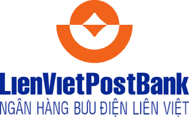
銀行BankNgân hàng2011
Isuzu2015
JILNESTA2017
MAYEKAWA2022
2022年2月 ～ 2026年6月Feb 2022 – Jun 202602/2022 – 06/2026
MAYEKAWA VIETNAM CO., LTD.（MYCOM）
営業部 アシスタントマネージャー 兼 人事部長Assistant manager, Sales department, and head of HRTrợ lý trưởng phòng Kinh doanh kiêm trưởng phòng Nhân sự
I supported the Japanese president, managed 2 to 3 sales staff, and grew the HR team to five.
Tôi hỗ trợ Tổng giám đốc người Nhật, quản lý 2 đến 3 nhân viên và mở rộng Nhân sự lên 5 người.
2017年8月 ～ 2022年2月Aug 2017 – Feb 202208/2017 – 02/2022
JILNESTA, Inc.（日系ITアウトソーシング企業） (Japanese IT outsourcing) (outsourcing IT, Nhật Bản)
2019年2月 ～ 2022年2月Feb 2019 – Feb 202202/2019 – 02/2022
ベトナム支店 営業マネージャーSales manager, Vietnam branchQuản lý kinh doanh, chi nhánh Việt Nam
約27名の支店で、部下5～6名を管理しました。
I managed 5 to 6 people in a branch of about 27.
Tôi quản lý 5 đến 6 người trong chi nhánh khoảng 27 người.
2017年8月 ～ 2019年2月Aug 2017 – Feb 201908/2017 – 02/2019
ITコミュニケーターIT communicatorIT communicator
日本の顧客とベトナム人エンジニアの間に立ち、要件を調整しました。
I aligned requirements between Japanese clients and Vietnamese engineers.
Tôi điều phối yêu cầu giữa khách hàng Nhật và kỹ sư Việt Nam.
2015年6月 ～ 2017年8月Jun 2015 – Aug 201706/2015 – 08/2017
Isuzu Vietnam Co., Ltd.（日越合弁の自動車メーカー） (Japan-Vietnam automotive joint venture) (liên doanh ô tô Việt Nhật)
部品部 売上管理担当Sales administration, Parts departmentQuản lý doanh số, phòng Phụ tùng
2011年9月 ～ 2015年6月Sep 2011 – Jun 201509/2011 – 06/2015
LienViet Post Bank
国際決済部 国際決済担当International payments officer, International Payments departmentChuyên viên thanh toán quốc tế, phòng Thanh toán quốc tế
Thai Tran Hoang Nha ／ Portfolio
05 ／ 09
Career 01 ／ MAYEKAWA VIETNAM
お客様の技術的なご要望を一つずつ伺い、 納品後も支援を続ける。I listen to each client's technical needs and keep supporting them after delivery.Tôi lắng nghe từng nhu cầu kỹ thuật của khách, và tiếp tục hỗ trợ sau khi bàn giao sản phẩm.
営業部 アシスタントマネージャー 兼 人事部長（2022年2月 ～ 2026年6月）Assistant manager, Sales, and head of HR (Feb 2022 – Jun 2026)Trợ lý trưởng phòng Kinh doanh kiêm trưởng phòng Nhân sự (02/2022 – 06/2026)
05 / 08
設備の提案Equipment proposalsĐề xuất thiết bị技術者と連携With engineersCùng kỹ sư
MAYEKAWA
納品後のフォローAfter-sales follow-upTheo sát sau bàn giao人事チーム 1→5名HR team 1 → 5Đội nhân sự 1 → 5
Business産業用冷凍機、コンプレッサーIndustrial refrigeration, compressorsMáy lạnh công nghiệp, máy nén
Report日本人社長を補佐Supported the Japanese presidentHỗ trợ Tổng giám đốc người Nhật
Sales営業担当2～3名を管理Managed 2 to 3 sales staffQuản lý 2 đến 3 nhân viên
HR人事チームを1名から5名に拡大Grew the HR team from 1 to 5Mở rộng đội Nhân sự từ 1 lên 5 người
Sales ／ 営業部門：法人顧客への提案、導入後のフォローSales: proposals to business clients and post-installation follow-upKinh doanh: đề xuất cho khách doanh nghiệp, theo dõi sau lắp đặt
初回訪問から納品後までの顧客伴走。トラブル時は工場、日本本社と連携して対応。I stayed with clients from the first visit to after delivery. When issues arose, I worked with the factory and head office in Japan.Tôi đồng hành cùng khách từ lần gặp đầu tới sau khi bàn giao. Khi có sự cố, tôi phối hợp với nhà máy và trụ sở Nhật để xử lý.
01顧客訪問とニーズ把握Visit clients, learn needsGặp khách, tìm nhu cầu
02技術者と仕様を決定Pick specs with engineersCùng kỹ sư chọn máy
03提案書と見積、プレゼンProposal, quote, pitchĐề xuất và thuyết trình
04交渉とクレーム対応Negotiate, handle complaintsĐàm phán và khiếu nại
05納品トラブルに対応Fix delivery issuesGỡ sự cố giao hàng
06営業チームを育成Train the sales teamĐào tạo đội kinh doanh
07ASEAN会議で英語報告Report at ASEAN meetingsBáo cáo họp ASEAN
HR ／ 人事、総務部門：社内研修と制度整備HR and general affairs: training and building systemsNhân sự, hành chính: đào tạo nội bộ, xây dựng chế độ
報告書作成とデータ照合に生成AI、AIエージェントを活用。未経験の採用担当2名を育成し、人事チームを5名に拡大。I brought generative AI and AI agents into reports and data checks. I trained two recruiters with no experience and grew HR to five people.Tôi đưa AI tạo sinh và AI agent vào báo cáo, đối chiếu số liệu. Tôi đào tạo 2 nhân viên tuyển dụng chưa có kinh nghiệm và mở rộng đội lên 5 người.
01データ集計とAIエージェントで調査Data summaries and research with AI agentsTổng hợp bằng số liệu và research bằng AI agent
02会計と人事の照合Cross-check accounting, HRĐối chiếu số liệu
03報連相と日越研修Horenso, culture trainingHorenso, văn hoá Nhật Việt
04採用担当を育成Train new recruitersKèm nhân viên tuyển dụng
Thai Tran Hoang Nha ／ Portfolio
06 ／ 09
Career 02 ／ JILNESTA, Inc.
人材派遣とIT案件の 営業チームを率いる。Leading the sales team for IT staffing and IT projects.Quản lý đội ngũ kinh doanh outsourcing nhân sự và dự án IT cho khách hàng.
ベトナム支店 営業マネージャー（2019年2月 ～ 2022年2月）Sales manager, Vietnam branch (Feb 2019 – Feb 2022)Quản lý kinh doanh, chi nhánh Việt Nam (02/2019 – 02/2022)
06 / 08
自ら営業Hands-on salesTự đi salesチーム未設立No team yetChưa có đội
ニーズ把握Client needsThấu hiểu nhu cầu
基本仕様Basic specsViết đặc tảExcelと図Excel + visualsExcel + hình
開発と調整Dev teamTrao đổi đội dev
アプリとWebApps, websitesApp và web
1→5〜6名Sales 1 → 5~6Đội 1 → 5~6Startup
27
支店約27名（営業4～5名、ITコミュニケーター2名、開発約20名）Branch of about 27 (4 to 5 sales, 2 IT communicators, about 20 developers)Chi nhánh khoảng 27 người (4 đến 5 kinh doanh, 2 IT communicator, khoảng 20 lập trình viên)
5～6
1名から育てた営業チーム（部下）Sales team grown from 1 (direct reports)Đội bán hàng xây từ 1 người (cấp dưới)
20
アプリとWebを一緒に作った開発者（約）About 20 developers I built apps and websites withKhoảng 20 lập trình viên cùng làm app và web
Startup ／ 営業チームを1名から5〜6名にSales team from 1 person to 5~6 peopleĐội bán hàng từ 1 người lên 5~6 người
Before a sales team existed, I sold in person, understood IT project needs, wrote basic specs and built apps and websites with the dev team.
Khi đội kinh doanh chưa thành lập, tôi tự đi sales, thấu hiểu nhu cầu dự án IT, viết đặc tả cơ bản, cùng đội dev làm app và web theo yêu cầu.
Skills ／ 身についたスキルSkills gainedKỹ năng đạt được
顧客理解仕様書IT用語チーム編成
client insightspecsIT termsteam building
hiểu kháchđặc tảthuật ngữ ITbuild team
顧客の要望を仕様に変え、開発チームを組んで形にする力が身につきました。
I learned to turn client requests into specs and to build the team that delivers them.
Tôi học được cách biến yêu cầu của khách thành đặc tả và lập đội để làm ra sản phẩm.
顧客の意図をくみ取る力
ニーズを仕様に落とし込む力
IT技術と用語を理解する力
Excelと図で基本仕様書をまとめる力
要望に合わせて開発チームを採用、編成する力
見積書、契約書、顧客向けの操作マニュアルを作る力
Understanding what clients really want
Turning needs into specifications
Technical and IT terminology
Basic specs in Excel and diagrams
Recruiting and building dev teams for client needs
Writing quotes, contracts and user guides for clients
Hiểu ý khách hàng
Nắm bắt nhu cầu, chuyển thành đặc tả
Hiểu kỹ thuật và thuật ngữ IT
Viết đặc tả cơ bản bằng Excel và hình
Tuyển dụng, build team dev theo yêu cầu
Soạn báo giá, hợp đồng, hướng dẫn sử dụng phần mềm cho khách
Thai Tran Hoang Nha ／ Portfolio
07 ／ 09
Career 03 ／ JILNESTA, Inc.
日本の顧客と ベトナム人エンジニアをつなぐ。Connecting Japanese clients and Vietnamese engineers.Kết nối khách hàng Nhật và kỹ sư Việt Nam.
ITコミュニケーター（2017年8月 ～ 2019年2月）／ 日本人上司に報告IT communicator (Aug 2017 – Feb 2019), reporting to a Japanese managerIT communicator (08/2017 – 02/2019), báo cáo cấp trên người Nhật
07 / 08
日本の顧客Japanese clientsKhách hàng Nhật
通訳と翻訳InterpretingPhiên dịchJA · EN · VI
ベトナム人技術者Vietnamese engineersKỹ sư Việt Nam
Client
日本の顧客、上司Japanese clients and managerKhách hàng, cấp trên người Nhật
要件、仕様、質問Requirements, specs, questionsYêu cầu, đặc tả, câu hỏi
⇄
Me
通訳、翻訳、管理Interpret, translate, managePhiên dịch, biên dịch, quản lý
日英越の3言語Japanese, English, Vietnamese3 thứ tiếng Nhật, Anh, Việt
⇄
Engineers
ベトナム人エンジニアVietnamese engineersKỹ sư Việt Nam
開発、修正、進捗Development, fixes, progressPhát triển, sửa lỗi, tiến độ
Bridge ／ 顧客と開発チームの橋渡しBridging clients and the development teamCầu nối khách hàng và đội phát triển
phiên dịch Nhật Việtdịch ba ngôn ngữUATtheo dõi tiến độ
通訳や翻訳で要件を伝え、UATから不具合修正まで管理しました。
I interpreted and translated requirements, then managed UAT and bug fixes.
Tôi phiên dịch, dịch yêu cầu, quản lý UAT và theo dõi sửa lỗi.
Thai Tran Hoang Nha ／ Portfolio
08 ／ 09
Career 04 ／ Isuzu Vietnam ／ LienViet Post Bank
数字と現場の実情を、 日本人上司に報告する。Figures and field insight, reported to Japanese managers.Số liệu và thực tế, báo cáo cho cấp trên người Nhật.
08 / 08
国際送金International paymentsThanh toán quốc tế部品の営業事務Parts sales adminHành chính bán phụ tùng
数字で報告Reports with numbersBáo cáo bằng số liệu
日本人上司へ報告Reporting to Japanese managersBáo cáo cấp trên người Nhật
2015年6月 ～ 2017年8月Jun 2015 – Aug 201706/2015 – 08/2017
Isuzu Vietnam Co., Ltd.（日越合弁の自動車メーカー） (Japan-Vietnam automotive joint venture) (liên doanh ô tô Việt Nhật)
部品部 売上管理担当Sales administration, Parts departmentQuản lý doanh số, phòng Phụ tùng部品の売上管理と代理店対応、日本人上司への報告Reporting to a Japanese manager; parts sales administration and dealer supportBáo cáo cấp trên người Nhật; quản lý doanh số phụ tùng, làm việc với đại lý
売上管理、代理店対応、通訳Sales administration, dealers, interpretingQuản lý doanh số, đại lý, phiên dịch
部品売上代理店訪問会議記録日越通訳
parts salesdealer visitsmeeting minutesJapanese-Vietnamese interpreting
doanh số phụ tùngthăm đại lýbiên bản họpphiên dịch Nhật Việt
部品売上や代理店訪問を担当し、会議記録と日越通訳も行いました。
I managed parts sales, visited dealers, and handled meeting minutes and Japanese-Vietnamese interpreting.
Tôi quản lý doanh số phụ tùng, thăm đại lý, ghi biên bản họp và phiên dịch Nhật Việt.
2011年9月 ～ 2015年6月Sep 2011 – Jun 201509/2011 – 06/2015
LienViet Post Bank
国際決済部 国際決済担当International payments officerChuyên viên thanh toán quốc tế
法人顧客決済条件必要書類輸出入決済
business clientspayment termsrequired documentstrade payments
I explained payment terms and required documents to business clients and handled import and export payments.
Tôi giải thích điều kiện thanh toán, hồ sơ cần thiết cho khách doanh nghiệp và xử lý thanh toán xuất nhập khẩu.
Since 2015 ／ 日系企業で培ったことWhat Japanese companies taught meĐiều học được ở công ty Nhật
報連相を欠かさないこと。数字で分かりやすく伝えること。 原因を踏まえ、筋道を立てて説明すること。Consistent horenso, clear reports with numbers, and logical explanations based on cause analysis.Horenso nghiêm túc, báo cáo rõ ràng bằng số liệu, giải thích mạch lạc dựa trên phân tích nguyên nhân.
For clients unsure about budget, technology or which machine to buy, I gathered site facts, laid out the options and proposed the right machine with our engineers.
Với khách hàng còn băn khoăn về kinh phí, kỹ thuật hay chọn sản phẩm, tôi thu thập thông tin nhà máy, sắp xếp phương án và cùng kỹ sư đề xuất máy phù hợp.
資金に合う選択肢技術をわかりやすく工場に合う機種納品まで確認
options that fit the budgettechnology made simplethe right machine for the plantchecked through delivery
phương án vừa kinh phígiải thích kỹ thuật dễ hiểumáy phù hợp nhà máytheo sát tới khi giao
PAIN TO CHOICE顧客の悩みから、選べる提案へFrom client worries to a clear choiceTừ nỗi lo của khách đến lựa chọn rõ ràng12s
顧客の悩みClient worriesNỗi lo của khách hàng私の対応What I doCách tôi hỗ trợ
PAIN設備投資の資金が足りないNot enough budget for the equipmentĐang thiếu kinh phí đầu tư
PAIN冷凍機の技術がわからないUnsure how the machines workKhông nắm được kỹ thuật máy
PAIN工場に最適な製品がわからないNot sure which product suits the plantKhông biết chọn sản phẩm nào tối ưu cho nhà máy
PAIN納期や設置が順調に進むか不安Worried about delivery and installationLo lắng tiến độ giao hàng, lắp đặt
情報を集め、 選ぶ手助けGather facts, help chooseThu thập thông tin, giúp khách chọn
HELP
資金に合わせて構成と見積を比べ、優先順位を一緒に決める
Compare set-ups and quotes against the budget and set priorities together
So sánh cấu hình, báo giá theo ngân sách, cùng khách chọn thứ tự ưu tiên
HELP
仕組みと違いを図と言葉でわかりやすく説明する
Explain how each machine works and differs, in plain words and drawings
Giải thích nguyên lý, khác biệt giữa các máy bằng hình vẽ và lời dễ hiểu
HELP
現場で温度、容量、製品の条件を集め、エンジニアと最適な機種を選ぶ
Collect site conditions (temperature, capacity, products) and pick the best fit with engineers
Thu thập điều kiện nhà máy (nhiệt độ, công suất, sản phẩm), cùng kỹ sư chọn máy tối ưu
HELP
納期を追い、納品まで現地で確認する
Track the schedule and check the handover on site
Theo dõi tiến độ và kiểm tra giao hàng tận nơi
資金、技術、機種選び、納期。顧客の悩みはいくつも重なる。
Budget, technology, product choice, delivery: clients carry several worries at once.
Kinh phí, kỹ thuật, chọn sản phẩm, tiến độ: khách hàng thường có nhiều nỗi lo cùng lúc.
情報を集めて整理し、顧客が納得して選べる形にする。
I gather and organise the facts so the client can choose with confidence.
Tôi thu thập, sắp xếp thông tin để khách hàng yên tâm lựa chọn.
MAYEKAWA VIETNAM2022.02 ～ 2026.06
04 TRIPS & VISITS
担当した 顧客訪問と出張の記録。
商談と顧客訪問を、時系列で紹介します。
05 / 08
訪問計画Visit planKế hoạch gặp khách
出張の承認Trip approvalDuyệt công tác
顧客訪問Client visitGặp khách
出張報告Trip reportBáo cáo công tác3営業日以内Within 3 daysTrong 3 ngày
At MAYEKAWA VIETNAM I was head of HR alongside my sales role, covering the full HR cycle from hiring and training to appraisals, payroll and general affairs.
Tại MAYEKAWA VIETNAM, tôi là trưởng phòng Nhân sự kiêm nhiệm cùng phòng Kinh doanh, phụ trách trọn chu trình nhân sự từ tuyển dụng, đào tạo, đánh giá đến tiền lương và hành chính.
人事部長1名から5名へ採用担当2名を育成日英の手順書
head of HRteam of 1 to 5two recruiters trainedSOPs in Japanese and English
trưởng phòng Nhân sựđội từ 1 lên 5 ngườiđào tạo 2 nhân viên tuyển dụngSOP tiếng Nhật, tiếng Anh
Recruiting
採用
Recruiting
Tuyển dụng
経営陣と採用計画を立て、技術者の採用を最初から最後まで担当しました。
I planned hiring with management and ran engineer recruitment end to end.
Tôi cùng ban lãnh đạo lập kế hoạch tuyển dụng và tuyển kỹ sư trọn quy trình.
Training
育成と研修
Training
Đào tạo
未経験の採用担当2名を育成し、日越の働き方の違いを踏まえた研修を作りました。
I trained two recruiters from scratch and built training on Japanese and Vietnamese ways of working.
Tôi đào tạo 2 nhân viên tuyển dụng chưa có kinh nghiệm và soạn chương trình đào tạo về khác biệt cách làm việc Nhật, Việt.
Appraisal
評価と定着
Appraisal and retention
Đánh giá và giữ chân
KPIと評価制度を整え、年1回の社員アンケートで施策を見直しました。
I set up KPIs and appraisals, and used an annual staff survey to improve policies.
Tôi xây KPI, chế độ đánh giá và dùng khảo sát nhân viên hằng năm để cải thiện chính sách.
Payroll ／ GA
給与、労務、総務
Payroll, HR admin, general affairs
Tiền lương, thủ tục, tổng vụ
給与計算チームを管理し、税務、社会保険、労働契約、総務の手配を担当しました。
I managed the payroll team and handled tax, social insurance, employment contracts and general affairs.
Tôi quản lý đội tính lương, phụ trách thuế, BHXH, hợp đồng lao động và hành chính tổng vụ.
Role人事部長（営業部と兼務）Head of HR, alongside salesTrưởng phòng Nhân sự kiêm Kinh doanh
Team1名体制から5名へFrom one person to fiveTừ 1 người lên 5 người
Recruiters未経験から2名を育成Two trained from scratchĐào tạo 2 người từ đầu
Documents日英の手順書、評価シートSOPs and scorecards in Japanese and EnglishSOP, phiếu đánh giá tiếng Nhật, tiếng Anh
01 RECRUITING
採用計画から入社後まで、 一人ずつ見届ける。From the hiring plan to the first weeks, one hire at a time.Từ kế hoạch tuyển dụng đến những tuần đầu, theo sát từng người.
I tracked time to fill, cost per hire, source conversion, offer acceptance and probation pass rates, and proposed improvements to management.
Tôi theo dõi thời gian tuyển, chi phí mỗi người, tỉ lệ chuyển đổi theo nguồn, tỉ lệ nhận offer và tỉ lệ qua thử việc, rồi đề xuất cải thiện với ban lãnh đạo.
I wrote the recruiting SOP, interview scorecards and report templates in Japanese and English so the two recruiters work to the same standard.
Tôi soạn SOP tuyển dụng, phiếu đánh giá phỏng vấn và mẫu báo cáo bằng tiếng Nhật, tiếng Anh để 2 nhân viên tuyển dụng làm theo cùng một chuẩn.
02 TRAINING AND APPRAISAL
人を育て、 同じ基準で評価する。Developing people and appraising them by one standard.Phát triển con người và đánh giá theo cùng một chuẩn.
研修、評価、社員アンケート、社内行事による、働きやすく成長できる仕組みづくり。
Through training, appraisals, staff surveys and company events, I built systems that help staff work well and grow.
Qua đào tạo, đánh giá, khảo sát nhân viên và sự kiện nội bộ, tôi xây cơ chế giúp nhân viên làm việc thuận lợi và phát triển.
Culture training
日越の違いを踏まえた研修
Training on Japanese and Vietnamese work styles
Đào tạo về khác biệt cách làm việc Nhật, Việt
日越の考え方の違いを踏まえて研修資料を作り、報連相、交渉、数値報告の方法を社員に指導しました。
I wrote training materials on how Japanese and Vietnamese colleagues think, and coached staff on hourensou (report, update, consult), negotiation and reporting with figures.
Tôi soạn tài liệu đào tạo về khác biệt tư duy làm việc Việt, Nhật và hướng dẫn nhân viên hourensou (báo cáo, liên lạc, xin ý kiến), đàm phán, báo cáo bằng số liệu.
Recruiters
未経験の採用担当2名を育成
Two new recruiters trained
Đào tạo 2 nhân viên tuyển dụng mới
手順書と評価シートを使って仕事を教え、一人で採用を進められるまで指導しました。
I taught them with the SOP and scorecards, and coached them until each could run hiring alone.
Tôi hướng dẫn bằng SOP, phiếu đánh giá và kèm cặp tới khi cả hai tự làm tuyển dụng được.
I built the KPI and appraisal framework, ran the review cycle and proposed pay rises, promotions and retention steps to management. I also coached managers on reviews and difficult people issues.
Tôi xây khung KPI, đánh giá, vận hành chu kỳ đánh giá và đề xuất tăng lương, thăng chức, giữ chân nhân sự với ban lãnh đạo; đồng thời tư vấn cho quản lý về đánh giá và các tình huống nhân sự khó.
I designed and ran the annual staff survey and used the results to improve policies. I also planned company trips, team building and Mid-Autumn events.
Tôi thiết kế, thực hiện khảo sát nhân viên hằng năm và dùng kết quả để cải thiện chính sách; tổ chức du lịch công ty, team building và Trung thu.
03 PAYROLL AND HR ADMIN
給与と労務を、 数字と書類で正確に回す。Payroll and HR admin, kept accurate with figures and records.Tiền lương và thủ tục nhân sự, chính xác bằng số liệu và hồ sơ.
給与、税務、社会保険の手続きから契約、監査書類、総務の手配まで、経理部門と連携して担当。
I handled payroll, tax and social insurance, contracts, audit documents and general affairs, working closely with the accounting team.
Tôi phụ trách tiền lương, thuế, BHXH, hợp đồng, hồ sơ kiểm toán và hành chính tổng vụ, phối hợp chặt với phòng Kế toán.
Payroll
給与計算チームの管理
Running the payroll team
Quản lý đội tính lương
毎月の給与、個人所得税、社会保険の手続きを統括し、人事の書類と証憑を経理部門に提出しました。
I ran monthly payroll, personal income tax and social insurance, and sent HR records and vouchers to accounting.
Tôi quản lý lương hằng tháng, thuế TNCN, BHXH và gửi hồ sơ, chứng từ nhân sự cho phòng Kế toán.
Contracts
労働契約と業務委託契約
Employment and contractor agreements
Hợp đồng lao động và hợp đồng dịch vụ
ベトナムの労働関連の法令に沿って、契約の更新、条件の変更、終了の手続きを進めました。
I handled renewals, changes and terminations of employment and contractor agreements under Vietnamese labour rules.
Tôi xử lý gia hạn, thay đổi điều kiện, chấm dứt hợp đồng lao động và hợp đồng dịch vụ theo quy định lao động Việt Nam.
I compared quotes and chose vendors for events, gifts and other GA items. At a regional meeting in Korea, I shared HR and GA practices with other country offices.
Tôi so sánh báo giá và chọn nhà cung cấp cho sự kiện, quà tặng và các hạng mục tổng vụ; tại cuộc họp khu vực ở Hàn Quốc, tôi chia sẻ cách quản lý nhân sự, tổng vụ với các chi nhánh.
Payroll毎月の給与計算Monthly payrollTính lương hằng tháng
Tax ／ Insurance個人所得税、社会保険Income tax, social insuranceThuế TNCN, BHXH
Contracts労働契約、業務委託契約Employment, contractorLao động, dịch vụ
Audit監査、決算の書類Audit and year-end filesHồ sơ kiểm toán, quyết toán
04 DEPARTMENT RESEARCH
各部門の業務を理解してから、 人を採り、配置する。Learning how each team works before hiring and placing people.Hiểu nghiệp vụ từng phòng ban rồi mới tuyển và xếp người.
I worked with sales, engineering, service and accounting to learn their workflows, headcount needs and labour costs, then fed this into role definitions and hiring plans.
Tôi làm việc với các phòng Kinh doanh, Kỹ thuật, Dịch vụ, Kế toán để nắm luồng công việc, nhu cầu nhân sự và việc sử dụng chi phí nhân sự, rồi đưa vào định nghĩa vai trò và kế hoạch tuyển dụng.
営業SalesKinh doanh
受注から納品までの流れと、案件ごとの人員ニーズ。
The flow from lead to delivery and the staff each project needs.
Luồng từ tìm khách tới giao hàng và nhu cầu người theo từng dự án.
HR
技術EngineeringKỹ thuật
案件に必要な建設、プラント、設計、CADの技能。
The construction, plant, design and CAD skills each project needs.
Kỹ năng xây dựng, nhà máy, thiết kế, CAD mà từng dự án cần.
サービスServiceDịch vụ
業務量に合わせた役割とチーム構成。
Roles and team structure matched to the workload.
Vai trò và cơ cấu đội khớp với khối lượng việc.
経理AccountingKế toán
人件費、証憑、照合する数値。
Labour costs, vouchers and the figures to reconcile.
Chi phí nhân sự, chứng từ và số liệu cần đối chiếu.
01役割の定義Role definitionsĐịnh nghĩa vai trò部門長と一緒に決めるagreed with department headschốt cùng trưởng bộ phận
02年間の人員計画Yearly headcount planKế hoạch nhân sự năm案件のニーズに合わせるmatched to project needskhớp nhu cầu dự án
03人件費の確認Labour cost checkKiểm tra chi phí nhân sự経理と数値を照合するfigures reconciled with accountingđối chiếu số liệu với Kế toán
05 QUALITY AND KAIZEN
人事の仕事を点検し、 手順を改善し続ける。Checking HR work and improving it every cycle.Kiểm tra công việc nhân sự, cải tiến qua từng vòng.
With the SOPs and scorecards as the standard, I checked hiring metrics, payroll and HR data and the staff survey, traced root causes and updated the process.
Lấy SOP và phiếu đánh giá làm chuẩn, tôi kiểm tra chỉ số tuyển dụng, số liệu lương và nhân sự, kết quả khảo sát nhân viên, tìm nguyên nhân gốc rồi cập nhật quy trình.
PDCAPDCA
P基準を決めるSet the standardĐặt chuẩn手順書と評価シートで、誰が担当しても同じ基準にする。SOPs and scorecards give everyone the same standard.SOP và phiếu đánh giá giúp ai làm cũng theo một chuẩn.
Dチームで運用するRun it as a teamĐội vận hành採用担当と給与担当が手順どおりに進める。Recruiters and the payroll team follow the process.Tuyển dụng và đội tính lương làm theo quy trình.
C点検するCheckKiểm tra指標とデータを照合し、差異や誤りを見つける。Cross-check metrics and data to find gaps and errors.Đối chiếu chỉ số, số liệu để tìm chênh lệch, sai sót.
A改善するImproveCải tiến原因を分析し、手順書を更新して経営陣に提案する。Trace the root cause, update the SOP and propose to management.Tìm nguyên nhân gốc, cập nhật SOP và đề xuất ban lãnh đạo.
採用の指標Hiring metricsChỉ số tuyển dụng採用までの日数、内定承諾率、試用期間の通過率time to fill, offer acceptance, probation pass ratethời gian tuyển, tỉ lệ nhận offer, tỉ lệ qua thử việc
給与と人事のデータPayroll and HR dataSố liệu lương, nhân sựAIも使って経理の数値と照合し、誤りを特定cross-checked with accounting, also with AI, to pin down errorsđối chiếu với số liệu kế toán, có dùng AI, để tìm sai sót
契約と監査の書類Contracts and audit filesHồ sơ hợp đồng, kiểm toán法令に沿って、いつでも監査に出せる状態にkept audit-ready under Vietnamese rulesluôn sẵn sàng kiểm toán theo quy định
社員の声Employee voiceTiếng nói nhân viên年1回のアンケート結果を施策の改善に使うthe annual survey results feed policy changeskết quả khảo sát hằng năm dùng để cải thiện chính sách
06 FOLLOW-UP AND REVIEW
入社後も定期的に話を聞き、 一人ひとりを支える。Regular check-ins after joining, support for every person.Theo dõi định kỳ sau khi vào làm, chăm sóc từng người.
As assistant manager in sales and head of HR, I ran monthly payroll and the yearly review of pay rises, promotions and retention based on appraisals.
Trên cương vị trợ lý trưởng phòng Kinh doanh kiêm trưởng phòng Nhân sự, tôi vận hành lương hằng tháng và rà soát hằng năm tăng lương, thăng chức, giữ chân nhân sự dựa trên kết quả đánh giá.
01勤怠と人事データAttendance and HR dataDữ liệu công, nhân sự
02給与計算Payroll runTính lương
03所得税、社会保険Income tax, social insuranceThuế TNCN, BHXH
04数値の照合Cross-checkĐối chiếu số liệu
05経理へ提出Sent to accountingGửi Kế toán
MAYEKAWAで人事を担当した期間My HR years at MayekawaThời gian làm nhân sự tại Mayekawa目盛り1つが1か月each tick is one monthmỗi vạch là một tháng
1名体制から5名のチームへFrom a one-person function to a team of fiveTừ một mình phụ trách lên đội 5 người
Pay ／ Tax
給与と個人所得税
Pay and income tax
Lương và thuế TNCN
毎月の給与計算と個人所得税の手続きを、給与計算チームと進めました。
I ran monthly pay and personal income tax with the payroll team.
Tôi cùng đội tính lương xử lý lương hằng tháng và thuế TNCN.
Insurance
社会保険
Social insurance
Bảo hiểm xã hội
入社、変更、退職に合わせて社会保険の手続きを進め、書類を経理部門に渡しました。
I filed social insurance as staff joined, changed or left, and passed the records to accounting.
Tôi làm thủ tục BHXH khi nhân viên vào, thay đổi hoặc nghỉ việc và chuyển hồ sơ cho phòng Kế toán.
Merit
昇給と昇格
Pay rises and promotions
Tăng lương, thăng chức
KPIと評価の結果をもとに、年1回の昇給、昇格、定着策を経営陣に提案しました。
Each year I proposed pay rises, promotions and retention steps to management based on KPIs and appraisals.
Hằng năm tôi đề xuất tăng lương, thăng chức, giữ chân nhân sự với ban lãnh đạo dựa trên KPI và kết quả đánh giá.
Benefits
福利厚生と社内行事
Benefits and events
Phúc lợi và sự kiện
社員旅行、チームビルディング、中秋節の行事を企画し、費用ごとに根拠を添えて提案しました。
I planned company trips, team building and Mid-Autumn events, giving a reason for each cost.
Tôi lên kế hoạch du lịch công ty, team building, Trung thu và trình kèm lý do cho từng khoản chi.
TASK TEAM MANAGEMENT
毎日の行動を数字で追い、 人を育成して成果につなげる。I manage the team by daily action numbers and focus on training skills and know-how to grow people and deliver results.Tôi quản lý đội ngũ bằng số liệu action mỗi ngày và tập trung vào đào tạo kỹ năng, nghiệp vụ, phát triển con người để tạo ra kết quả.
目標設定と育成による、営業、IT、人事のチーム運営。
I have led sales, IT and HR teams through clear targets, roles and coaching.
Tôi đã dẫn dắt đội kinh doanh, IT và nhân sự bằng mục tiêu, vai trò rõ ràng và kèm cặp.
約11年営業、IT、人事チーム運営人材育成
about 11 yearssales, IT and HRteam leadershipstaff development
khoảng 11 nămkinh doanh, IT, nhân sựquản lý đội ngũđào tạo nhân sự
WORKFLOWタスクを成果につなげる流れHow I turn a task into a resultCách tôi đưa một task đến kết quả4.8s
目標と役割Targets & rolesMục tiêu, vai tròKPIKPIsKPI
工程の標準化Standard stepsChuẩn hóa quy trìnhSOPSOPSOP
日々の数字Daily numbersSố liệu hằng ngày数値分析AnalysisPhân tích
From the numbers and reports I find the step or cause that is holding results back.
Từ số liệu và báo cáo, tôi tìm ra bước hoặc nguyên nhân đang làm nghẽn kết quả.
01メンバーTeamThành viên02話し合いDiscussThảo luận03解決策Agree a fixChốt cách gỡ
04
話し合いでボトルネックを解消
Discuss and clear the bottleneck
Thảo luận, bàn bạc giải quyết điểm nghẽn
メンバーと話し合い、ボトルネックの解消方法を一緒に決めます。
I talk it through with the team and we agree together on how to clear it.
Tôi cùng thành viên thảo luận, bàn bạc và thống nhất cách gỡ điểm nghẽn.
01アイデアIdeaÝ tưởng02改善案Kaizen planPhương án03提案ProposeĐề xuất
05
改善（カイゼン）の提案
Propose kaizen
Đề xuất kaizen
話し合いの結果をもとに、改善案をまとめて提案します。
From that discussion I write up and propose kaizen, a better way of working.
Từ kết quả thảo luận, tôi tổng hợp và đề xuất kaizen, tức cách làm tốt hơn.
01実行RunThực hiện02効果測定MeasureĐo lường03次の計画へNext planVòng tiếp
06
改善の実行と効果測定
Run and measure the kaizen
Thực hiện, kiểm tra, đo lường kaizen
改善を実行して効果を数字で測り、次の計画に反映します。
I put the kaizen into practice, measure its effect in numbers and feed it into the next plan.
Tôi triển khai kaizen, đo hiệu quả bằng số liệu và đưa vào kế hoạch vòng tiếp theo.
03 DAILY CHECK
毎日の確認で、 滞った仕事をいち早く動かす。Daily checks get stalled work moving again sooner.Rà soát hằng ngày để sớm gỡ việc bị kẹt.
日次報告を取りまとめ、毎日の会議でチームの業務時間と進捗を確認。
I compiled daily reports and reviewed team hours and progress in daily meetings.
Tôi tổng hợp báo cáo ngày và rà soát giờ làm, tiến độ của đội trong họp hằng ngày.
日次データ数値分析チーム会議
daily datadata analysisteam meetings
số liệu hằng ngàyphân tích số liệuhọp đội ngũ
01
工程の標準化
Standard steps
Chuẩn hóa quy trình
各メンバーが自分の業務を書き出し、「完了」の定義を明確にします。
Each member writes out their work and we define "done".
Mỗi thành viên viết ra công việc của mình và thống nhất thế nào là "hoàn thành".
→
02
日次報告
Daily report
Báo cáo ngày
作業時間、タスク数、各タスクの進捗を毎日報告します。
Hours, number of tasks and progress on each task, every day.
Giờ làm, số task và tiến độ từng task, báo cáo mỗi ngày.
→
03
数値分析
Data analysis
Phân tích số liệu
工程ごとの所要時間、完了率、停滞中の作業とその日数を算出します。
Time per step, completion rate, and stuck tasks with days stuck.
Thời gian từng bước, tỷ lệ hoàn thành, việc bị kẹt và số ngày kẹt.
→
04
毎日の確認
Daily review
Rà soát mỗi ngày
ミーティングで進捗と状況を確認し、次の行動を決めます。
In the meeting we check progress and status and decide next actions.
Trong cuộc họp, cả đội xem tiến độ, trạng thái và quyết định bước tiếp theo.
TASK AI SKILLS
繰り返しの作業はAIに任せ、 考え、判断する時間を生み出す。I hand repetitive work to AI and spend the time on thinking and deciding.Tôi giao việc lặp lại cho AI để dành thời gian suy nghĩ và quyết định.
AI Skills & Workflow
生成AIで繰り返し作業を効率化し、空いた時間を原因分析と問題解決に。
I use generative AI to streamline routine work and spend the time saved on analysis and problem solving.
Tôi dùng AI tạo sinh để tinh gọn việc lặp lại, dành thời gian tiết kiệm cho phân tích và giải quyết vấn đề.
AI fluencyhuman-in-the-loopAIエージェント業務効率化原因分析
AI fluencyhuman-in-the-loopAI agentsworkflow automationroot cause analysis
AI fluencyhuman-in-the-loopAI agenttự động hóa quy trìnhphân tích nguyên nhân
AIに任せる：最初の下書きAI takes: the first draftGiao cho AI: bản nháp đầu tiên
週次報告、会議の要約、メール、数字の照合など、繰り返す具体的な作業。
情報の収集と整理、最初の下書きづくり。
Specific repeat tasks: weekly reports, meeting notes, emails, cross-checking figures
Collecting and sorting information, writing the first draft
Việc lặp lại cụ thể: báo cáo tuần, tóm tắt cuộc họp, email, đối chiếu số liệu
Thu thập, sắp xếp thông tin, soạn bản nháp đầu tiên
人が決める：最終版I decide: the final versionCon người quyết định: bản cuối
数字を検証し、顧客と会社に合う表現に整える。
専門知識で判断し、AIの誤りを見抜く。
顧客データや社内資料は公開AIに入れない。
結果への最終責任を負う。
Verify the figures and set the tone for the customer and company
Use domain judgment to spot where AI is wrong
Keep customer data and internal files out of public AI tools
Own the result in the end
Kiểm chứng số liệu, chỉnh văn phong hợp với khách hàng và công ty
Phán đoán bằng chuyên môn, nhìn ra AI sai ở đâu
Dữ liệu khách hàng, tài liệu nội bộ: không đưa lên AI công cộng
PRINCIPLEAI drafts, I own the final version: directing AI and verifying the output, measured in time before and after.
PRINCIPLEAI làm bản nháp, tôi chịu trách nhiệm bản cuối: điều phối AI và kiểm chứng kết quả, đo bằng thời gian trước và sau.
WORKFLOW繰り返しの作業をAIに任せる流れHow I hand repetitive work to AICách tôi giao việc lặp lại cho AI4.8s
書き出すWrite it outLiệt kê工程の分解StepsChia bước
定型作業の洗い出しSpot repetitionTìm việc lặp毎日、毎週Daily, weeklyNgày, tuần
AIに任せるHand to AIGiao cho AI生成AIGenerative AIAI tạo sinh
人が確認A person checksNgười kiểm tra最終判断Final callQuyết định cuối
人の仕事へTime for peopleViệc của con người
業務を工程に分解し、時間のかかる箇所を把握します。
I split the job into steps and see where the time goes.
Tôi chia công việc thành từng bước và xem thời gian tốn vào đâu.
毎日、毎週繰り返す定型の作業を洗い出します。
I pick out the fixed tasks that repeat every day or week.
Tôi chọn ra những việc có khuôn mẫu, lặp lại mỗi ngày, mỗi tuần.
プロンプトとテンプレートを用意し、要約や集計をAIに任せます。
With prompts and templates ready, AI does the summaries and totals.
Với prompt và mẫu có sẵn, AI làm phần tóm tắt và tổng hợp.
AIの結果は人が確認し、最終判断も人が担います。
A person checks the AI output and makes the final call.
Con người kiểm tra kết quả AI và đưa ra quyết định cuối cùng.
生まれた時間は、原因の分析や人との対話に充てます。
The time saved goes to finding root causes and talking with people.
Thời gian tiết kiệm được dành cho phân tích nguyên nhân và trao đổi với con người.
Tools生成AI、AIエージェント、AI会話練習Generative AI, AI agents, AI conversation practiceAI tạo sinh, AI agent, luyện hội thoại với AI
Time情報整理の時間 80～90%減（4年前比、自己試算）80 to 90% less time organising information (vs four years ago)Giảm 80 đến 90% thời gian xử lý thông tin (so với 4 năm trước)
Output生産性 約3～4倍（自己試算）About 3 to 4 times the productivityNăng suất khoảng 3 đến 4 lần
RuleAIの結果は人が確認してから使うA person checks AI output before it is usedCon người kiểm tra kết quả AI trước khi dùng
01 WHERE THE TIME GOES
仕事は3つの層。 土台の約7割はAIと進める。Work has three layers. AI does the groundwork, about 70%.Công việc có ba tầng. Tầng đáy khoảng 70%, tôi làm cùng AI.
I hand AI the collecting and organising of information, roughly 70% of working time in my view, and focus on analysis and people.
Tôi giao cho AI phần thu thập, xử lý thông tin (theo tôi, khoảng 70% thời gian) để dành thời gian cho phân tích và quan hệ với con người.
日々の運用 70%分析と計画 20%関係と責任 10%
daily operations 70%analysis and planning 20%relationships 10%
vận hành hằng ngày 70%phân tích, kế hoạch 20%quan hệ, trách nhiệm 10%
PYRAMID仕事の3層とAIの役割Three layers of work and where AI fitsBa tầng công việc và vai trò của AI12s
人の仕事の3層Three layers of workBa tầng công việc
10%人との関係と責任Relationships and responsibilityQuan hệ và trách nhiệm関係を築き、保ち、専門性と経験で最終責任を負うBuild and keep relationships, own the result with expertise and experienceTạo và giữ quan hệ, chịu trách nhiệm cuối cùng bằng chuyên môn, kinh nghiệm
20%分析と計画AI 50%人 50%Analysis and planningAI 50%People 50%Phân tích và lập kế hoạchAI 50%Người 50%分析し、考え、仕事の計画を立てるAnalyse, think and plan the workPhân tích, suy nghĩ và lập kế hoạch công việc
70%日々の運用業務Daily operationsVận hành hằng ngày調査、確認、要約、入力、報告Research, checking, summaries, data entry, reportsTìm kiếm, kiểm tra, tóm tắt, nhập liệu, báo cáo
例：営業の仕事Example: salesVí dụ: công việc Sales
10%顧客との信頼関係Customer relationshipsQuan hệ khách hàng経験を生かして関係を築き、保ち、顧客への責任を持つUse my experience to build and keep relationships and take responsibility to the customerDùng kỹ năng, kinh nghiệm tạo và giữ quan hệ, chịu trách nhiệm với khách hàng
20%活動と売上指標の分析AI 50%人 50%Activity and sales figuresAI 50%People 50%Phân tích chỉ sốAI 50%Người 50%活動と売上の指標を分析し、PDCAで次の行動を決めるAnalyse activity and sales figures, then set the next action with PDCAPhân tích chỉ số hoạt động, kinh doanh, đánh giá hành động theo PDCA
70%顧客情報の収集Customer informationTìm thông tin khách見込み顧客の調査、情報源の確認、集計、入力、報告、記録Finding customers, checking sources, compiling, data entry, reports, filingTìm khách hàng, kiểm tra nguồn, tổng hợp, nhập liệu, báo cáo, lưu hồ sơ
I led the design and development of AI CV/JD matching, with a person checking every decision before use.
Tôi chủ trì thiết kế và phát triển hệ thống AI phân tích CV, so khớp JD, với người phụ trách kiểm tra từng quyết định trước khi dùng.
AI会話練習
AI conversation practice
Luyện hội thoại với AI
AI会話アプリで日本語と英語の会話を練習しています。
I practise Japanese and English conversation with an AI conversation app.
Tôi luyện hội thoại tiếng Nhật và tiếng Anh với ứng dụng hội thoại AI.
80～90%
情報整理の時間を削減（4年前比）Less time organising information (vs four years ago)Giảm thời gian xử lý thông tin (so với 4 năm trước)
3～4倍xlần
生産性向上。従来3～4名分の業務を1名で処理（自己試算）Higher productivity: one person now handles the work of 3 to 4Năng suất tăng: 1 người làm phần việc trước đây cần 3 đến 4 người
TASK LANGUAGES
3つの言語で、 人と仕事をつなぐ。Three languages to connect people and work.Ba ngôn ngữ để kết nối con người và công việc.
I use Japanese to report to the Japanese president and in meetings and negotiation, and English to present at ASEAN meetings and negotiate with the CEO of a European company.
Tôi dùng tiếng Nhật để báo cáo Tổng giám đốc người Nhật, họp và đàm phán; dùng tiếng Anh để thuyết trình tại họp ASEAN và đàm phán với CEO công ty châu Âu.
JLPT N2ベトナム語 母語日英越の3言語
JLPT N2Vietnamese, nativethree languages
JLPT N2tiếng Việt bản ngữ3 thứ tiếng
日本語JapaneseTiếng Nhật
JLPT N2JLPT N2JLPT N2
日本人社長、経営陣への直接報告Direct reports to Japanese managementBáo cáo trực tiếp lãnh đạo người Nhật会議と交渉Meetings and negotiationHọp và đàm phán日越通訳Japanese-Vietnamese interpretingThông dịch Nhật - Việt
English
ビジネス英語Business EnglishTiếng Anh công việc
ASEAN会議で英語で発表Presenting at ASEAN meetingsThuyết trình tại họp ASEAN欧州企業のCEOとの交渉Negotiating with a European CEOĐàm phán với CEO châu Âu英文の仕様書、メールSpecs and emails in EnglishĐặc tả, email tiếng Anh
Tiếng Việt
母語NativeBản ngữ
ベトナム人技術者との橋渡しBridging with Vietnamese engineersCầu nối với kỹ sư Việt Nam日英越の3言語で翻訳Translating in three languagesDịch qua lại 3 thứ tiếng現地の顧客、チームとの対話Talking with local clients and teamsTrao đổi với khách hàng, đội ngũ
JapaneseJLPT N2
Englishビジネス英語Business EnglishTiếng Anh công việc
Vietnamese母語NativeBản ngữ
Practice日本語と英語の会話を毎日練習Daily Japanese and English conversation practiceLuyện hội thoại tiếng Nhật, tiếng Anh mỗi ngày
01 JAPANESE AT WORK
日本人の経営陣に、 日本語で直接報告する。Reporting directly to Japanese management, in Japanese.Báo cáo trực tiếp cho lãnh đạo người Nhật bằng tiếng Nhật.
JLPT N2. I practise hourensou with Japanese management and stay proactive. I grasp overall progress, deadlines and plans, track the work and report results, mainly in Japanese.
JLPT N2. Tôi chủ động thực hiện hourensou (báo cáo, liên lạc, xin ý kiến) với lãnh đạo người Nhật. Từ nắm tiến độ tổng thể, deadline, lập kế hoạch, theo dõi tiến độ đến báo cáo kết quả, tôi làm chủ yếu bằng tiếng Nhật.
Hō
報告
Hō: report
Hō: báo cáo
経過と結果を、数字で自分から報告します。
I report progress and results with figures, before being asked.
Tôi tự báo cáo diễn biến và kết quả bằng số liệu, không đợi hỏi.
Ren
連絡
Ren: update
Ren: liên lạc
予定の変更や問題は、すぐに関係者へ連絡します。
I update everyone involved as soon as plans change or problems appear.
Có thay đổi hay vấn đề, tôi liên lạc ngay với người liên quan.
Sō
相談
Sō: consult
Sō: xin ý kiến
判断に迷う点は、選択肢を用意して早めに相談します。
When a decision is unclear, I consult early with options ready.
Việc cần quyết, tôi xin ý kiến sớm, kèm sẵn phương án.
仕事の進め方How I run the workCách tôi làm chủ công việc
01
全体の進捗を把握
Grasp overall progress
Nắm tiến độ tổng thể
仕事全体と各工程の状況をつかみます。
I keep the whole picture and each step in view.
Tôi nắm bức tranh chung và tình trạng từng bước.
02
期限と納期を理解
Understand deadlines
Hiểu deadline, thời hạn
期限から逆算し、優先順位を決めます。
I work back from deadlines to set priorities.
Tôi tính ngược từ deadline để đặt thứ tự ưu tiên.
03
業務計画を立てる
Plan the work
Lập kế hoạch công việc
担当、手順、日程を計画にまとめます。
I set owners, steps and dates in one plan.
Tôi lên kế hoạch gồm người phụ trách, các bước và lịch.
04
進捗を追う
Track progress
Theo dõi tiến độ
計画との差を毎日確認します。
I check the gap against the plan every day.
Tôi kiểm tra chênh lệch so với kế hoạch mỗi ngày.
05
節目ごとに報告
Report at each milestone
Báo cáo theo tiến trình
進み具合を日本語で報告します。
I report how the work is going, in Japanese.
Tôi báo cáo tiến độ bằng tiếng Nhật.
06
結果を報告
Report results
Báo cáo kết quả
実施結果と次の課題を報告します。
I report the results and the next steps.
Tôi báo cáo kết quả thực hiện và việc cần làm tiếp.
02 ENGLISH ON STAGE
ASEANの会議で、 英語で発表する。At an ASEAN staff assembly, presenting in English.Tại hội nghị ASEAN, thuyết trình bằng tiếng Anh.
タイのASEAN社員総会でベトナム市場について英語で発表、欧州企業のCEOとも英語で交渉。
I presented in English on the Vietnam market at an ASEAN staff assembly in Thailand, and negotiated in English with the CEO of a European company.
Tôi thuyết trình bằng tiếng Anh về thị trường Việt Nam tại hội nghị nhân viên ASEAN ở Thái Lan và đàm phán bằng tiếng Anh với CEO công ty châu Âu.
ベトナム市場の動きThe Vietnam marketThị trường Việt Nam
売上と案件の数字Sales and project figuresSố liệu doanh số, dự án
各国の同僚と意見交換Exchanging views across ASEANTrao đổi với đồng nghiệp các nước
Tôi trình bày tình hình thị trường Việt Nam bằng tiếng Anh.
Negotiate
欧州企業との交渉
Negotiating with a European CEO
Đàm phán với CEO châu Âu
欧州企業のCEOと英語で交渉しました。
I negotiated in English with the CEO of a European company.
Tôi đàm phán bằng tiếng Anh với CEO công ty châu Âu.
Slides
英語の資料
English slides
Slide tiếng Anh
英語の資料を用い、ASEAN各国の社員に向けて発表しました。
I presented to staff from across ASEAN using English slides.
Tôi trình bày trước nhân viên các nước ASEAN bằng slide tiếng Anh.
03 BRIDGING CEO AND TEAM
社長とチームの間に立ち、 意図を伝えて成果につなげる。Standing between the CEO and the team, turning intent into results.Cầu nối giữa CEO và đội ngũ, truyền đúng ý để ra kết quả.
As the bridge between the CEO and the Vietnamese team and departments, I keep learning the CEO's choice of words, thinking and mindset, so I can carry the intent of both sides. The goal is results, not just translation.
Là cầu nối giữa CEO với đội ngũ và các phòng ban người Việt Nam, tôi luôn tìm hiểu, học hỏi cách dùng từ, cách suy nghĩ và tư duy của CEO để truyền tải đúng ý nghĩa thông điệp của hai bên, hướng tới kết quả công việc, không chỉ chuyển ngữ.
社長CEOCEOチーム、各部署Team, departmentsĐội ngũ, phòng ban仕事の成果Work resultsKết quả công việc双方の意図Intent, both waysÝ nghĩa thông điệp実行ActionHành động考え方ThinkingTư duy
Learn
社長の言葉を学ぶ
Learning the CEO's language
Học cách CEO dùng từ
社長の言葉の選び方、考え方、判断の軸を常に学んでいます。
I keep learning how the CEO chooses words, thinks and decides.
Tôi luôn học cách CEO dùng từ, cách suy nghĩ và tư duy khi ra quyết định.
Convey
双方の意図を伝える
Carrying both sides' intent
Truyền đúng ý hai bên
社長の方針をチームと各部署に伝え、現場の声を社長に届けます。
I pass the CEO's direction to the team and departments, and bring their voice back to the CEO.
Tôi truyền định hướng của CEO tới đội ngũ, phòng ban và đưa tiếng nói của họ ngược lên CEO.
Result
成果につなげる
Driving results
Hướng tới kết quả
言葉を置き換えるだけでなく、仕事が成果を出すまで見届けます。
I do not just swap words; I follow through until the work delivers results.
Tôi không chỉ chuyển ngữ mà theo sát tới khi công việc ra kết quả.
01 KAIZEN
問題は現象で止めず、 原因から改善する。Fix the cause, not just the symptom.Không dừng ở hiện tượng, sửa từ nguyên nhân gốc.
Problem ／ Root cause ／ Kaizen
数字による問題把握から、根本原因の探索、対策の試行と効果測定、標準化までを一つの流れで。
I handle each problem as one loop: describe it in numbers, find the root cause, test a countermeasure, measure the effect and standardise.
Tôi xử lý mỗi vấn đề theo một vòng kaizen: mô tả bằng số liệu, tìm nguyên nhân gốc, thử đối sách, đo hiệu quả rồi chuẩn hoá.
現象と原因を分けるなぜなぜ分析PDCA標準化
symptom vs cause5 WhysPDCAstandardise
tách hiện tượng và nguyên nhân5 WhyPDCAchuẩn hoá
01
問題の特定
Define the problem
Xác định vấn đề
起きていることを事実で書き出します。
I write down what is happening as facts.
Tôi ghi lại điều đang xảy ra bằng sự việc.
02
現状の数字
Measure the baseline
Đo hiện trạng
件数、時間、比率で現状を測ります。
I measure the current state in counts, time and rates.
Tôi đo hiện trạng bằng số lần, thời gian và tỉ lệ.
03
根本原因
Find the root cause
Tìm nguyên nhân gốc
なぜを5回重ねて原因を絞ります。
I ask why five times to narrow down the cause.
Tôi hỏi tại sao 5 lần để khoanh vùng nguyên nhân.
04
対策の実行
Test a countermeasure
Thử đối sách
原因に合わせた対策を小さく試します。
I try a fix that matches the cause, small scale first.
Tôi thử đối sách đúng nguyên nhân, làm nhỏ trước.
05
効果の確認
Measure the effect
Đo lại hiệu quả
同じ指標、同じ測り方で前後を比べます。
I compare before and after with the same metric and method.
Tôi so trước và sau bằng cùng chỉ số, cùng cách đo.
06
標準化
Standardise
Chuẩn hoá
効果があった方法を手順書に残します。
What works goes into the SOP for the whole team.
Cách làm hiệu quả được đưa vào SOP cho cả đội.
↻標準化の後は、次の問題で01に戻るAfter standardising, back to 01 with the next problemChuẩn hoá xong, quay lại bước 01 với vấn đề kế tiếp
5 WHYS
なぜを5回くり返す
Ask why five times
Hỏi tại sao 5 lần
WHY 1起きた現象What happenedHiện tượng xảy ra
WHY 2起きる条件When it happensĐiều kiện xảy ra
WHY 3関わる手順Which processQuy trình liên quan
WHY 4ルールと道具Rules and toolsQuy định và công cụ
WHY 5仕組みの穴Gap in the systemLỗ hổng trong cơ chế
ROOT根本原因と対策Root cause and fixNguyên nhân gốc và đối sách
人ではなく仕組みを見る
Look at the system, not the person
Nhìn vào cơ chế, không quy lỗi cho người
くり返す問題は手順や道具にあることが多いため、人を責めずに仕組みを直します。
Repeated problems usually sit in the process or tools, so I fix the system instead of blaming people.
Vấn đề lặp lại thường nằm ở quy trình hoặc công cụ, nên tôi sửa cơ chế thay vì trách người.
小さく試して測る
Test small, then measure
Thử nhỏ rồi đo
対策は一部で試し、数字で効果を確かめてから広げます。
I try a fix in one area and roll it out only after the numbers confirm it.
Tôi thử đối sách ở phạm vi nhỏ, có số liệu xác nhận rồi mới mở rộng.
改善を仕組みに残す
Keep the improvement in the process
Giữ cải tiến trong quy trình
効果があった方法は手順書とチェックリストにして、誰でも同じ結果を出せるようにします。
Fixes that work become SOPs and checklists, so anyone gets the same result.
Cách làm hiệu quả được viết thành SOP và checklist để ai làm cũng ra cùng kết quả.
02 DATA FIRST
判断は感覚ではなく、 数字で行う。Decisions by numbers, not by feelings.Nhận định bằng số liệu, không bằng cảm tính.
Metric ／ Baseline ／ Before and after
改善の前提は仕事の数字。同じ指標で前後を比べなければ効果は見えないため、最初に指標を統一。
Work data is the prerequisite for kaizen: without the same numbers before and after, no one can tell whether a change worked.
Số liệu công việc là điều kiện đầu tiên của kaizen: không có cùng một số liệu trước và sau thì không biết cải tiến có hiệu quả hay không.
数字が先同じ指標で前後を比べる事実と意見を分ける
data firstsame metric before and afterfacts vs opinions
số liệu trước tiêncùng chỉ số trước và sautách sự việc và ý kiến
FEELING
感覚による判断
Judging by feeling
Nhận định cảm tính
「最近、遅い気がする」"It feels slow lately.""Hình như dạo này chậm."
「お客様は気に入っていないようだ」"The client probably doesn't like it.""Chắc khách không thích."
「もう十分だと思う」"I think it's good enough.""Tôi thấy vậy là ổn rồi."
→
DATA
数字による判断
Judging by data
Nhận định bằng số liệu
平均処理日数Average lead time in daysThời gian xử lý trung bình (ngày)
月別の成約率Conversion rate by monthTỉ lệ chốt theo tháng
100件あたりのミス件数Errors per 100 casesSố lỗi trên 100 hồ sơ
BEFORE ／ AFTER
対策の前と後を、同じ指標で比べる
The same metric, before and after the fix
So trước và sau đối sách bằng cùng một chỉ số
対策FixĐối sách
対策前BeforeTrước đối sách対策後AfterSau đối sách考え方を示す図ですIllustration of the methodHình minh hoạ cách đo
01
指標を決める
Define the metric
Chọn chỉ số
何を測るかを作業の前に決めます。
I decide what to measure before the work starts.
Tôi chọn chỉ số cần đo trước khi bắt tay làm.
02
現状を記録する
Record the baseline
Ghi hiện trạng
対策の前の数字を残します。
I record the numbers before any change.
Tôi ghi lại số liệu trước khi thay đổi.
03
前後を比べる
Compare
So sánh trước và sau
同じ測り方で対策の後を測ります。
I measure after the change in the same way.
Tôi đo lại sau thay đổi theo cùng cách đo.
04
共有して決める
Share and decide
Chia sẻ và quyết định
数字をチームに共有し、続けるか見直すかを決めます。
I share the numbers with the team and decide to keep or revise.
Tôi chia sẻ số liệu cho đội rồi quyết định giữ hay điều chỉnh.
03 PEOPLE × AI
作業はAIに任せ、 人は責任と関係を担う。AI takes the tasks, people own responsibility and relationships.AI làm tác vụ, con người giữ trách nhiệm và quan hệ.
離れて働く社員の一日を、 数字で見える化する。A remote team's working day, made visible in numbers.Một ngày làm việc từ xa, nhìn rõ bằng số liệu.
在宅や遠隔地で働く社員の勤務時間、進捗、勤怠の一括管理。働いていないときは自動でメール通知。
A system that tracks remote staff working time, progress and timesheets in one place, and sends an email alert automatically when someone stops working.
Phần mềm quản lý thời gian làm việc, tiến độ và chấm công của nhân viên làm từ xa, tự động gửi email cảnh báo khi nhân viên không làm việc.
勤務時間のダッシュボード：操作、無操作、オフラインの割合Working time dashboard: active, idle and offline sharesBảng theo dõi thời gian làm việc: tỉ lệ thao tác, không thao tác, offline
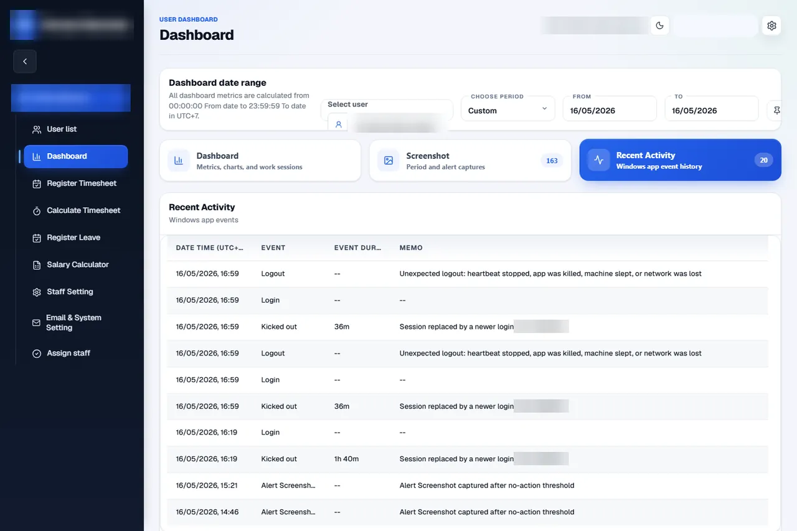
操作ログで進捗を確認Activity log to follow progressNhật ký hoạt động để theo dõi tiến độ
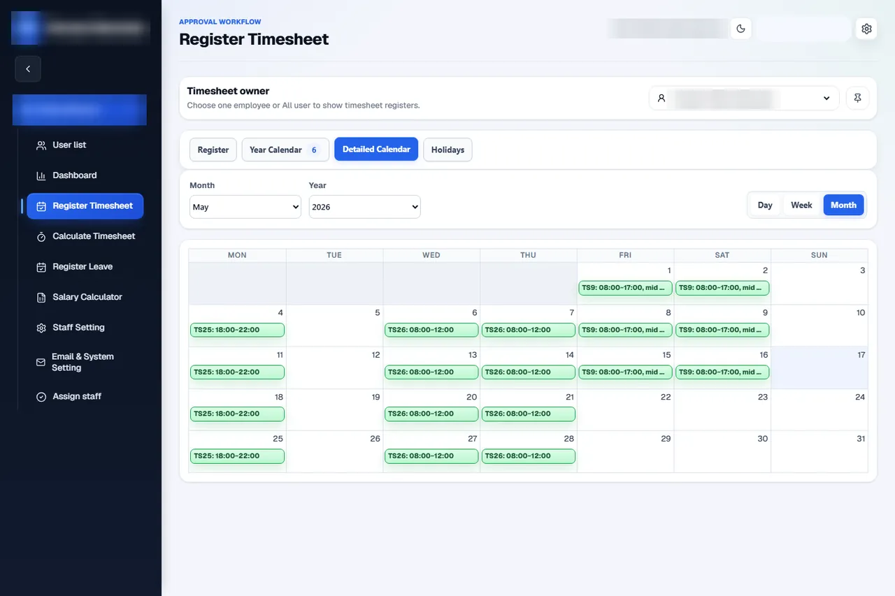
勤怠カレンダーTimesheet calendarLịch chấm công
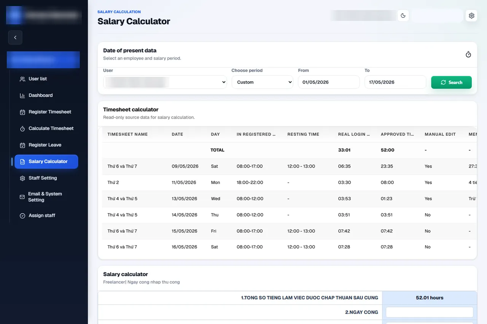
勤怠の集計と給与計算Timesheet totals and pay calculationTổng hợp công và tính lương
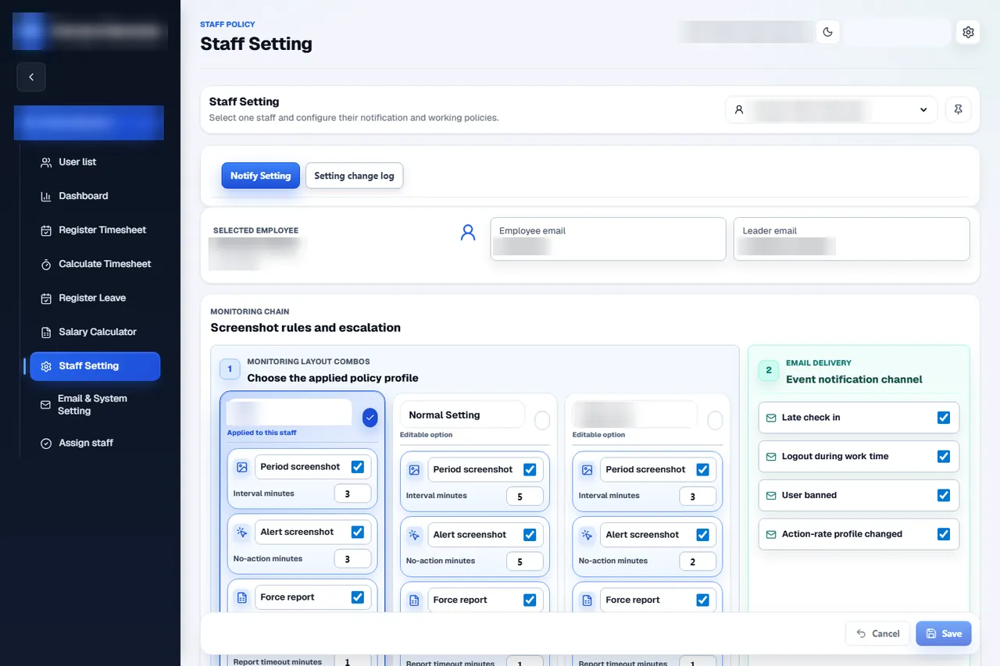
無操作時の通知とメールの設定Idle alert and email settingsCài đặt cảnh báo và email khi không thao tác
勤務時間の記録
Working time tracking
Quản lý thời gian làm việc
操作時間、無操作時間、オフライン時間を自動で記録します。
Active, idle and offline time are recorded automatically.
Tự ghi nhận thời gian thao tác, không thao tác và offline.
進捗とプランナー
Progress and planner reports
Tiến độ và báo cáo planner
タスクの進捗をプランナーで管理し、報告にまとめます。
Task progress is managed in a planner and rolled into reports.
Quản lý tiến độ công việc trên planner và tổng hợp thành báo cáo.
勤怠
Timesheets
Chấm công
勤務の登録、承認、休暇の申請を一つの流れで行います。
Shift registration, approval and leave requests in one flow.
Đăng ký ca, duyệt công và xin nghỉ phép trong một luồng.
スコア計算
Activity score
Tính điểm
稼働の記録をスコアにし、給与計算につなげます。
Work records become an activity score that feeds pay calculation.
Quy đổi dữ liệu làm việc thành điểm và nối sang tính lương.
カレンダー
Calendar
Lịch làm việc
シフト、休日、年間の予定をカレンダーで確認します。
Shifts, holidays and the yearly plan on one calendar.
Xem ca làm, ngày nghỉ và kế hoạch cả năm trên lịch.
自動メール通知
Automatic email alert
Email cảnh báo tự động
無操作が続いたときや勤務中のログアウトを、本人と上司にメールで知らせます。
Long idle time or logging out during work hours sends an email alert to the staff member and their manager.
Khi không thao tác quá lâu hoặc thoát giữa giờ làm, hệ thống gửi email cảnh báo cho nhân viên và quản lý.
02 RECRUITING
CVと求人票をつなぎ、 選考の今を一目で追う。Linking CVs and job descriptions, every candidate tracked at a glance.Kết nối CV với JD, theo dõi từng ứng viên trong một màn hình.
A customer management system with company and contact lists, duplicate checks, a Kanban sales pipeline, appointments, email and sales reports.
Phần mềm quản lý khách hàng: danh sách khách tổ chức và cá nhân, chống trùng dữ liệu, pipeline Kanban, lịch hẹn, email và báo cáo doanh thu.
顧客ダッシュボード：区分別の顧客数と商談の進み具合Dashboard: customers by segment and deal progress by statusDashboard: số khách theo nhóm và tiến độ theo trạng thái
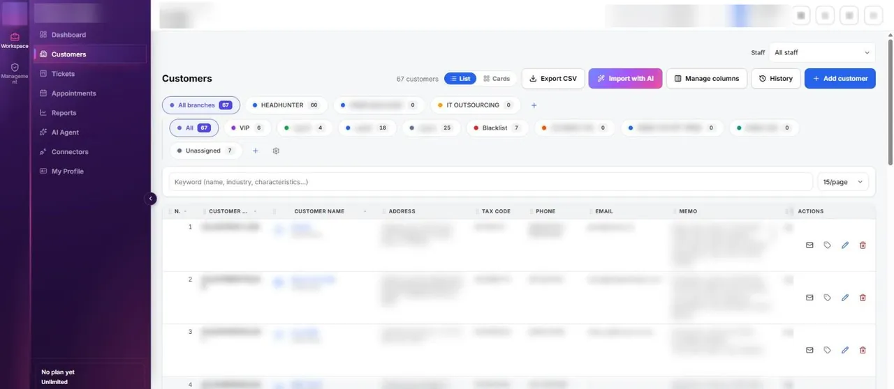
顧客台帳：区分とランクで絞り込みCustomer list filtered by segment and rankDanh sách khách hàng lọc theo nhóm và hạng
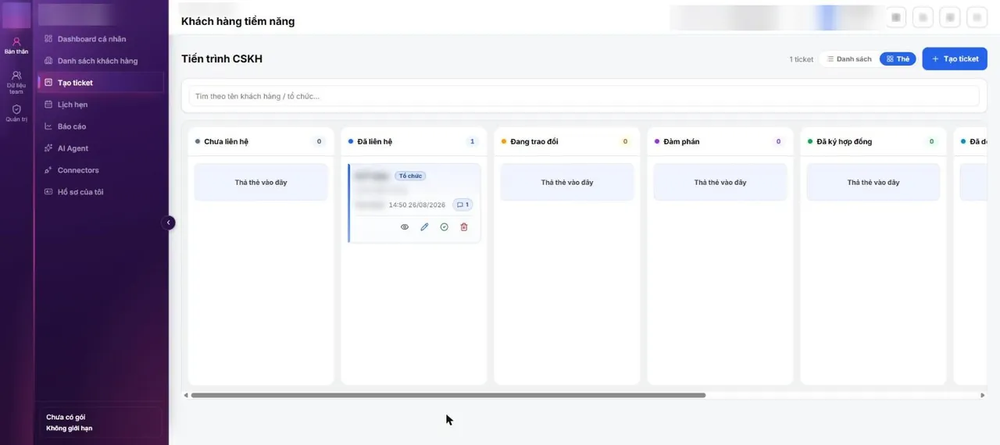
顧客対応のカンバン：段階ごとにチケットを動かすCustomer care Kanban: tickets move stage by stageKanban chăm sóc khách hàng: kéo ticket qua từng giai đoạn
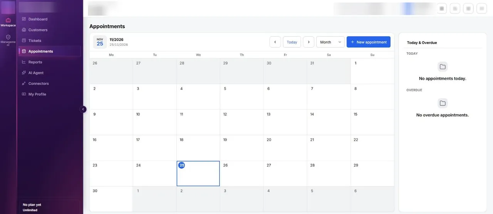
商談予定のカレンダーと、当日や期限切れの予定Appointment calendar with today and overdue listsLịch hẹn kèm danh sách hẹn hôm nay và quá hạn
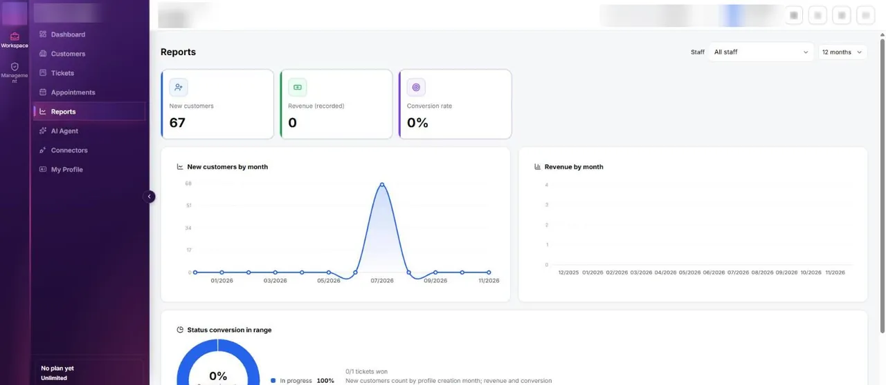
売上レポート：月ごとの新規顧客と売上、成約率Sales reports: new customers and revenue by month, conversion rateBáo cáo doanh thu: khách mới và doanh thu theo tháng, tỷ lệ chốt
顧客管理
Customer lists
Quản lý khách hàng
法人と個人を分けて管理し、列ごとに並べ替えと絞り込みができます。
Companies and contacts are kept apart, with sorting and filtering on every column.
Tách khách tổ chức và cá nhân, sắp xếp và lọc theo từng cột.
AI入力と重複チェック
AI entry and duplicate checks
Nhập liệu AI và chống trùng
名刺や文章からAIで入力し、税番号、Webサイト、社名の順で重複を確かめます。
AI fills records from business cards or text, then checks for duplicates by tax code, website and name.
AI nhập liệu từ danh thiếp hoặc văn bản, rồi chống trùng theo mã số thuế, website và tên.
商談のカンバン
Kanban pipeline
Pipeline Kanban
商談の段階をドラッグで動かし、顧客対応のチケットも残します。
Deals move between stages by drag and drop, with customer care tickets alongside.
Kéo thả cơ hội qua từng giai đoạn, kèm ticket chăm sóc khách hàng.
商談予定とリマインド
Appointments and reminders
Lịch hẹn và nhắc nhở
当日の予定と期限切れの予定を知らせます。
Today's and overdue appointments trigger reminders.
Nhắc lịch hẹn hôm nay và lịch đã quá hạn.
メール
Email
Email
1対1のメールと、テンプレートを使った配信ができます。
One-to-one emails and template-based campaigns.
Gửi email 1-1 và chiến dịch theo mẫu.
売上レポート
Sales reports
Báo cáo doanh thu
担当者別の売上と月ごとの成約率を確認できます。
Revenue by salesperson and monthly conversion rates.
Xem doanh thu theo nhân viên và tỉ lệ chốt theo tháng.
03+ CUSTOMERS / SETUP AND AI
入力はAIに任せ、 権限と連携は現場に合わせる。AI fills in the data, access fits each team.AI lo phần nhập liệu, phân quyền và kết nối theo cách đội vận hành.
Behind the lists sit the setup screens: a customer form, AI-assisted entry, a category tree with columns shown by role, view permissions by position, an AI assistant and links to email, calendar and file storage.
Phía sau danh sách là các màn thiết lập: form thêm khách, nhập liệu bằng AI, cây phân loại khách và cột hiển thị theo vai trò, quyền xem theo chức vụ, trợ lý AI và kết nối email, lịch, kho tài liệu.
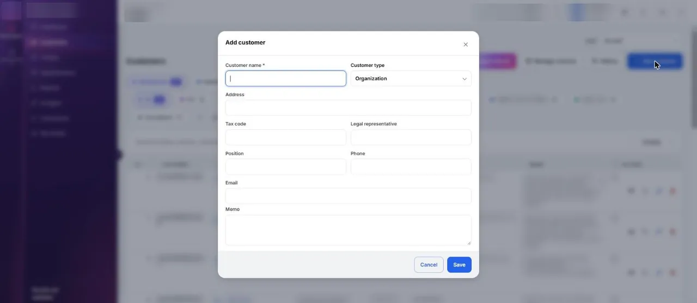
顧客の登録フォーム：社名、税番号、代表者、電話、メール、メモAdd customer form: name, tax code, legal representative, contacts and memoForm thêm khách: tên, mã số thuế, người đại diện, liên hệ và ghi chú
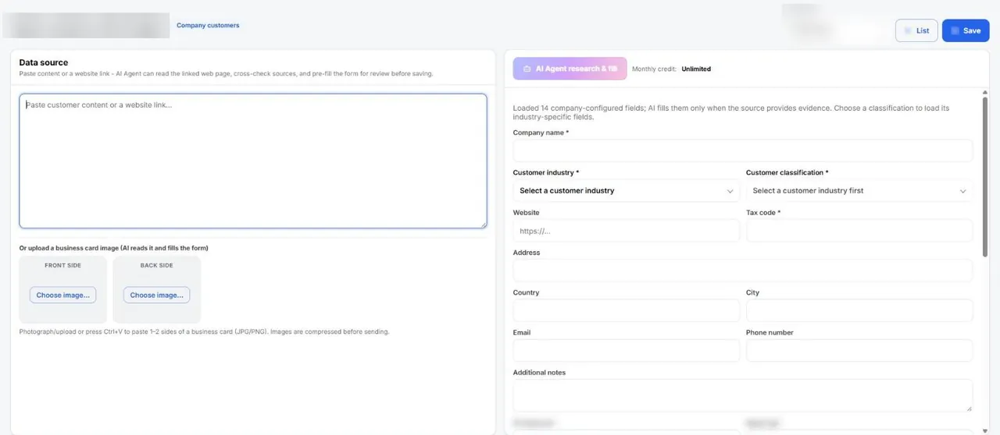
AIで登録：Webサイトのリンクや名刺の画像からフォームを自動入力AI import: paste a website link or a business card photo, AI pre-fills the formNhập bằng AI: dán link website hoặc ảnh danh thiếp, AI điền sẵn form
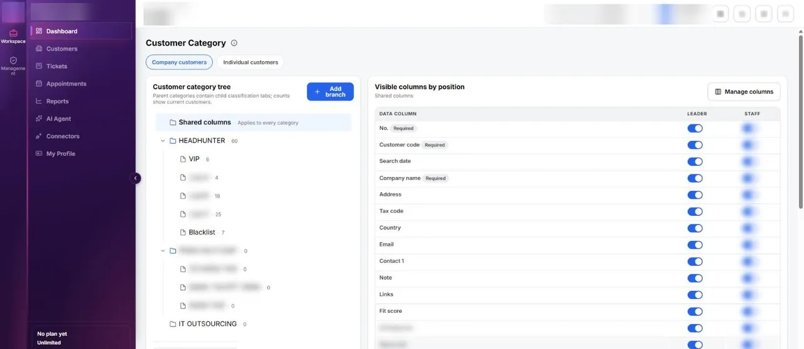
顧客分類のツリーと、役職ごとに見せる列の設定Customer category tree and visible columns by roleCây phân loại khách và cột hiển thị theo vai trò
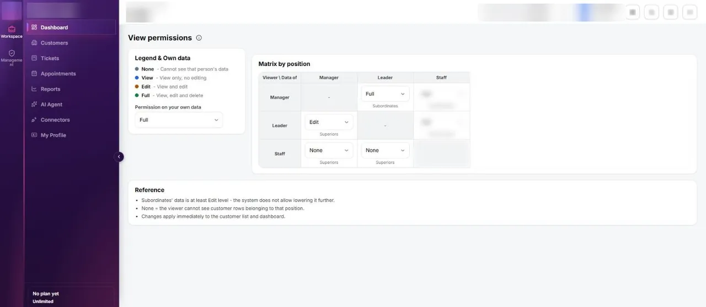
閲覧権限：役職ごとに見られる範囲と編集できる範囲を決めるView permissions: what each position can see and editPhân quyền: mỗi chức vụ được xem, sửa dữ liệu của ai
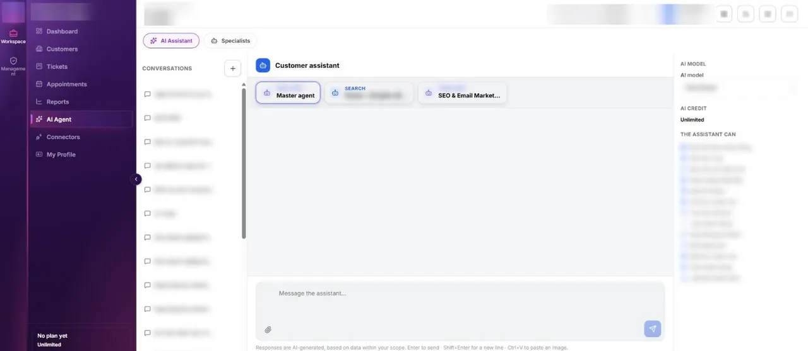
AIアシスタント：担当範囲の顧客データをもとに答えるAI assistant answering from the customer data in each user's scopeTrợ lý AI trả lời dựa trên dữ liệu khách trong phạm vi của từng người
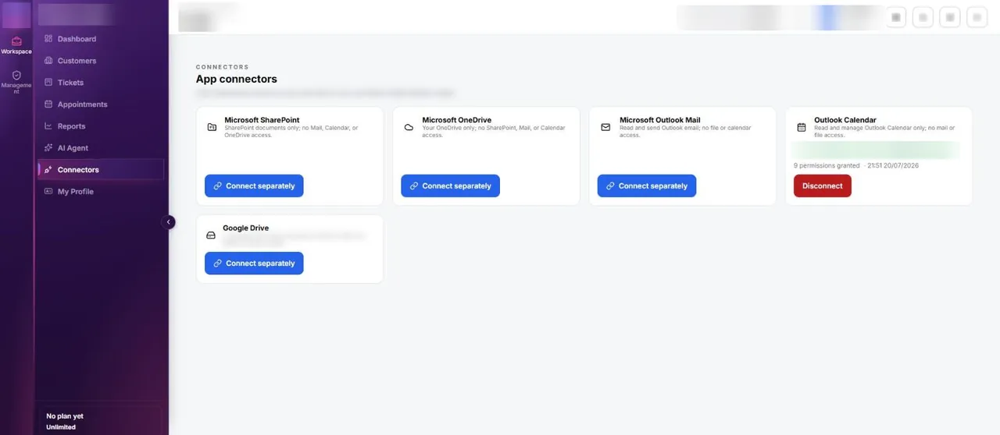
外部サービス連携：メール、カレンダー、ファイル保存先を個別に接続Connectors: email, calendar and file storage linked one by oneKết nối email, lịch và kho tài liệu, từng dịch vụ riêng
JOB DESCRIPTION ANDPAD
ANDPAD Vietnamの 求人情報。ANDPAD Vietnam job description.Thông tin tuyển dụng ANDPAD Vietnam.
募集職種：Customer Success Staff（IT／リーダー候補）。
Position: Customer Success Staff (IT, with a path to Leader).
Vị trí Customer Success Staff (IT, ứng viên tiềm năng cho vị trí Leader).
Địa điểm làm việc: Tầng 3, tòa nhà Đông Nhân, 90 Nguyễn Đình Chiểu, Phường Tân Định, TP. Hồ Chí Minh (chỉ tuyển tại TP.HCM).
1. Giới thiệu doanh nghiệp
ANDPAD Vietnam là một bộ phận quan trọng của ANDPAD Inc. – đơn vị cung cấp dịch vụ quản lý dự án xây dựng trên nền tảng điện toán đám mây số 1 Nhật Bản.
Với hơn 684.000 người dùng, nền tảng ANDPAD đang dẫn đầu trong lĩnh vực chuyển đổi số ngành xây dựng, bao gồm các hoạt động như giao tiếp, lập kế hoạch và quản lý tiến độ, quản lý chất lượng và quản lý đơn đặt hàng.
Là một công ty Vertical SaaS (phần mềm dạng dịch vụ chuyên biệt cho từng ngành), ANDPAD không xem việc ký kết hợp đồng với khách hàng là đích đến, mà coi đó là điểm khởi đầu của hành trình đồng hành và cam kết tối đa hóa thành công của khách hàng.
2. Thông tin vị trí tuyển dụng
Vị trí: Customer Success Staff (IT / Ứng viên tiềm năng cho vị trí Leader) – TUYỂN GẤP
Số lượng: 01
Thời gian dự kiến nhận việc: Trước Tết Nguyên Đán hoặc muộn nhất là sau kỳ nghỉ Tết.
3. Mô tả công việc
Là chuyên gia đồng hành cùng khách hàng sau khi triển khai hệ thống ANDPAD, chịu trách nhiệm đào tạo sử dụng hệ thống, xây dựng tài liệu hướng dẫn và chủ động giải quyết các khó khăn mà khách hàng gặp phải.
Hỗ trợ khách hàng sau khi triển khai hệ thống, hướng dẫn và đào tạo khách hàng sử dụng hệ thống.
Tổ chức các buổi họp follow-up để tìm hiểu những khó khăn, thách thức của khách hàng và đề xuất giải pháp phù hợp, hiệu quả.
Hỗ trợ đội ngũ Sales trong việc demo sản phẩm và thuyết trình, giới thiệu sản phẩm với khách hàng.
Xây dựng, biên soạn và cập nhật tài liệu hướng dẫn sử dụng hoặc các tài liệu liên quan khi cần thiết.
Phối hợp với các phòng ban nội bộ để xử lý nhanh chóng những vấn đề phát sinh từ phía khách hàng.
Duy trì mối quan hệ tốt đẹp với khách hàng và đảm bảo mức độ hài lòng cao.
Thỉnh thoảng đi công tác đến địa điểm của khách hàng để hỗ trợ trực tiếp hoặc tổ chức các buổi hội thảo, hướng dẫn sử dụng.
4. Yêu cầu ứng viên
Ngoại ngữ:
Tiếng Nhật: JLPT N2 (trình độ cao) trở lên.
Tiếng Anh: Giao tiếp tốt cả 4 kỹ năng, đặc biệt là nghe, nói và viết trong công việc.
Học vấn: Tốt nghiệp Đại học chuyên ngành phù hợp.
Yêu cầu bắt buộc (Must-have):
Có kinh nghiệm làm việc trực tiếp với khách hàng doanh nghiệp (B2B), ví dụ: Sales giải pháp B2B, IT Consultant, Customer Success trong lĩnh vực B2B.
Đã từng làm việc tại công ty Nhật Bản hoặc có kinh nghiệm làm việc tại Nhật Bản.
Có sự yêu thích và quan tâm đến lĩnh vực IT/Công nghệ; ưu tiên ứng viên có kinh nghiệm trong ngành IT/Software hoặc từng tham gia các dự án triển khai hệ thống như ERP/CRM.
Có tư duy logic và kỹ năng giải quyết vấn đề tốt.
Kỹ năng giao tiếp tốt, có tinh thần cầu tiến, tư duy lấy khách hàng làm trọng tâm và khả năng chủ động hành động để giải quyết vấn đề.
Tính cách chân thành, có trách nhiệm và tinh thần làm việc nhóm tốt.
Có sự quan tâm đến lĩnh vực tư vấn (Consulting) và công nghệ.
Ưu tiên (Nice-to-have):
Có kinh nghiệm quản lý đội nhóm (Team Leader / Supervisor).
Có kinh nghiệm đàm phán, thương lượng với khách hàng.
CEO3次：オンラインまたは対面Round 3: online or in personVòng 3: online hoặc trực tiếp
02 SKILL MATCH
求人票の要件と、 私の経験を照らし合わせる。The job requirements, matched with my experience.Yêu cầu của JD, đối chiếu với kinh nghiệm của tôi.
Skill match
JDが求める水準と私の水準
Level the JD asks for, and mine
Mức JD cần và mức của tôi
JDが求める水準JD levelMức JD cần
私の水準（自己評価）My level (self-assessed)Mức của tôi (tự đánh giá)
9/9JDの水準以上の能力skills at or above the JD levelnăng lực đạt hoặc vượt mức JD
12/12経験で裏付けられる要件requirements backed by experienceyêu cầu có kinh nghiệm đối chiếu
11日系企業での年数（約）years at Japanese companies (about)năm ở công ty Nhật (khoảng)
Evidence
要件12項目と、裏付けのページ
The 12 requirements and where to see them
12 yêu cầu và trang chứng minh
法人顧客（B2B）の経験B2B client experienceKhách hàng doanh nghiệp (B2B)法人顧客に設備を提案し、5省13社の訪問を計画しました。I proposed equipment to corporate clients and planned visits to 13 companies in 5 provinces.Tôi đề xuất thiết bị cho khách doanh nghiệp, lập kế hoạch thăm 13 công ty ở 5 tỉnh.
日系企業での勤務Work at a Japanese companyLàm việc tại công ty Nhật日系企業で約11年、日本人上司に直接報告してきました。About 11 years at Japanese companies, reporting directly to Japanese managers.Khoảng 11 năm ở công ty Nhật, báo cáo trực tiếp lãnh đạo người Nhật.
IT、システム導入、コンサルへの関心IT, system rollout, consultingQuan tâm IT, triển khai hệ thống, tư vấn顧客の要望から仕様書を書き、UATを経て3つのソフトを納品しました。I wrote specs, ran UAT and delivered 3 software products for clients.Tôi viết đặc tả, chạy UAT và bàn giao 3 phần mềm theo yêu cầu khách hàng.
論理的思考、課題解決Logic and problem solvingTư duy logic, giải quyết vấn đềクレームや納品トラブルを工場、日本本社と連携して解決し、数字で報告しました。I resolved complaints and delivery issues with the factory and Japan HQ, reporting in numbers.Tôi xử lý khiếu nại, sự cố giao hàng cùng nhà máy và trụ sở Nhật, báo cáo bằng số liệu.
コミュニケーション、向上心、顧客志向Communication, growth mindset, customer focusGiao tiếp, cầu tiến, lấy khách hàng làm trọng tâm初回訪問から納品後まで顧客に寄り添い、営業チームの育成と日英のSOP作成も行いました。I stay with clients from the first meeting to after handover, and trained the sales team and wrote SOPs in Japanese and English.Tôi theo sát khách từ lần gặp đầu tới sau bàn giao, đào tạo đội kinh doanh và soạn SOP tiếng Nhật, tiếng Anh.
誠実さ、責任感、チームワークSincerity, responsibility, teamworkChân thành, trách nhiệm, làm việc nhóm報連相を欠かさず、毎日のレビューでメンバーを支えてきました。I keep up hourensou (report, contact, consult) with managers and review and coach the team every day.Tôi giữ hourensou với cấp trên, rà soát và kèm cặp đội mỗi ngày.
日本語N2以上、英語4技能Japanese N2+, English in 4 skillsTiếng Nhật N2+, tiếng Anh 4 kỹ năngJLPT N2。ASEAN会議で英語の発表をし、欧州企業のCEOと英語で交渉しました。JLPT N2; I presented in English at an ASEAN meeting and negotiated with a European CEO.JLPT N2; tôi thuyết trình tiếng Anh ở hội nghị ASEAN và đàm phán với CEO châu Âu.
関連分野の大学卒業Relevant university degreeTốt nghiệp đại học chuyên ngành phù hợpホーチミン市経済大学で経営管理を学び、大学院（財務、管理）を修了しました。I studied business administration and finished a master's course in finance and management at UEH.Cử nhân Quản trị kinh doanh, cao học Tài chính, Quản lý, Đại học Kinh tế TP.HCM.
チーム管理Team managementQuản lý đội nhóm支店で5～6名を率い、人事チームを1名から5名に広げました。I managed 5 to 6 people at a branch and grew the HR team from 1 to 5.Tôi quản lý 5 đến 6 người ở chi nhánh, mở rộng đội Nhân sự từ 1 lên 5 người.
顧客との交渉Negotiating with clientsĐàm phán với khách hàng法人顧客との交渉とクレーム対応を、日本語でも行ってきました。I negotiated and handled complaints with corporate clients, also in Japanese.Tôi đàm phán và xử lý khiếu nại với khách doanh nghiệp, cả bằng tiếng Nhật.
About 11 years of B2B sales, IT bridging and team management at Japanese companies let me start as Customer Success Staff right away and grow into the Leader role.
Khoảng 11 năm làm kinh doanh B2B, cầu nối IT và quản lý đội ngũ ở công ty Nhật giúp tôi làm Customer Success Staff được ngay và sẵn sàng lên Leader.
COMPANY ANDPAD
建設業界のための クラウド施工管理。Cloud project management for construction.Quản lý thi công trên đám mây cho ngành xây dựng.
Vertical SaaS ／ Construction DX ／ Japan and Vietnam
ANDPAD Inc. provides ANDPAD, a cloud-based construction project management service. It keeps site photos, drawings, schedules and orders in one place.[1]
ANDPAD Inc. cung cấp ANDPAD, dịch vụ quản lý dự án xây dựng trên đám mây. Nền tảng gom ảnh hiện trường, bản vẽ, tiến độ và đơn đặt hàng vào một chỗ trên đám mây.[1]
本社はホーチミン市（90 Nguyen Dinh Chieu）。ハノイ事務所は2025年5月に開設し、2026年4月にTaisei Square Hanoiへ移転。[7,8]Head office in Ho Chi Minh City (90 Nguyen Dinh Chieu). The Hanoi office opened in May 2025 and moved to Taisei Square Hanoi in April 2026.[7,8]Trụ sở tại TP.HCM (90 Nguyễn Đình Chiểu). Văn phòng Hà Nội mở tháng 5/2025, dời về Taisei Square Hanoi tháng 4/2026.[7,8]
開発部門：ANDPADを開発する拠点（Go、Ruby on Rails、React、Vue、Kotlin、Swift、AWS）。[9]Development Division: builds the ANDPAD service (Go, Ruby on Rails, React, Vue, Kotlin, Swift, AWS).[9]Khối Phát triển: phát triển dịch vụ ANDPAD (Go, Ruby on Rails, React, Vue, Kotlin, Swift, AWS).[9]
ビジネス部門：導入後の研修とサポートを担うCustomer Successの職種があり、今回の募集はこの職種です。[9,10]Business Division: home of this Customer Success role, which trains and supports clients after go-live.[9,10]Khối Kinh doanh: nơi có vị trí Customer Success đang tuyển, lo đào tạo và hỗ trợ khách sau khi đưa vào dùng.[9,10]
2025年2月に英語版、6月にベトナム語版（施工管理、チャット、図面）を公開。[11,12]English version in February 2025, Vietnamese in June 2025 (Construction Management, Chat, Drawings).[11,12]Ra bản tiếng Anh tháng 2/2025, bản tiếng Việt tháng 6/2025 (Quản lý thi công, Chat, Bản vẽ).[11,12]
参考文献ReferencesNguồn tham khảo（2026年11月25日に確認） (checked 25 Nov 2026) (tra cứu 25/11/2026)
ANDPAD 製品サイト（利用社数、ユーザー数、製品一覧）ANDPAD product site (companies, users, product list)Trang ANDPAD (số công ty, người dùng, sản phẩm)andpad.jp
PR TIMES：ナレッジAI公開の発表（会社概要に設立2012年9月）PR TIMES: Knowledge AI release, with company profile (founded Sep 2012)PR TIMES: thông cáo Knowledge AI, kèm hồ sơ công ty (thành lập 9/2012)prtimes.jp/…00193.000018154.html
ANDPAD 会社概要（所在地、社員数）ANDPAD company profile (address, headcount)Hồ sơ công ty ANDPAD (địa chỉ, số nhân viên)andpad.co.jp/company
ANDPAD 求人票（2025年にARR100億円突破と記載）ANDPAD job post (states ARR passed ¥10 billion in 2025)Tin tuyển dụng ANDPAD (ghi ARR vượt 10 tỷ yên năm 2025)hrmos.co/…andpad/jobs/biz0000217
THE BRIDGE：ANDPADのAI戦略とARRの記事（2026年4月）THE BRIDGE: ANDPAD AI strategy and ARR (Apr 2026)THE BRIDGE: chiến lược AI và ARR của ANDPAD (4/2026)thebridge.jp/…onstruction-hot100
ANDPAD ミッションとバリューANDPAD mission and valuesSứ mệnh và giá trị của ANDPADandpad.co.jp/mission
Vietnam News：ハノイ事務所の移転（2026年4月、ホーチミン本社の住所も記載）Vietnam News: Hanoi office relocation (Apr 2026, with HCMC head office address)Vietnam News: dời văn phòng Hà Nội (4/2026, kèm địa chỉ trụ sở TP.HCM)vietnamnews.vn/…m-relocated.html
ANDPAD ニュース：ハノイ事務所の移転と拡大（2026年4月8日）ANDPAD news: Hanoi office moved and expanded (8 Apr 2026)Tin ANDPAD: dời và mở rộng văn phòng Hà Nội (8/4/2026)andpad.jp/news/20260408
ANDPAD Vietnam 採用ページ（開発部門とビジネス部門の求人）ANDPAD Vietnam careers (Development and Business division jobs)Trang tuyển dụng ANDPAD Vietnam (việc khối Phát triển và Kinh doanh)careers.andpad.vn/jobs
ANDPAD ニュース：英語版アプリ、多言語対応の第一弾（2025年2月26日）ANDPAD news: English app, first step of multilingual support (26 Feb 2025)Tin ANDPAD: app tiếng Anh, bước đầu đa ngôn ngữ (26/2/2025)andpad.jp/news/20250226
ANDPAD ニュース：ベトナム語版の提供開始（2025年6月26日）ANDPAD news: Vietnamese version released (26 Jun 2025)Tin ANDPAD: phát hành bản tiếng Việt (26/6/2025)andpad.jp/news/20250626
01 PRODUCTS
現場から経営までを 一つのクラウドで。From the site to management, in one cloud.Từ công trường tới quản trị, trên một nền tảng.
Site ／ Documents ／ Money ／ Owners ／ AI
20を超える製品を、現場、書類、営業と経理、お施主様と経営、連携とAIの5分野に分類。[1]
More than 20 products in five areas: site work, documents, sales and back office, owners and management, and integrations and AI.[1]
Hơn 20 sản phẩm, chia thành 5 nhóm: hiện trường, hồ sơ, kinh doanh và kế toán, chủ nhà và quản trị, kết nối và AI.[1]
SITE
現場管理
Site work
Quản lý hiện trường
VIベトナム語に対応（2025年6月）[2]Available in Vietnamese (June 2025)[2]Đã có bản tiếng Việt (6/2025)[2]
ANDPAD 施工管理Construction Management情報を集約、共有し施工管理を効率化[3]Schedules, photos, drawings and reports, shared per project[3]Gom tiến độ, ảnh, bản vẽ, báo cáo theo từng công trình[3]VI
ANDPAD チャットChat現場関係者へ素早く、漏れなく一括連絡[4]Reach everyone on the project at once, nothing missed[4]Báo cùng lúc tới mọi người trong công trình, không sót[4]VI
ANDPAD 図面Drawings依頼事項と工事写真を図面上で一元管理[5]Notes and photos pinned on drawings[5]Ghi chỉ thị và ảnh ngay trên bản vẽ[5]VI
ANDPAD 黒板Blackboard電子黒板付き写真を簡単、迅速に[6]Site photos with a digital blackboard[6]Chụp ảnh thi công kèm bảng đen điện tử[6]
ANDPAD 検査Inspectionペーパーレス化で抜け漏れを防止[7]Paperless inspections, nothing missed[7]Kiểm tra không giấy, không sót hạng mục[7]
ANDPAD 遠隔臨場Remote Inspection現場カメラとビデオ通話で遠隔指示[8]Check the site and give instructions remotely[8]Xem hiện trường và chỉ đạo từ xa qua camera[8]
ANDPAD 入退場管理Site Entry安全衛生と入退場をCCUS連携で管理[9]Entry, exit and safety records[9]Quản lý ra vào và hồ sơ an toàn[9]
ANDPAD 3Dスキャン3D Scan現調情報を3Dで保存、共有[10]Share 3D scans of the site[10]Chia sẻ dữ liệu quét 3D hiện trường[10]
DOCUMENTS
工程と書類
Schedules and documents
Tiến độ và hồ sơ
ANDPAD ボードBoard現場カレンダーで手配と情報共有[11]Site calendar for crew booking and updates[11]Lịch công trường để phân công thợ, chia sẻ thông tin[11]
ANDPAD レポートReportいつもの帳票や報告書をそのまま電子化[12]Existing forms, digitised as they are[12]Số hoá biểu mẫu, giữ nguyên bố cục[12]
ANDPAD 資料承認Document Approval資料の申請と承認を漏れなく[13]Submit and approve documents[13]Nộp và duyệt hồ sơ[13]
ANDPAD 電子納品e-Delivery黒板作成から写真整理、データ出力まで[14]Sort photos into e-delivery data[14]Sắp xếp ảnh thành dữ liệu nộp hồ sơ điện tử[14]
ANDPAD BIMBIMクラウドのBIMビュワー[15]Cloud BIM viewer[15]Xem mô hình BIM trên đám mây[15]
MONEY
営業と経理
Sales and back office
Kinh doanh và kế toán
ANDPAD 引合粗利管理Leads and Gross Profit顧客管理から粗利、原価まで一元管理[16]From lead to gross profit in one view[16]Theo dõi từ cơ hội bán tới lãi gộp[16]
ANDPAD 受発注Ordering受発注業務を丸ごとペーパーレス化[17]Paperless orders with subcontractors[17]Số hoá đặt hàng giữa tổng thầu và thầu phụ[17]
ANDPAD 請求管理Billing建設業界に特化した請求管理システム[18]Billing built for construction[18]Quản lý hoá đơn cho ngành xây dựng[18]
ANDPAD 歩掛管理Labour Productivity日報から労務費や経費を原価集計[19]Labour and expense costs from daily reports[19]Tổng hợp công và chi phí từ báo cáo ngày[19]
ANDPAD 早受取Early Pay売掛金を早期に資金化[20]Get paid for receivables early[20]Nhận tiền công nợ sớm[20]
OWNERS
お施主様と経営
Owners and management
Chủ nhà và quản trị
ANDPAD おうちノートOuchi Noteお施主様との連絡を一元管理[21]App for talking with homeowners[21]Trao đổi với chủ nhà qua app[21]
ANDPAD AnalyticsAnalytics経営状態の「今」が見える[22]Real-time business dashboard[22]Dashboard số liệu kinh doanh theo thời gian thực[22]
ANDPAD BMBuilding Maintenance建物、設備の保全クラウド[23]Cloud upkeep for buildings and equipment[23]Bảo trì toà nhà và thiết bị[23]
CONNECT ／ AI
連携とAI
Integrations and AI
Kết nối và AI
ANDPAD API連携API自社システムとANDPADをつなぐ[24]Connect in-house systems to ANDPAD[24]Kết nối hệ thống nội bộ với ANDPAD[24]
ANDPAD アプリマーケットApp Market外部サービスとの連携[25]Partner integrations marketplace[25]Chợ ứng dụng tích hợp của đối tác[25]
ANDPAD ナレッジAIKnowledge AI社内の知識から答えるAI[26]AI that answers from company know-how[26]AI trả lời từ kho tri thức công ty[26]
ANDPAD AI-BPOサービスAI-BPOAIと専門スタッフが積算などを代行[27]AI plus experts handle work like estimating[27]AI cùng chuyên viên làm thay việc như dự toán[27]
参考文献ReferencesNguồn tham khảo（2026年11月25日に確認） (checked 25 Nov 2026) (tra cứu 25/11/2026)
ANDPAD 製品サイト（利用社数、ユーザー数、製品一覧）ANDPAD product site (companies, users, product list)Trang ANDPAD (số công ty, người dùng, sản phẩm)andpad.jp
ANDPAD ニュース：ベトナム語版の提供開始（2025年6月26日）ANDPAD news: Vietnamese version released (26 Jun 2025)Tin ANDPAD: phát hành bản tiếng Việt (26/6/2025)andpad.jp/news/20250626
ANDPAD 早受取：請求書を出すと売掛金を早く受け取れるサービスANDPAD Early Pay: get paid early for outstanding invoicesANDPAD Early Pay: nhận sớm tiền công nợ từ hoá đơnpage.andpad.jp/earlypay
ANDPAD 製品一覧（各製品の公式画像とページ）ANDPAD product list (official image and page for each product)Danh sách sản phẩm ANDPAD (ảnh chính thức và trang của từng sản phẩm)andpad.jp/products
ANDPAD ニュース：ナレッジAIの提供開始（2026年5月8日）ANDPAD news: Knowledge AI launched (8 May 2026)Tin ANDPAD: ra mắt Knowledge AI (8/5/2026)andpad.jp/news/20260508
ANDPAD ニュース：AI-BPOの開始、電気工事の積算から（2026年10月5日）ANDPAD news: AI-BPO starts with electrical estimating (5 Oct 2026)Tin ANDPAD: ra mắt AI-BPO, bắt đầu với dự toán thầu điện (5/10/2026)andpad.jp/news/20261005
IMG PRODUCT VISUALS
実際の画面で 製品を見る。See each product on its real screens.Xem từng sản phẩm qua màn hình thật.
ANDPAD 引合粗利管理Leads and Gross ProfitLeads and Gross ProfitCơ hội và lãi gộp[15]ANDPAD 受発注OrderingOrderingĐặt hàng[16]ANDPAD 請求管理BillingBillingQuản lý hoá đơn[17]ANDPAD 歩掛管理Labour ProductivityLabour ProductivityQuản lý định mức nhân công[18]ANDPAD おうちノートOuchi NoteOuchi NoteApp chủ nhà[19]ANDPAD AnalyticsAnalyticsAnalyticsAnalytics[20]ANDPAD BMBuilding MaintenanceBuilding MaintenanceBảo trì toà nhà[21]ANDPAD API連携APIAPIKết nối API[22]ANDPAD アプリマーケットApp MarketApp MarketChợ ứng dụng[1]
参考文献ReferencesNguồn tham khảo（2026年11月25日に確認） (checked 25 Nov 2026) (tra cứu 25/11/2026)
ANDPAD 製品一覧（各製品の公式画像とページ）ANDPAD product list (official image and page for each product)Danh sách sản phẩm ANDPAD (ảnh chính thức và trang của từng sản phẩm)andpad.jp/products
There is no Vietnam-only product: the same ANDPAD now speaks Vietnamese and English. ANDPAD Vietnam handles development, the pilot and onboarding.[1,2]
ANDPAD không có sản phẩm riêng cho Việt Nam: vẫn là ANDPAD, có thêm tiếng Việt và tiếng Anh. ANDPAD Vietnam lo phát triển, thí điểm và triển khai.[1,2]
PRODUCTS
ベトナムで使える製品
Products available in Vietnam
Sản phẩm dùng được tại Việt Nam
ベトナム語版：施工管理、チャット、図面Vietnamese: Construction Management, Chat, DrawingsBản tiếng Việt: Quản lý thi công, Chat, Bản vẽアプリの言語をベトナム語に切り替えられます。日本国内のベトナム語話者とベトナムの現場向けで、既存ユーザーは無料です。[2,3]The apps can switch to Vietnamese, for Vietnamese speakers in Japan and for sites in Vietnam. Free for existing users.[2,3]App chuyển được sang tiếng Việt, dành cho người nói tiếng Việt tại Nhật và công trường ở Việt Nam. Miễn phí cho người đang dùng.[2,3]andpad.jp/news/20250626英語版アプリ（施工管理、チャット、図面）English app (Construction Management, Chat, Drawings)App tiếng Anh (Quản lý thi công, Chat, Bản vẽ)多言語対応の第一弾です。外国籍の職人と海外の現場で使えるようになりました。[4]The first step of multilingual support, for foreign workers and overseas sites.[4]Bước đầu của hỗ trợ đa ngôn ngữ, cho thợ nước ngoài và công trường ở nước ngoài.[4]andpad.jp/news/20250226ブラウザ版の英語化とタイムゾーン設定English web version and time-zone settingBản web tiếng Anh và cài đặt múi giờ施工管理、チャット、図面をPCのブラウザでも英語で使え、現地時間で工程を管理できます。[5]Construction Management, Chat and Drawings in English in the browser, with schedules in local time.[5]Quản lý thi công, Chat, Bản vẽ dùng được bằng tiếng Anh trên trình duyệt, tiến độ theo giờ địa phương.[5]andpad.jp/news/20251014
SERVICES
ベトナムでの事業とサービス
Work and services in Vietnam
Hoạt động và dịch vụ tại Việt Nam
JETROの事業に採択Selected for a JETRO programmeĐược JETRO chọn「日ASEANにおけるアジアDX促進事業」に採択。連携先は五洋建設ベトナム（PENTA-OCEAN CONSTRUCTION VIETNAM）です。[6]Chosen for the Japan-ASEAN Asia Digital Transformation Promotion Program, with PENTA-OCEAN CONSTRUCTION VIETNAM as partner.[6]Được chọn vào chương trình thúc đẩy DX Nhật Bản và ASEAN của JETRO, đối tác là PENTA-OCEAN CONSTRUCTION VIETNAM.[6]andpad.co.jp/news/4260ベトナムの現場で実証（2024年2月〜2025年5月）Pilot on Vietnamese sites (Feb 2024 to May 2025)Thí điểm tại công trường Việt Nam (2/2024 tới 5/2025)写真登録、電子黒板、帳票出力を使い、作業時間は最大50％減、紙の記録は不要に。独自の帳票レイアウトにも対応しました。[7,8]Photo registration, digital blackboard and form output cut work time by up to 50% and ended paper records. Custom form layouts are now supported.[7,8]Dùng đăng ảnh, bảng đen điện tử, xuất biểu mẫu: giảm tới 50% giờ làm, bỏ ghi chép giấy. Hỗ trợ thêm mẫu biểu theo bố cục riêng.[7,8]andpad.jp/news/20251006導入とサポート（Customer Success）Onboarding and support (Customer Success)Triển khai và hỗ trợ (Customer Success)ベトナム人スタッフを採用、育成し、初期導入から運用サポートまでをベトナム現地で担える体制を構築しました。[7]Vietnamese staff were hired and trained so initial onboarding through operational support can be handled locally in Vietnam.[7]Tuyển và đào tạo nhân sự người Việt để đảm nhận từ triển khai ban đầu tới hỗ trợ vận hành ngay tại Việt Nam.[7]andpad.jp/news/20251006HCMC開発拠点（ホーチミン）Development centre (Ho Chi Minh City)Trung tâm phát triển (TP.HCM)ANDPADの開発を行うエンジニアチーム（Go、Ruby on Rails、React、Vue、Kotlin、Swift、AWS）。オフィスは90 Nguyen Dinh Chieuです。[9,10]Engineering teams that build ANDPAD (Go, Ruby on Rails, React, Vue, Kotlin, Swift, AWS). Office at 90 Nguyen Dinh Chieu.[9,10]Các đội kỹ sư phát triển ANDPAD (Go, Ruby on Rails, React, Vue, Kotlin, Swift, AWS). Trụ sở 90 Nguyễn Đình Chiểu, TP.HCM.[9,10]careers.andpad.vnハノイ事務所Hanoi officeVăn phòng Hà Nội2025年5月に開設し、2026年4月にTaisei Square Hanoiへ移転。東南アジアの建設DXに向けて体制を広げています。[11,10]Opened May 2025, moved to Taisei Square Hanoi in April 2026 to grow construction DX work in Southeast Asia.[11,10]Mở tháng 5/2025, dời về Taisei Square Hanoi tháng 4/2026 để mở rộng việc DX xây dựng ở Đông Nam Á.[11,10]andpad.jp/news/20260408
参考文献ReferencesNguồn tham khảo（2026年11月25日に確認） (checked 25 Nov 2026) (tra cứu 25/11/2026)
ANDPAD ニュース：4言語を追加し海外の言語は計6言語に（2025年12月16日）ANDPAD news: 4 more languages, 6 foreign languages in total (16 Dec 2025)Tin ANDPAD: thêm 4 ngôn ngữ, tổng 6 ngoại ngữ (16/12/2025)andpad.jp/news/20251216
ANDPAD ニュース：ベトナム語版の提供開始（2025年6月26日）ANDPAD news: Vietnamese version released (26 Jun 2025)Tin ANDPAD: phát hành bản tiếng Việt (26/6/2025)andpad.jp/news/20250626
Vietnam News：ベトナム語版の公開（2025年6月、英語版は2月）Vietnam News: Vietnamese version launched (Jun 2025; English in Feb)Vietnam News: ra mắt bản tiếng Việt (6/2025; bản tiếng Anh 2/2025)vietnamnews.vn/…ent-service.html
ANDPAD ニュース：英語版アプリ、多言語対応の第一弾（2025年2月26日）ANDPAD news: English app, first step of multilingual support (26 Feb 2025)Tin ANDPAD: app tiếng Anh, bước đầu đa ngôn ngữ (26/2/2025)andpad.jp/news/20250226
ANDPAD ニュース：ブラウザ版の英語化とタイムゾーン設定（2025年10月14日）ANDPAD news: English browser version and time zones (14 Oct 2025)Tin ANDPAD: bản web tiếng Anh và múi giờ (14/10/2025)andpad.jp/news/20251014
ANDPAD ニュース：JETRO「日ASEANにおけるアジアDX促進事業」に採択（2023年12月）ANDPAD news: selected for JETRO Japan-ASEAN Asia DX programme (Dec 2023)Tin ANDPAD: được chọn vào chương trình DX Nhật Bản và ASEAN của JETRO (12/2023)andpad.co.jp/news/4260
ANDPAD ニュース：ベトナム実証の完了と結果（2025年10月6日）ANDPAD news: Vietnam pilot completed, results (6 Oct 2025)Tin ANDPAD: hoàn tất thí điểm tại Việt Nam và kết quả (6/10/2025)andpad.jp/news/20251006
Vietnam News：JETRO事業のベトナム実証の完了（2025年10月）Vietnam News: JETRO Vietnam pilot completed (Oct 2025)Vietnam News: hoàn tất thí điểm JETRO tại Việt Nam (10/2025)vietnamnews.vn/…ion-program.html
ANDPAD Vietnam 採用サイト（ホーチミンの開発チーム）ANDPAD Vietnam careers site (HCMC engineering teams)Trang tuyển dụng ANDPAD Vietnam (đội kỹ sư TP.HCM)careers.andpad.vn
Vietnam News：ハノイ事務所の移転（2026年4月、ホーチミン本社の住所も記載）Vietnam News: Hanoi office relocation (Apr 2026, with HCMC head office address)Vietnam News: dời văn phòng Hà Nội (4/2026, kèm địa chỉ trụ sở TP.HCM)vietnamnews.vn/…m-relocated.html
ANDPAD ニュース：ハノイ事務所の移転と拡大（2026年4月8日）ANDPAD news: Hanoi office moved and expanded (8 Apr 2026)Tin ANDPAD: dời và mở rộng văn phòng Hà Nội (8/4/2026)andpad.jp/news/20260408
GUIDE HOW ANDPAD WORKS
一つの工事を ANDPADで回す。One project, run on ANDPAD.Một công trình chạy trên ANDPAD.
Sales ／ Planning ／ Building ／ Inspection ／ Billing
Which product helps at each of the five stages of a project, from sales to after handover. The next three slides explain what each one does, its main functions and what it saves.[1]
Sản phẩm nào dùng ở bước nào trong 5 bước của một công trình, từ bán hàng tới sau bàn giao. Ba slide tiếp theo giải thích từng sản phẩm dùng để làm gì, chức năng chính và hữu ích ra sao.[1]
1
営業と契約
Sales and contract
Bán hàng, ký hợp đồng
引合から見積、契約まで。お施主様との連絡もここから。
From inquiry to estimate and contract; owner contact starts here.
Từ hỏi giá tới báo giá, ký hợp đồng; bắt đầu trao đổi với chủ nhà.
引合粗利管理Analyticsおうちノート
2
着工準備
Planning
Chuẩn bị khởi công
図面、工程、職人の手配、発注をそろえる。
Line up drawings, schedules, crews and orders.
Chuẩn bị bản vẽ, lịch, phân công thợ, đặt hàng.
図面BIM3Dスキャンボード受発注
3
施工
Building
Thi công
写真、連絡、安全、日報を現場で記録。
Photos, messages, safety and daily reports, recorded on site.
Ghi ảnh, trao đổi, an toàn, báo cáo ngày ngay tại công trường.
施工管理チャット黒板入退場管理歩掛管理
4
検査と書類
Inspection and documents
Kiểm tra, hồ sơ
検査、是正、承認、納品データ。
Inspections, fixes, approvals and delivery data.
Kiểm tra, sửa lỗi, phê duyệt, dữ liệu nộp.
検査遠隔臨場レポート資料承認電子納品
5
請求と引き渡し後
Billing and after handover
Thanh toán, sau bàn giao
請求の査定、自社システムとの連携、建物や設備の保全。
Invoice assessment, links to in-house systems, building and equipment upkeep.
Thẩm định hoá đơn, nối hệ thống nội bộ, bảo trì toà nhà và thiết bị.
請求管理API連携BM
START
ベトナム語版があるのは施工管理、チャット、図面（2025年6月）。ベトナムの現場はこの3つから始めやすい。[2]Construction Management, Chat and Drawings have a Vietnamese version (June 2025), an easy starting set for sites in Vietnam.[2]Quản lý thi công, Chat, Bản vẽ đã có bản tiếng Việt (6/2025): bộ dễ bắt đầu nhất cho công trường ở Việt Nam.[2]
導入は4つのステップで進み、サポート窓口が支援します。[3]Onboarding runs in four steps, backed by a support desk.[3]Triển khai theo 4 bước, có bộ phận hỗ trợ đi cùng.[3]
HOW TO READ
次の3枚のカードは、どれも同じ順で読めます。
Every card on the next three slides reads in the same order.
Mỗi thẻ ở ba slide sau đọc theo cùng một thứ tự.
用途UseDùng để効果ResultHiệu quả利用者UsersAi dùng機能主な機能Main functionsChức năng chính
「事例」の数字は、各製品ページに載っている導入企業の事例です。
Figures marked "Case" come from customer stories on each product page.
Số liệu ghi "Case" lấy từ bài case khách hàng đăng trên trang của từng sản phẩm.
RESULTS ／ CUSTOMER CASES
80％80%80%検査後のダメ帳作成の時間を削減（白石建設）[4]less time writing punch lists after inspection (白石建設)[4]giảm thời gian lập danh sách lỗi sau kiểm tra (白石建設)[4]
約50％~50%~50%移動と残業の時間を削減（西鉄建設）[5]less travel and overtime (西鉄建設)[5]giảm thời gian đi lại và làm thêm (西鉄建設)[5]
月20時間20 h/month20 giờ/tháng現場への移動時間を削減（しばた工芸）[6]less travel to sites (しばた工芸)[6]bớt thời gian đi lại tới công trường (しばた工芸)[6]
約5％~5%~5%利益率が改善（建築工房小越）[7]better profit margin (建築工房小越)[7]biên lợi nhuận tăng (建築工房小越)[7]
参考文献ReferencesNguồn tham khảo（2026年11月25日に確認） (checked 25 Nov 2026) (tra cứu 25/11/2026)
ANDPAD 製品サイト（利用社数、ユーザー数、製品一覧）ANDPAD product site (companies, users, product list)Trang ANDPAD (số công ty, người dùng, sản phẩm)andpad.jp
ANDPAD ニュース：ベトナム語版の提供開始（2025年6月26日）ANDPAD news: Vietnamese version released (26 Jun 2025)Tin ANDPAD: phát hành bản tiếng Việt (26/6/2025)andpad.jp/news/20250626
ANDPAD サポート（導入4ステップ、窓口）ANDPAD support (4 steps, contact desk)Hỗ trợ ANDPAD (4 bước, kênh liên hệ)andpad.jp/help/support
Photos, messages, drawings and inspections are recorded on site and shared at once with the office and subcontractors.[1]
Ảnh, trao đổi, bản vẽ, kiểm tra được ghi ngay tại công trường và chia sẻ tức thì với văn phòng, thầu phụ.[1]
ANDPAD 施工管理Construction ManagementConstruction ManagementQuản lý thi công
用途案件ごとに工程、写真、図面、報告をクラウドで共有します。[2]
UseKeeps schedules, photos, drawings and reports for each project in the cloud.[2]
Dùng đểGom tiến độ, ảnh, bản vẽ, báo cáo của từng công trình lên đám mây.[2]
工程表変更すると担当者に自動で通知Changes notify the people assignedĐổi lịch là người phụ trách nhận thông báo
写真スマホで撮影して写真台帳にShoot on a phone, build the photo ledgerChụp bằng điện thoại, ra sổ ảnh
多言語対応日本語から英語、ベトナム語など6言語に切り替えSwitches from Japanese to six languages, incl. English and VietnameseChuyển từ tiếng Nhật sang 6 ngôn ngữ, có tiếng Anh, tiếng Việt
効果事例：松田組は写真整理の時間が半減[2]
ResultCase 松田組: photo-sorting time cut in half[2]
Hiệu quảCase 松田組: thời gian sắp xếp ảnh giảm một nửa[2]
利用者営業、現場監督、職人
UsersSales, site supervisors, crews
Ai dùngSales, giám sát, thợ
ANDPAD チャットChatChatChat
用途社内外の関係者が案件ごとに話せるチャット。「言った言わない」を防ぎます。[3]
UseProject chat for in-house and outside members, so no instruction gets lost.[3]
Dùng đểChat theo công trình cho cả người trong và ngoài công ty, tránh cảnh "đã nói hay chưa".[3]
案件チャット案件ごとにルームを自動で作成A room is created for each projectTự tạo phòng chat cho mỗi công trình
お知らせ、確認相手を指定してOK確認、既読も分かるTag people, get an OK, see who has read itGửi cho đúng người, nhận xác nhận OK, thấy ai đã đọc
報告連動日報や完了報告がチャットに届くDaily and completion reports post to the chatBáo cáo ngày, báo cáo hoàn thành tự vào chat
効果事例：しばた工芸は現場への移動が月20時間減、残業は約15％減[3]
ResultCase しばた工芸: 20 hours less site travel a month, about 15% less overtime[3]
Hiệu quảCase しばた工芸: bớt 20 giờ đi lại mỗi tháng, giờ làm thêm giảm khoảng 15%[3]
利用者営業、監督、職人、協力会社
UsersSales, supervisors, crews, subcontractors
Ai dùngSales, giám sát, thợ, thầu phụ
ANDPAD 図面DrawingsDrawingsBản vẽ
用途最新の図面を一か所にまとめ、指示と写真を図面の上で管理します。[4]
UseThe latest drawings in one place, with instructions and photos on the drawing itself.[4]
Dùng đểLuôn có bản vẽ mới nhất ở một chỗ, ghi chỉ thị và gắn ảnh ngay trên bản vẽ.[4]
ペン、スタンプ書き込みと7種類のスタンプPen markup and seven stamp typesVẽ ghi chú và 7 loại dấu
ピン写真とつなぎ、撮った場所が一目で分かるPins link photos, so shot spots are clearGhim gắn ảnh, nhìn là biết chỗ nào đã chụp
仕上検査検査結果を最短1タップで入力Enter finish-inspection results in as little as one tapNhập kết quả kiểm tra hoàn thiện chỉ từ 1 chạm
効果事例：白石建設は検査後のダメ帳作成の時間を80％削減[4]
ResultCase 白石建設: punch-list writing after inspection cut by 80%[4]
Hiệu quảCase 白石建設: giảm 80% thời gian lập danh sách lỗi sau kiểm tra[4]
利用者現場、協力会社、検査担当
UsersSite staff, subcontractors, inspectors
Ai dùngNgười ở công trường, thầu phụ, người kiểm tra
ANDPAD 黒板BlackboardBlackboardBảng đen điện tử
用途電子黒板で工事写真を撮り、写真台帳まで作ります。改ざん検知つきです。[5]
UseShoot site photos with a digital blackboard, right through to the photo ledger, with tamper detection.[5]
Dùng đểChụp ảnh thi công kèm bảng đen điện tử tới khi ra sổ ảnh, có phát hiện chỉnh sửa ảnh.[5]
黒板一括作成CSVで数千種類の黒板を一度に作成Thousands of boards at once from a CSV fileTạo hàng nghìn bảng một lần từ file CSV
オフラインモード電波のない現場でも撮影できるShoot even where there is no signalChụp được cả nơi không có sóng
写真台帳作成黒板ごとに自動で整理、ワンクリックで台帳Auto-sorted by board, one-click ledgerẢnh tự xếp theo bảng, 1 cú bấm ra sổ ảnh
効果事例：三浦組は作業時間が半減[5]
ResultCase 三浦組: work time cut in half[5]
Hiệu quảCase 三浦組: thời gian làm việc giảm một nửa[5]
利用者現場の担当、写真台帳を作る事務
UsersSite staff, office staff who build the ledger
Ai dùngNgười ở công trường, văn phòng làm sổ ảnh
ANDPAD 検査InspectionInspectionKiểm tra
用途紙を使わずに検査し、結果をすぐ共有して漏れを防ぎます。[6]
UsePaperless inspections; results are shared at once so nothing is missed.[6]
Dùng đểKiểm tra không giấy, chia sẻ kết quả ngay, không sót hạng mục.[6]
検査報告書テンプレートに写真とコメントReport templates with photos and commentsMẫu biên bản có ảnh, nhận xét
是正指摘管理担当者に是正を依頼し、承認まで追うSend fixes to the assignee and track them to approvalGiao việc sửa lỗi cho người phụ trách, theo dõi tới lúc được duyệt
出力ワンクリックでPDFにしてお施主様へOne-click PDF for the client1 cú bấm ra PDF gửi chủ nhà
効果事例：西鉄建設は移動と残業の時間を約50％削減[6]
ResultCase 西鉄建設: travel and overtime cut by about 50%[6]
Hiệu quảCase 西鉄建設: giảm khoảng 50% thời gian đi lại và làm thêm[6]
利用者検査担当、現場監督、職人
UsersInspectors, supervisors, crews
Ai dùngNgười kiểm tra, giám sát, thợ
ANDPAD 遠隔臨場Remote InspectionRemote InspectionGiám sát hiện trường từ xa
用途現場に行かずに状況を確かめ、離れた場所から指示します。[7]
UseSee the site and give instructions without travelling there.[7]
Dùng đểXem hiện trường và chỉ đạo từ xa, không cần tới tận nơi.[7]
カメラ連携Safieなど固定カメラの画像を全員で確認Fixed cameras such as Safie, viewed by everyoneNối camera cố định (như Safie), mọi người cùng xem
ビデオ通話スマホ、タブレット、PCでポインター付きVideo calls on phone, tablet or PC, with a pointerGọi video trên điện thoại, máy tính bảng, PC, có con trỏ chỉ
360度画像図面の上に置いて現場を確認360° photos placed on the drawingẢnh 360 độ đặt trên bản vẽ để xem hiện trường
効果移動の工数が減り、監督1人がより多くの現場を担当できる[7]
ResultLess travel, so each supervisor can cover more sites[7]
Hiệu quảBớt công đi lại, mỗi giám sát quản lý được nhiều công trình hơn[7]
利用者現場監督、職人、お施主様
UsersSite supervisors, crews, owners
Ai dùngGiám sát, thợ, chủ nhà
参考文献ReferencesNguồn tham khảo（2026年11月25日に確認） (checked 25 Nov 2026) (tra cứu 25/11/2026)
ANDPAD 製品サイト（利用社数、ユーザー数、製品一覧）ANDPAD product site (companies, users, product list)Trang ANDPAD (số công ty, người dùng, sản phẩm)andpad.jp
UseRecord the site in 3D with an iPhone Pro or iPad Pro and share it.[3]
Dùng đểQuét hiện trường thành 3D bằng iPhone Pro hoặc iPad Pro rồi chia sẻ.[3]
3DスキャンLiDARで撮るだけ、モデリングは不要LiDAR scan, no modelling skills neededQuét LiDAR, không cần biết dựng mô hình
寸法計測3Dデータから寸法を測る（誤差は数％）Measure from the 3D data (error of a few %)Đo kích thước trên dữ liệu 3D (sai số vài %)
3D上でメモコメントのピンを置いてクラウドで共有Pin comments in 3D and share in the cloudGhim ghi chú trên 3D, chia sẻ qua đám mây
効果測り忘れを補い、現地調査の整理が短くなる[3]
ResultCovers forgotten measurements and shortens survey clean-up[3]
Hiệu quảBù chỗ quên đo, rút ngắn khâu xử lý số liệu khảo sát[3]
利用者誰でも撮影できる（調査、埋設部の記録）
UsersAnyone can scan (surveys, records of buried work)
Ai dùngAi cũng quét được (khảo sát, ghi lại phần sẽ bị lấp)
ANDPAD ボードBoardBoardLịch điều phối thợ
用途多くの現場の予定と職人の手配をカレンダーで管理します。[4]
UseA calendar for scheduling crews across many sites.[4]
Dùng đểLịch phân công thợ cho nhiều công trình cùng lúc.[4]
予定一覧PC、アプリ、タブレットで同じ予定The same calendar on PC, app and tabletCùng một lịch trên PC, app, máy tính bảng
日程変更ドラッグ＆ドロップで変更Drag and drop to rescheduleKéo thả để đổi lịch
報告アプリから写真つきの作業報告Photo work reports from the appBáo cáo công việc có ảnh từ app
効果事例：サンティーは人工調整の電話が約3分の1に減り、粗利率は4％上昇[4]
ResultCase サンティー: crew-scheduling calls down to about a third, gross margin up 4%[4]
Hiệu quảCase サンティー: điện thoại điều phối thợ còn khoảng 1/3, biên lãi gộp tăng 4%[4]
利用者多くの現場を抱える会社
UsersFirms with many sites
Ai dùngCông ty có nhiều công trình
ANDPAD レポートReportReportBáo cáo
用途今の紙やExcelの帳票をそのまま電子化し、どの端末でも入力できます。[5]
UseTurns existing paper or Excel forms into digital ones that can be filled in on any device.[5]
Dùng đểSố hoá biểu mẫu giấy, Excel đang dùng, điền được trên mọi thiết bị.[5]
テンプレート作成Excelをアップロードすると同じレイアウト。電子印鑑、手書きサインUpload Excel for the same layout; e-stamps, handwritten signaturesTải Excel lên là có mẫu y hệt; có con dấu điện tử, chữ ký tay
レポート作成オフライン入力、同時編集、編集履歴Offline input, co-editing, edit historyNhập offline, nhiều người sửa cùng lúc, có lịch sử sửa
レポート出力元の形で出力、項目を横断して抽出Export in the original layout, pull fields across reportsXuất đúng mẫu gốc, trích dữ liệu từ nhiều báo cáo
効果集計と分析が効率化し、蓄積したデータをAIで分析できる[5]
ResultFaster roll-ups; stored data can be analysed with AI[5]
Hiệu quảTổng hợp nhanh hơn, dữ liệu tích lũy phân tích được bằng AI[5]
利用者現場で入力する人、集計する管理者
UsersPeople filling in on site, admins who roll up
お金、お施主様、経営を 同じデータで。Money, owners and management, on the same data.Tiền, chủ nhà và quản trị trên cùng một dữ liệu.
Gross Profit ／ Ordering ／ Billing ／ Labour ／ Analytics ／ Ouchi Note ／ BM ／ API
見積から入金、お施主様とのやり取り、建物と設備の保全まで、同じ案件のデータでつながる。[1]
From estimates to receipts, homeowner talks and building upkeep, everything links through the same project data.[1]
Từ báo giá tới thu tiền, trao đổi với chủ nhà và bảo trì toà nhà, mọi thứ nối với nhau qua cùng dữ liệu công trình.[1]
ANDPAD 引合粗利管理Leads and Gross ProfitLeads and Gross ProfitCơ hội và lãi gộp
用途顧客、引合、見積、原価、入金を一つにまとめる建設業向けERPです。[2]
UseConstruction ERP: customers, deals, estimates, costs and receipts in one place.[2]
Dùng đểERP cho ngành xây dựng: khách hàng, cơ hội, báo giá, chi phí, thu tiền ở một chỗ.[2]
ダッシュボード実績だけでなく今月の見込みもForecasts and this month's expected closes, not just resultsThấy cả dự báo, doanh số dự kiến tháng này
見積作成テンプレートと外部ファイルの取込Templates and file importMẫu báo giá, nhập file ngoài
実行予算、入金管理発注、請求、入金まで追うWorking budget through to orders, billing and receiptsTheo dự toán thực hiện tới đặt hàng, hoá đơn, thu tiền
効果事例：建築工房小越は利益率が約5％改善[2]
ResultCase 建築工房小越: profit margin up about 5%[2]
Hiệu quảCase 建築工房小越: biên lợi nhuận tăng khoảng 5%[2]
ANDPAD 受発注OrderingOrderingĐặt hàng
用途元請と協力会社の見積、発注、納品、請求をすべてオンラインで行います。[3]
UseEstimates, orders, delivery and billing between prime and subcontractors, all online.[3]
Dùng đểBáo giá, đặt hàng, giao nhận, hoá đơn giữa tổng thầu và thầu phụ, làm hết trực tuyến.[3]
カンタン見積、発注テンプレートとExcelの取込Templates and Excel importMẫu có sẵn, nhập từ Excel
状況確認表示見積から請求までの状況が分かるStatus from estimate to invoiceThấy trạng thái từ báo giá tới hoá đơn
ペーパーレスタイムスタンプと電子署名で建設業法、電子帳簿保存法に対応Timestamps and e-signatures support Japan's construction and e-records lawsDấu thời gian, chữ ký điện tử, đáp ứng luật xây dựng và luật lưu sổ sách điện tử của Nhật
効果事例：北洲は1件あたりの受発注書類が約8割減[3]
ResultCase 北洲: order paperwork per job down about 80%[3]
Hiệu quảCase 北洲: giấy tờ đặt hàng mỗi công trình giảm khoảng 80%[3]
UseCollects subcontractor invoices, sorts them by project, and handles assessment and approval.[4]
Dùng đểThu hoá đơn của thầu phụ, chia theo công trình, thẩm định và duyệt.[4]
請求書の回収、振り分け協力会社がPDFを登録すると現場ごとに自動で振り分けSubcontractors upload PDFs; sorted by site automaticallyThầu phụ tải PDF lên, hệ thống tự chia theo công trình
出来高査定査定額と立替経費の相殺を現場でもAssessed amounts and expense offsets, even on siteNhập giá trị thẩm định khối lượng hoàn thành, cấn trừ chi phí ứng trước, làm được tại công trường
電子帳簿保存法への対応電子で保存、CSVで会計へStored electronically, exported to accounting by CSVLưu điện tử, xuất CSV sang kế toán
効果仕分けと郵送の作業がなくなり、紙の保管場所もいらない[4]
ResultNo sorting or mailing, and no paper storage[4]
Hiệu quảBỏ việc phân loại, gửi bưu điện, không cần chỗ lưu giấy[4]
利用者協力会社（請求）、元請（査定、承認）
UsersSubcontractors (invoicing), prime contractors (assessment, approval)
Ai dùngThầu phụ (gửi hoá đơn), tổng thầu (thẩm định, duyệt)
ANDPAD 歩掛管理Labour ProductivityLabour ProductivityQuản lý định mức nhân công
用途日報をアプリで送り、労務費と経費を自動で集計します。[5]
UseDaily reports are sent from the app; labour costs and expenses are totalled automatically.[5]
Dùng đểGửi báo cáo ngày qua app, chi phí nhân công và chi phí khác tự cộng.[5]
原価日報の送信どこからでも送れ、前日分をコピーSend from anywhere, copy yesterday's reportGửi ở đâu cũng được, chép báo cáo hôm trước
日報情報の即時集計現場別、作業員別。未提出も分かるBy site and by worker; see who has not sentTheo công trình, theo người; biết ai chưa nộp
データの取り込み原価管理システムへ一括でBatch import into cost managementNạp một lần vào hệ thống quản lý chi phí
効果工事中に原価が見え、赤字のリスクを避けられる[5]
ResultCosts are visible during the work, so losses can be avoided[5]
Hiệu quảThấy chi phí ngay khi đang thi công, tránh lỗ[5]
利用者工事会社、日報を出す作業員
UsersContractors, workers who file daily reports
Ai dùngCông ty thi công, công nhân gửi báo cáo ngày
ANDPAD AnalyticsAnalyticsAnalyticsAnalytics
用途ANDPADのデータを自動で集計し、経営の今をダッシュボードで見せます。[6]
UseAggregates ANDPAD data into dashboards that show the business right now.[6]
Dùng đểTự tổng hợp dữ liệu ANDPAD thành dashboard tình hình kinh doanh hiện tại.[6]
商談パイプライン反響から契約までの件数Counts from inbound inquiry to contractSố khách từ lúc liên hệ hỏi tới ký hợp đồng
反響推移、契約率施策別、店舗別、担当者別に見るBy campaign, store and repTheo chiến dịch, cửa hàng, nhân viên
失注推移失注の件数と理由Lost deals and the reasonsSố đơn mất và lý do
効果課題を早く見つけ、どこを改善するかが分かる[6]
ResultSpot problems early and see where to improve[6]
Hiệu quảPhát hiện vấn đề sớm, biết cần cải thiện ở khâu nào[6]
利用者経営と営業の管理者
UsersManagement and sales leads
Ai dùngBan lãnh đạo, quản lý kinh doanh
ANDPAD おうちノートOuchi NoteOuchi NoteApp chủ nhà
用途契約前から引き渡しまで、お施主様とのやり取りを一元管理します。[7]
UseAll talks with the homeowner, from before the contract to handover, in one place.[7]
Dùng đểGom mọi trao đổi với chủ nhà từ trước hợp đồng tới bàn giao.[7]
メッセージ工事ごとにお施主様と担当者のルームA room per job with the owner and staffMỗi công trình một phòng chat với chủ nhà
報告、資料共有写真つきの進捗、図面や契約書のフォルダPhoto progress reports; folders for drawings and contractsBáo cáo tiến độ có ảnh; thư mục bản vẽ, hợp đồng
資料の施主承認追加見積などをお施主様が承認The owner approves documents such as extra estimatesChủ nhà duyệt tài liệu như báo giá phát sinh
効果「言った言わない」を防ぎ、顧客満足と紹介受注につながる[7]
ResultPrevents disputes, raises satisfaction and brings referrals[7]
Hiệu quảTránh tranh cãi "đã nói hay chưa", tăng hài lòng và đơn giới thiệu[7]
利用者工務店の営業、設計、工事、お施主様
UsersBuilders' sales, design and site staff, and owners
Ai dùngSales, thiết kế, thi công của nhà thầu và chủ nhà
ANDPAD BMBuilding MaintenanceBuilding MaintenanceBảo trì toà nhà
用途工場の設備保全、店舗や施設のメンテナンスをDX。事後保全から予防保全へ。[8]
UseUpkeep of buildings and equipment in factories and stores, from reactive to preventive.[8]
Dùng đểBảo trì toà nhà, thiết bị ở nhà máy, cửa hàng; chuyển từ hỏng mới sửa sang bảo trì phòng ngừa.[8]
施設、設備情報のカルテ化図面、仕様、台帳と修繕履歴を一か所にDrawings, specs, registers and repair history in one recordBản vẽ, thông số, sổ thiết bị và lịch sử sửa ở một chỗ
写真による不具合報告設備と緊急度をつけて報告Defect reports tied to equipment and urgencyBáo lỗi bằng ảnh, gắn thiết bị và mức khẩn
点検報告はスマホで完結チェックリストを自動で集計Checklists roll up automaticallyDanh sách kiểm tra tự tổng hợp
効果転記がなくなり、修繕と点検の漏れを防ぐ[8]
ResultNo re-keying; no missed repairs or inspections[8]
Hiệu quảBỏ chép tay, không sót việc sửa chữa và kiểm tra[8]
資金調達、AI、 そしてベトナムへ。Funding, AI, and Vietnam.Gọi vốn, AI và Việt Nam.
Timeline ／ Award ／ AI ／ Vietnam
主な出来事を年ごとに整理。2025年からはAIと海外（ベトナム、多言語）の動きが目立つ。[1,2]
Key moves by year. Since 2025, AI and overseas moves (Vietnam, more languages) stand out.[1,2]
Các mốc chính theo năm. Từ 2025, nổi bật là AI và mở rộng ra nước ngoài (Việt Nam, thêm ngôn ngữ).[1,2]
会社CompanyCông ty会社を設立[3]Company founded[3]Thành lập công ty[3]
会社CompanyCông tyクラウド型建設プロジェクト管理サービス「ANDPAD」の提供を開始[3]ANDPAD service launched[3]Ra mắt dịch vụ ANDPAD[3]
イベントEventSự kiện第1回 工務店支援EXPO（東京ビッグサイト）に出展[4]Booth at the 1st Builder Support EXPO, Tokyo Big Sight[4]Tham gia triển lãm Builder Support EXPO lần 1 (Tokyo Big Sight)[4]
会社CompanyCông ty社名を株式会社アンドパッドに変更[5]Renamed ANDPAD Inc.[5]Đổi tên thành ANDPAD Inc.[5]
会社CompanyCông tySeries Dで約122億円を調達（借入を含む）[6]Series D: about ¥12.2 billion, loans included[6]Gọi vốn Series D khoảng 12,2 tỷ yên (gồm vốn vay)[6]
会社CompanyCông ty「Digima」を運営するコンベックス社を完全子会社化[7]Acquired Comvex (Digima)[7]Mua lại toàn bộ Comvex (Digima)[7]
ベトナムVietnamViệt NamJETROの事業として、ベトナムの建設現場で実証を開始[8]JETRO-backed pilot starts on Vietnamese construction sites[8]Bắt đầu thí điểm tại công trường Việt Nam trong chương trình của JETRO[8]
会社CompanyCông tyARRが100億円を突破[9]ARR passes ¥10 billion[9]ARR vượt 10 tỷ yên[9]
イベントEventSự kiệnANDPAD AWARD 2025 DXカンパニー部門の入賞企業を発表（授賞式は6月13日予定）[10]ANDPAD AWARD 2025 DX Company honourees announced (ceremony set for 13 June)[10]Công bố doanh nghiệp đoạt giải hạng mục DX Company của ANDPAD AWARD 2025 (lễ trao giải dự kiến 13/6)[10]
ベトナムVietnamViệt Namベトナム語版を公開[11]Vietnamese version released[11]Ra mắt bản tiếng Việt[11]
ベトナムVietnamViệt Namベトナム実証の完了を発表。現場の作業時間は30〜50％減り、紙の記録が不要に[8]Pilot results: on-site work time down 30 to 50%, no more paper records[8]Công bố kết quả thí điểm: giờ làm tại hiện trường giảm 30 đến 50%, bỏ hồ sơ giấy[8]
AIAIAI建設に特化したAIプロジェクト「ANDPAD Stellarc」を開始[2]ANDPAD Stellarc, an AI project for construction, begins[2]Khởi động dự án AI chuyên ngành xây dựng ANDPAD Stellarc[2]
会社CompanyCông tyインドネシア語、タイ語、繁体字中国語、スペイン語に対応[1]Adds Indonesian, Thai, Traditional Chinese and Spanish[1]Thêm tiếng Indonesia, Thái, Hoa phồn thể, Tây Ban Nha[1]
ベトナムVietnamViệt Namハノイ事務所をTaisei Square Hanoiへ移転[12]Hanoi office moves to Taisei Square Hanoi[12]Dời văn phòng Hà Nội về Taisei Square Hanoi[12]
AIAIAIANDPAD ナレッジAIと、図面の測定箇所を自動で拾うAIを公開[13,14]ANDPAD Knowledge AI, plus AI that finds measuring points on drawings[13,14]Ra mắt ANDPAD Knowledge AI và AI tự tìm điểm đo trên bản vẽ[13,14]
会社CompanyCông ty建物、設備の保全クラウド「ANDPAD BM」を公開。国交省の建築行政DX事業に採択[3,15]Launched ANDPAD BM; selected for an MLIT building-admin DX project[3,15]Ra mắt ANDPAD BM; được Bộ MLIT chọn vào dự án DX hành chính xây dựng[3,15]
イベントEventSự kiệnANDPAD AWARD 2026を開催。新部門「DXプロジェクト部門」を設置[16]ANDPAD AWARD 2026 adds a DX Project category[16]ANDPAD AWARD 2026 thêm hạng mục DX Project[16]
会社CompanyCông ty東京ガス、ダイキン、カインズと資本業務提携[17]Capital and business tie-ups with Tokyo Gas, Daikin and Cainz[17]Hợp tác vốn và kinh doanh với Tokyo Gas, Daikin, Cainz[17]
会社CompanyCông tyANDPADレポートを公開、AWARD 2027の募集を開始[18,19]ANDPAD Report launched; AWARD 2027 entries open[18,19]Ra mắt ANDPAD Report; mở nhận hồ sơ AWARD 2027[18,19]
AIAIAIANDPAD AI-BPOを開始（電気工事の積算から）[21]ANDPAD AI-BPO starts, first with estimating for electrical work[21]Ra mắt ANDPAD AI-BPO, bắt đầu với dự toán cho thầu điện[21]
ANDPAD AWARD
ANDPADをご利用になる企業やユーザーを毎年表彰しています。[10,22]
A yearly award for companies and users of ANDPAD.[10,22]
Giải thưởng hằng năm tôn vinh doanh nghiệp và người dùng ANDPAD.[10,22]
ANDPAD ONE
ユーザーの活用事例とノウハウが集まるコミュニティサイトです。[23]
A community site of user cases and know-how.[23]
Trang cộng đồng chia sẻ case và kinh nghiệm dùng ANDPAD.[23]
EXPO ／ SEMINAR
住宅と建設の展示会に出展し、利用者向けのセミナーも配信しています。[4,24]
Booths at housing and construction shows, plus webinars for users.[4,24]
Tham gia triển lãm nhà ở, xây dựng và phát hội thảo trực tuyến cho người dùng.[4,24]
NEXT
ベトナムの主要都市へ展開し、近隣国への展開も準備しています。[8]
Plan: roll out in major Vietnamese cities while preparing to expand to neighbouring countries.[8]
Kế hoạch: mở rộng ra các thành phố lớn của Việt Nam, đồng thời chuẩn bị mở rộng sang nước lân cận.[8]
参考文献ReferencesNguồn tham khảo（2026年11月25日に確認） (checked 25 Nov 2026) (tra cứu 25/11/2026)
ANDPAD ニュース：4言語を追加し海外の言語は計6言語に（2025年12月16日）ANDPAD news: 4 more languages, 6 foreign languages in total (16 Dec 2025)Tin ANDPAD: thêm 4 ngôn ngữ, tổng 6 ngoại ngữ (16/12/2025)andpad.jp/news/20251216
THE BRIDGE：ANDPADのAI戦略とARRの記事（2026年4月）THE BRIDGE: ANDPAD AI strategy and ARR (Apr 2026)THE BRIDGE: chiến lược AI và ARR của ANDPAD (4/2026)thebridge.jp/…onstruction-hot100
PR TIMES：ANDPAD BM公開の発表（会社概要：設立2012年9月、2016年にサービス開始）PR TIMES: ANDPAD BM launch (profile: founded Sep 2012, service since 2016)PR TIMES: ra mắt ANDPAD BM (hồ sơ: thành lập 9/2012, dịch vụ từ 2016)prtimes.jp/…00194.000018154.html
マイナビニュース：第1回 工務店支援EXPOのANDPADブース（2019年12月）Mynavi News: ANDPAD booth at the 1st Builder Support EXPO (Dec 2019)Mynavi News: gian hàng ANDPAD tại Builder Support EXPO lần 1 (12/2019)news.mynavi.jp/…191216-octandpad
法人データベース：商号変更の履歴（2020年5月 株式会社アンドパッド）Company database: name change history (ANDPAD Inc., May 2020)Cơ sở dữ liệu doanh nghiệp: lịch sử đổi tên (ANDPAD Inc., 5/2020)data-max.co.jp/…il/4010403009022
THE BRIDGE：Series Dで約122億円を調達（2022年9月）THE BRIDGE: Series D, about ¥12.2 billion (Sep 2022)THE BRIDGE: gọi vốn Series D khoảng 12,2 tỷ yên (9/2022)thebridge.jp/…es-d-round-funding
THE BRIDGE：コンベックス社の買収（2024年2月）THE BRIDGE: Comvex acquisition (Feb 2024)THE BRIDGE: mua lại Comvex (2/2024)thebridge.jp/…ad-acquires-comvex
Vietnam News：JETRO事業のベトナム実証の完了（2025年10月）Vietnam News: JETRO Vietnam pilot completed (Oct 2025)Vietnam News: hoàn tất thí điểm JETRO tại Việt Nam (10/2025)vietnamnews.vn/…ion-program.html
ANDPAD 求人票（2025年にARR100億円突破と記載）ANDPAD job post (states ARR passed ¥10 billion in 2025)Tin tuyển dụng ANDPAD (ghi ARR vượt 10 tỷ yên năm 2025)hrmos.co/…andpad/jobs/biz0000217
PR TIMES転載：ANDPAD AWARD 2025 DXカンパニー部門 入賞企業の発表、年1回の表彰（2025年3月）PR TIMES repost: ANDPAD AWARD 2025 DX Company honourees, a yearly award (Mar 2025)Bản đăng lại PR TIMES: công bố doanh nghiệp đoạt giải hạng mục DX Company ANDPAD AWARD 2025, giải thưởng mỗi năm (3/2025)koubo.jp/…se/prtimes/c18154_r143
ANDPAD ニュース：ベトナム語版の提供開始（2025年6月26日）ANDPAD news: Vietnamese version released (26 Jun 2025)Tin ANDPAD: phát hành bản tiếng Việt (26/6/2025)andpad.jp/news/20250626
ANDPAD ニュース：ハノイ事務所の移転と拡大（2026年4月8日）ANDPAD news: Hanoi office moved and expanded (8 Apr 2026)Tin ANDPAD: dời và mở rộng văn phòng Hà Nội (8/4/2026)andpad.jp/news/20260408
PR TIMES：ナレッジAI公開の発表（会社概要に設立2012年9月）PR TIMES: Knowledge AI release, with company profile (founded Sep 2012)PR TIMES: thông cáo Knowledge AI, kèm hồ sơ công ty (thành lập 9/2012)prtimes.jp/…00193.000018154.html
PR TIMES：ANDPAD図面の検査でAIが測定箇所を抽出（2026年5月）PR TIMES: AI finds measuring points in ANDPAD Drawings inspections (May 2026)PR TIMES: AI tìm điểm đo trong kiểm tra ANDPAD Bản vẽ (5/2026)prtimes.jp/…00195.000018154.html
PR TIMES：国交省「建築行政DX総合推進事業」に採択（2026年5月）PR TIMES: selected for MLIT building-admin DX project (May 2026)PR TIMES: được Bộ MLIT chọn vào dự án DX hành chính xây dựng (5/2026)prtimes.jp/…00196.000018154.html
PR TIMES：ANDPAD AWARD 2026 授賞式、新部門DXプロジェクト部門（2026年6月）PR TIMES: ANDPAD AWARD 2026 ceremony, new DX Project category (Jun 2026)PR TIMES: lễ trao giải ANDPAD AWARD 2026, hạng mục mới DX Project (6/2026)prtimes.jp/…00198.000018154.html
創業手帳：東京ガス、ダイキン、カインズとの資本業務提携（2026年8月）Sogyo Techo: tie-ups with Tokyo Gas, Daikin, Cainz (Aug 2026)Sogyo Techo: hợp tác vốn và kinh doanh với Tokyo Gas, Daikin, Cainz (8/2026)sogyotecho.jp/…ws/20260820andpad
PR TIMES：ANDPAD AWARD 2027の募集開始（2026年9月）PR TIMES: ANDPAD AWARD 2027 entries open (Sep 2026)PR TIMES: mở nhận hồ sơ ANDPAD AWARD 2027 (9/2026)prtimes.jp/…00204.000018154.html
ANDPAD ONE：ユーザーの活用事例とノウハウのコミュニティサイトANDPAD ONE: community site of user cases and know-howANDPAD ONE: trang cộng đồng chia sẻ case và kinh nghiệm của người dùngone.andpad.jp
ANDPAD ONE イベントとセミナーの案内（オンライン、無料）ANDPAD ONE events and seminars (online, free)ANDPAD ONE: sự kiện và hội thảo (trực tuyến, miễn phí)one.andpad.jp/events
03 MARKET ／ CUSTOMERS
業界の課題と、 ANDPADの立ち位置。The industry's problems and where ANDPAD fits.Bài toán của ngành và vị thế của ANDPAD.
Fewer hours allowed, fewer and older workers, yet no less work: each person must do more, so builders need to digitise site management. The page follows four linked questions.[1,2]
Giờ làm bị giới hạn, người làm ít đi và già đi, nhưng khối việc không giảm: mỗi người phải làm được nhiều hơn, nên công ty xây dựng cần số hóa quản lý thi công. Trang đi theo 4 câu hỏi nối tiếp nhau.[1,2]
1なぜ変える必要があるか1Why things must change1Vì sao phải thay đổi
時間外労働の上限規制（2024年4月から）Overtime cap (from April 2024)Giới hạn làm thêm (từ 4/2024)原則は月45時間、年360時間。特別条項でも年720時間までです。[1]Standard cap: 45 h a month, 360 h a year; 720 h a year at most by special agreement.[1]Nguyên tắc 45 giờ/tháng, 360 giờ/năm; thỏa thuận đặc biệt tối đa 720 giờ/năm.[1]
人手不足と高齢化Labour shortage, ageing workforceThiếu lao động, lao động già đi55歳以上が36.6％、29歳以下は11.9％です（2025年）。[2]36.6% of workers are 55 or older; only 11.9% are 29 or under (2025).[2]36,6% lao động ngành từ 55 tuổi trở lên, chỉ 11,9% từ 29 tuổi trở xuống (2025).[2]
i-Construction 2.0（国交省）i-Construction 2.0 (MLIT)i-Construction 2.0 (Bộ MLIT)2040年度までに建設現場の省人化3割以上（生産性1.5倍）。[3]By FY2040: at least 30% fewer workers on site (1.5x productivity).[3]Đến năm tài khóa 2040: công trường bớt ít nhất 30% nhân công (năng suất x1,5).[3]
2誰がこの課題を解いているか2Who is solving it2Ai đang giải bài toán này
製品：ANDPAD（クラウド型建設プロジェクト管理サービス）[4]
Product: ANDPAD, a cloud construction project management service[4]
Sản phẩm: ANDPAD, dịch vụ cloud quản lý dự án xây dựng[4]
Share: first by number of adopting companies in the construction management cloud service market, 8 years running (Deloitte Tohmatsu MIC Research, Dec 2025, FY2022 to FY2025 est.). The % share is not published. In use at 279,000 companies by 818,000 people.[5,6,4]
Thị phần: xếp thứ nhất về số doanh nghiệp sử dụng trong thị trường dịch vụ cloud quản lý ngành xây dựng, 8 năm liên tiếp (Deloitte Tohmatsu MIC, 12/2025, năm tài khóa 2022 đến 2025 ước tính). Tỷ lệ % không công bố. Đang dùng: 279.000 công ty, 818.000 người.[5,6,4]
主な競合製品（製品と運営会社）Main competitors (product, company)Sản phẩm cạnh tranh chính (sản phẩm, công ty vận hành)
3本当に効果があるか3Does it really work3Có hiệu quả thật không
導入事例（事例記事に掲載された数字）
Client results (figures from ANDPAD case studies)
Kết quả khách hàng (số liệu trong bài case của ANDPAD)
ビーバーリフォームリフォームRenovationCải tạo nhà施工管理Construction MgmtQuản lý thi công現場監督の残業が年250〜300時間から150時間に[12]Supervisor overtime: 250 to 300 h a year down to 150 h[12]Giờ làm thêm của giám sát: 250 đến 300 giờ/năm còn 150 giờ[12]
カスケホームリフォームRenovationCải tạo nhà施工管理Construction MgmtQuản lý thi công一人あたりの残業が月10時間以上減少[13]Overtime down 10+ h per person a month[13]Làm thêm giảm hơn 10 giờ/người/tháng[13]
平松建築工務店Home builderNhà thầu nhà ở遠隔臨場Remote InspectionGiám sát hiện trường từ xa現場訪問が毎週から、工事全体で2〜3回に[14]Site visits: weekly down to 2 or 3 per build[14]Đi công trường: từ hằng tuần còn 2 đến 3 lần cho cả công trình[14]
大勝マンション施工CondominiumsThi công chung cư図面DrawingsBản vẽ是正指示台帳の作成が1〜2時間から約10分に[15]Correction log: 1 to 2 h down to about 10 min[15]Lập sổ chỉ thị sửa: 1 đến 2 giờ còn khoảng 10 phút[15]
エイコーエナジオ太陽光SolarĐiện mặt trời施工管理Construction MgmtQuản lý thi công図面と工程の確認、現地調査と検査の手間が約50％減少[16]Drawing and schedule checks, surveys and inspections: about 50% less effort[16]Công kiểm bản vẽ, tiến độ, khảo sát và kiểm tra giảm khoảng 50%[16]
渡正配管工業設備配管PipingĐường ốngボードBoardLịch điều phối thợ粗利率が約10％向上[17]Gross margin up about 10%[17]Tỷ suất lãi gộp tăng khoảng 10%[17]
4現場で使われるには4How it gets used on site4Làm sao để công trường dùng được
導入支援の4ステップと、サポート体制
Four onboarding steps and the support desk
4 bước triển khai và đội hỗ trợ khách hàng
01運用準備PrepareChuẩn bị今の業務を確認し、設定を設計[18]Review current work, design the setup[18]Xem quy trình hiện tại, thiết kế cài đặt[18]
02社内展開Roll out insideTriển khai nội bộ社員向けの説明会[18]Briefings for the client's staff[18]Hướng dẫn cho nhân viên của khách[18]
03社外展開Roll out to partnersTriển khai đối tác職人、協力会社向けの説明会[18]Briefings for trades and subcontractors[18]Hướng dẫn cho thợ và thầu phụ[18]
04運用開始Go liveVận hành定着するまでCSとサポートが伴走[18]CS and Support stay until it sticks[18]CS và hỗ trợ đồng hành tới khi dùng ổn định[18]
Over 10,000 briefings a year. Phone (weekdays 10:00 to 19:00), chat and web form; trades and subcontractors can contact support directly. Online seminars are listed on ANDPAD ONE events.[18,19]
Hơn 10.000 buổi hướng dẫn mỗi năm. Hỗ trợ qua điện thoại (T2 đến T6, 10h đến 19h), chat và form; thợ và thầu phụ được liên hệ trực tiếp. Hội thảo trực tuyến được thông báo trên trang sự kiện ANDPAD ONE.[18,19]
参考文献ReferencesNguồn tham khảo（2026年11月25日に確認） (checked 25 Nov 2026) (tra cứu 25/11/2026)
内閣府WG資料（国交省、2026年4月）：建設業の就業者の年齢構成Cabinet Office WG deck (MLIT, Apr 2026): age of construction workersTài liệu WG Nội các (MLIT, 4/2026): tuổi lao động xây dựngwww5.cao.go.jp/…22shiryou1-1.pdf
国交省：i-Construction 2.0の策定（2040年度までに省人化3割）MLIT: i-Construction 2.0 (30% fewer labour hours by FY2040)Bộ MLIT: công bố i-Construction 2.0mlit.go.jp/…nbo08_hh_001085.html
ANDPAD 製品サイト（利用社数、ユーザー数、製品一覧）ANDPAD product site (companies, users, product list)Trang ANDPAD (số công ty, người dùng, sản phẩm)andpad.jp
ANDPAD ニュース：ミック経済研究所の調査で導入企業数1位、8年連続（2025年12月）ANDPAD news: first by adopting companies in MIC survey, 8 years running (Dec 2025)Tin ANDPAD: xếp thứ nhất theo khảo sát MIC 8 năm liên tiếp (12/2025)andpad.jp/news/20251218
ミック経済研究所：ミックITリポート2025（建設業マネジメントクラウドサービス市場、導入企業数シェア2022〜2025年度見込）MIC Research: MIC IT Report 2025 (construction management cloud service market, share by adopting companies FY2022 to FY2025 est.)MIC Research: báo cáo MIC IT 2025 (thị trường dịch vụ cloud quản lý xây dựng, thị phần theo số doanh nghiệp sử dụng năm tài khóa 2022 đến 2025 ước tính)mic-r.co.jp/micit/2025
SPIDERPLUS 公式サイト（スパイダープラス株式会社、導入社数、機能）SPIDERPLUS official site (SpiderPlus & Co., adoption, features)Trang chính thức SPIDERPLUS (SpiderPlus & Co., số công ty dùng, chức năng)spider-plus.com
KANNA 料金プラン（初期費用0円、料金は見積もり）KANNA pricing plans (no setup fee, quote-based)Bảng giá KANNA (phí ban đầu 0 yên, giá theo báo giá)lp.kanna4u.com/pricing
Photoruction 公式サイト（株式会社フォトラクション、SaaSとAI-BPO）Photoruction official site (Photoruction Inc., SaaS and AI-BPO)Trang chính thức Photoruction (Photoruction Inc., SaaS và AI-BPO)photoruction.com
ダンドリワーク 公式サイト（対象、導入支援、サポート）Dandori Work official site (target users, onboarding, support)Trang chính thức Dandori Work (đối tượng, hỗ trợ triển khai)dandori-work.com
Buildee 公式サイト（運営：株式会社リバスタ、料金、導入数）Buildee official site (run by RVSTA, Inc.; pricing, adoption)Trang chính thức Buildee (RVSTA, Inc. vận hành; giá, số lượng dùng)service.buildee.jp
ANDPAD サポート（導入4ステップ、窓口）ANDPAD support (4 steps, contact desk)Hỗ trợ ANDPAD (4 bước, kênh liên hệ)andpad.jp/help/support
ANDPAD ONE イベントとセミナーの案内（オンライン、無料）ANDPAD ONE events and seminars (online, free)ANDPAD ONE: sự kiện và hội thảo (trực tuyến, miễn phí)one.andpad.jp/events
VS COMPETITION
競合と比べた ANDPADの強みと留意点。Compared with competitors: ANDPAD's strengths and limitations.Thế mạnh và hạn chế so với sản phẩm cạnh tranh.
ANDPAD and five main competing products, compared by operating company, strengths and limitations. Each row cites the official site of the company that runs that product.[1,2]
So sánh ANDPAD với 5 sản phẩm cạnh tranh chính theo công ty vận hành, thế mạnh và hạn chế. Mỗi dòng dẫn nguồn từ trang chính thức của chính công ty vận hành sản phẩm đó.[1,2]
ANDPAD（株式会社アンドパッド）[3]
ANDPAD (ANDPAD Inc.)[3]
ANDPAD (ANDPAD Inc., 株式会社アンドパッド)[3]
強みStrengthsThế mạnh của ANDPAD
施工管理から図面、検査、受発注、請求、BIMまで20以上の製品を1つの基盤で[4]20+ products on one platform, from site management and drawings to ordering, billing and BIM[4]Hơn 20 sản phẩm trên một nền tảng: từ quản lý thi công, bản vẽ, kiểm tra tới đặt hàng, hóa đơn, BIM[4]
アプリマーケットで外部サービスと連携[4]App Market links partner services[4]Chợ ứng dụng kết nối dịch vụ đối tác[4]
施工管理機能が日本語のほか6つの海外言語に対応（2025年12月から）[5]Construction management in Japanese plus six foreign languages (since December 2025)[5]Chức năng quản lý thi công có thêm 6 ngoại ngữ ngoài tiếng Nhật (từ 12/2025)[5]
導入4ステップをCSとサポートが伴走[6]CS and Support guide a four-step rollout[6]CS và đội hỗ trợ đi cùng 4 bước triển khai[6]
留意点LimitationsHạn chế của ANDPAD
料金は非公開で個別見積もり[7]Pricing is not public; quote only[7]Giá không công khai, báo giá riêng từng khách[7]
BOXILの一部の口コミ：初期費用が少し高い、機能が多く慣れるまで時間がかかる、高齢の職人には覚えにくい[8]Some BOXIL reviews: setup cost somewhat high, many features take time to learn, hard for older trades[8]Một số đánh giá của người dùng trên BOXIL: phí khởi tạo khá cao, nhiều chức năng nên cần thời gian làm quen, thợ lớn tuổi khó tiếp cận[8]
競合製品（製品と運営会社）Competitor (product, company)Sản phẩm cạnh tranh (công ty vận hành)強みStrengthsThế mạnh留意点LimitationsHạn chế
SPIDERPLUSスパイダープラス株式会社SpiderPlus & Co.SpiderPlus & Co.建築、設備、電気工事向けに図面と検査が強い。配筋検査の準備の8割をAIで。2,300社以上、8万人以上（2026年9月末）[9]Strong in drawings and inspections for building, MEP and electrical trades; AI does 80% of rebar-inspection prep. 2,300+ companies, 80,000+ users (end of Sep 2026)[9]Thế mạnh về bản vẽ và kiểm tra cho xây dựng, cơ điện, điện; AI đảm nhận 80% khâu chuẩn bị kiểm tra cốt thép. Hơn 2.300 công ty, hơn 80.000 người dùng (cuối 9/2026)[9]現場の記録と検査が中心。料金は非公開[9]Centred on site records and inspections; pricing not public[9]Tập trung vào hồ sơ và kiểm tra tại công trường; giá không công khai[9]
KANNA株式会社アルダグラムAldagram Inc.Aldagram Inc.初期費用0円、協力会社IDは無料で無制限、無料プランあり。日本語を含む6言語。10万社超（無料の協力会社を含む）[10,11,12]No setup fee, free unlimited partner IDs, a free plan; 6 languages incl. Japanese. 100,000+ companies (incl. free partners)[10,11,12]Phí ban đầu 0 yên, ID đối tác miễn phí không giới hạn, có gói miễn phí; 6 ngôn ngữ kể cả tiếng Nhật. Hơn 100.000 công ty (gồm cả đối tác dùng miễn phí)[10,11,12]建設、不動産、製造など多業種向けで建設専業ではない。有料プランの料金は非公開[12,10]Built for many industries (construction, real estate, manufacturing), not construction only; paid-plan prices not public[12,10]Phục vụ nhiều ngành (xây dựng, bất động sản, sản xuất), không chuyên riêng xây dựng; giá gói trả phí không công khai[12,10]
Photoruction株式会社フォトラクションPhotoruction Inc.Photoruction Inc.写真、図面、工程、検査のSaaSに、検査用の電子黒板や検査シートの作成、施工計画書づくりを代行するAI-BPOを組み合わせる。ゼネコンなど向け[13]SaaS for photos, drawings, schedules and inspections, plus AI-BPO that prepares inspection boards and sheets and drafts construction plans; for general contractors and others[13]SaaS cho ảnh, bản vẽ, tiến độ, kiểm tra, kèm dịch vụ AI-BPO soạn thay bảng đen điện tử, phiếu kiểm tra và kế hoạch thi công; hướng tới tổng thầu và các doanh nghiệp khác[13]利用社数は非公開（公表は40万超の建設プロジェクト）。料金は非公開[13]No public company count (it cites 400,000+ projects); pricing not public[13]Không công bố số công ty dùng (chỉ nêu hơn 400.000 dự án); giá không công khai[13]
ダンドリワークDandori WorkDandori Work株式会社ダンドリワークDANDORI WORKDANDORI WORK工務店、リフォーム店、専門工事向け。利用100,000社、170,000人。説明会とアフターフォローが年1,700回以上、チャットは24時間受付[14]For home builders, renovators and specialist trades. 100,000 companies, 170,000 users. 1,700+ briefings and follow-ups a year; chat open 24 hours[14]Dành cho nhà thầu nhà ở, đơn vị cải tạo, thầu chuyên ngành. 100.000 công ty, 170.000 người dùng. Hơn 1.700 buổi hướng dẫn và chăm sóc mỗi năm; chat nhận 24 giờ[14]有料で、初期費用20万円から、月額1.5万円から[15]Paid: setup fee from ¥200,000, from ¥15,000 a month[15]Trả phí: phí khởi tạo từ 200.000 yên, phí tháng từ 15.000 yên[15]
Buildee株式会社リバスタRVSTA, Inc.RVSTA, Inc.ゼネコン向けの調整会議、労務安全、入退場（CCUS連携）。協力会社は無料。元請1,061社、累計42,190現場（2026年10月末）[16]For general contractors: coordination meetings, labour safety papers, site entry (CCUS link). Free for subcontractors. 1,061 prime contractors, 42,190 sites in total (Oct 2026)[16]Dành cho tổng thầu: họp điều phối, hồ sơ an toàn lao động, quản lý ra vào công trường (liên kết CCUS). Thầu phụ sử dụng miễn phí. 1.061 tổng thầu, tổng cộng 42.190 công trường (10/2026)[16]元請の調整と安全管理が中心。料金は支店ごと（月3万円、初回登録5万円）と現場ごと[16]Centred on prime contractors' coordination and safety; billed per branch (¥30,000 a month, ¥50,000 sign-up) and per site[16]Tập trung vào điều phối và quản lý an toàn của tổng thầu; tính phí theo chi nhánh (30.000 yên/tháng, đăng ký lần đầu 50.000 yên) và từng công trường[16]
他社製品の強みWhere other products stand outThế mạnh của các sản phẩm khác
Easier entry pricing: KANNA has no setup fee and free partner IDs; Buildee and Dandori Work publish their prices. Depth in one task: SPIDERPLUS in inspections, Buildee in coordination and safety papers, Photoruction in outsourced inspection prep.[10,11,16,15,9,13]
Chi phí khởi đầu thấp: KANNA miễn phí khởi tạo, cấp ID đối tác miễn phí; Buildee và Dandori Work công khai bảng giá trên website. Chuyên sâu theo nghiệp vụ: SPIDERPLUS về kiểm tra; Buildee về họp điều phối và hồ sơ an toàn; Photoruction cung cấp dịch vụ thực hiện thay khâu chuẩn bị kiểm tra.[10,11,16,15,9,13]
Scale: first by adopting companies for 8 years, used by 279,000 companies. Breadth: one platform links site management, drawings and inspections to ordering and billing; site management also runs in six foreign languages besides Japanese.[1,17,4,5]
Quy mô: xếp thứ nhất về số doanh nghiệp sử dụng 8 năm liên tiếp, 279.000 công ty đang sử dụng. Phạm vi: một nền tảng kết nối quản lý thi công, bản vẽ, kiểm tra với đặt hàng, hóa đơn; chức năng quản lý thi công hỗ trợ thêm 6 ngoại ngữ ngoài tiếng Nhật.[1,17,4,5]
参考文献ReferencesNguồn tham khảo（2026年11月25日に確認） (checked 25 Nov 2026) (tra cứu 25/11/2026)
ANDPAD ニュース：ミック経済研究所の調査で導入企業数1位、8年連続（2025年12月）ANDPAD news: first by adopting companies in MIC survey, 8 years running (Dec 2025)Tin ANDPAD: xếp thứ nhất theo khảo sát MIC 8 năm liên tiếp (12/2025)andpad.jp/news/20251218
ミック経済研究所：ミックITリポート2025（建設業マネジメントクラウドサービス市場、導入企業数シェア2022〜2025年度見込）MIC Research: MIC IT Report 2025 (construction management cloud service market, share by adopting companies FY2022 to FY2025 est.)MIC Research: báo cáo MIC IT 2025 (thị trường dịch vụ cloud quản lý xây dựng, thị phần theo số doanh nghiệp sử dụng năm tài khóa 2022 đến 2025 ước tính)mic-r.co.jp/micit/2025
ANDPAD 会社概要（所在地、社員数）ANDPAD company profile (address, headcount)Hồ sơ công ty ANDPAD (địa chỉ, số nhân viên)andpad.co.jp/company
ANDPAD 製品一覧（各製品の公式画像とページ）ANDPAD product list (official image and page for each product)Danh sách sản phẩm ANDPAD (ảnh chính thức và trang của từng sản phẩm)andpad.jp/products
ANDPAD ニュース：4言語を追加し海外の言語は計6言語に（2025年12月16日）ANDPAD news: 4 more languages, 6 foreign languages in total (16 Dec 2025)Tin ANDPAD: thêm 4 ngôn ngữ, tổng 6 ngoại ngữ (16/12/2025)andpad.jp/news/20251216
ANDPAD サポート（導入4ステップ、窓口）ANDPAD support (4 steps, contact desk)Hỗ trợ ANDPAD (4 bước, kênh liên hệ)andpad.jp/help/support
SPIDERPLUS 公式サイト（スパイダープラス株式会社、導入社数、機能）SPIDERPLUS official site (SpiderPlus & Co., adoption, features)Trang chính thức SPIDERPLUS (SpiderPlus & Co., số công ty dùng, chức năng)spider-plus.com
KANNA 料金プラン（初期費用0円、料金は見積もり）KANNA pricing plans (no setup fee, quote-based)Bảng giá KANNA (phí ban đầu 0 yên, giá theo báo giá)lp.kanna4u.com/pricing
KANNA ニュース：協力会社IDの無料無制限発行、無料プラン、6言語（2026年11月）KANNA news: free unlimited partner IDs, free plan, 6 languages (Nov 2026)Tin KANNA: ID đối tác miễn phí không giới hạn, gói miễn phí, 6 ngôn ngữ (11/2026)lp.kanna4u.com/…ews/iak83pyr8pz1
KANNA ニュース：株式会社アルダグラム、利用10万社突破（無料の協力会社を含む、2026年8月）KANNA news: Aldagram Inc. passes 100,000 companies (incl. free partners, Aug 2026)Tin KANNA: Aldagram Inc. vượt 100.000 công ty (gồm đối tác dùng miễn phí, 8/2026)lp.kanna4u.com/news/c3rgh_zk-6j
Photoruction 公式サイト（株式会社フォトラクション、SaaSとAI-BPO）Photoruction official site (Photoruction Inc., SaaS and AI-BPO)Trang chính thức Photoruction (Photoruction Inc., SaaS và AI-BPO)photoruction.com
ダンドリワーク 公式サイト（対象、導入支援、サポート）Dandori Work official site (target users, onboarding, support)Trang chính thức Dandori Work (đối tượng, hỗ trợ triển khai)dandori-work.com
ダンドリワーク 料金プラン（初期費用、月額）Dandori Work pricing (setup fee, monthly fee)Bảng giá Dandori Work (phí ban đầu, phí tháng)dandori-work.com/plan
Buildee 公式サイト（運営：株式会社リバスタ、料金、導入数）Buildee official site (run by RVSTA, Inc.; pricing, adoption)Trang chính thức Buildee (RVSTA, Inc. vận hành; giá, số lượng dùng)service.buildee.jp
ANDPAD 製品サイト（利用社数、ユーザー数、製品一覧）ANDPAD product site (companies, users, product list)Trang ANDPAD (số công ty, người dùng, sản phẩm)andpad.jp
VS 1 SCALE
利用規模の 比較。Scale of use, compared.So sánh quy mô sử dụng.
Companies ／ Users ／ MIC survey
導入企業数は8年連続1位（ミック経済研究所調べ）。[1,2]
Ranked first by adopting companies for 8 years (MIC Research).[1,2]
Xếp thứ nhất về số doanh nghiệp sử dụng 8 năm liên tiếp (khảo sát của MIC).[1,2]
8年連続 導入企業数1位years ranked first by companiesnăm liên tiếp xếp thứ nhất
利用企業数
Companies using it
Số công ty đang dùng
ANDPAD27.9万社[3]279,000[3]279.000[3]
KANNA10万社超*[4]100,000+*[4]Hơn 100.000*[4]2026.08
Dandori Work10万社[5]100,000[5]100.000[5]
SPIDERPLUS2,300社以上[6]2,300+[6]Hơn 2.300[6]2026.09
各社の公表値（数え方は各社で異なる場合あり）。＊無料の協力会社を含む
Figures as published by each company; counting may differ. * incl. free partners
Số do từng hãng tự công bố, cách đếm có thể khác. * gồm cả đối tác dùng miễn phí
ユーザー数
Users
Số người dùng
ANDPAD81.8万人[3]818,000[3]818.000[3]
Dandori Work17万人[5]170,000[5]170.000[5]
SPIDERPLUS8万人以上[6]80,000+[6]Hơn 80.000[6]2026.09
Buildee元請1,061社（単位が異なる）[7]1,061 prime contractors (other unit)[7]1.061 tổng thầu (khác đơn vị)[7]
Photoruction40万超の建設プロジェクト（単位が異なる）[8]400,000+ projects (other unit)[8]Hơn 400.000 dự án (khác đơn vị)[8]
利用企業数とユーザー数の厚さは、ANDPADの強みの一つ。A large base of companies and users is one of ANDPAD's strengths.Quy mô doanh nghiệp và người dùng lớn là một thế mạnh của ANDPAD.
参考文献ReferencesNguồn tham khảo（2026年11月25日に確認） (checked 25 Nov 2026) (tra cứu 25/11/2026)
ANDPAD ニュース：ミック経済研究所の調査で導入企業数1位、8年連続（2025年12月）ANDPAD news: first by adopting companies in MIC survey, 8 years running (Dec 2025)Tin ANDPAD: xếp thứ nhất theo khảo sát MIC 8 năm liên tiếp (12/2025)andpad.jp/news/20251218
ミック経済研究所：ミックITリポート2025（建設業マネジメントクラウドサービス市場、導入企業数シェア2022〜2025年度見込）MIC Research: MIC IT Report 2025 (construction management cloud service market, share by adopting companies FY2022 to FY2025 est.)MIC Research: báo cáo MIC IT 2025 (thị trường dịch vụ cloud quản lý xây dựng, thị phần theo số doanh nghiệp sử dụng năm tài khóa 2022 đến 2025 ước tính)mic-r.co.jp/micit/2025
ANDPAD 製品サイト（利用社数、ユーザー数、製品一覧）ANDPAD product site (companies, users, product list)Trang ANDPAD (số công ty, người dùng, sản phẩm)andpad.jp
KANNA ニュース：株式会社アルダグラム、利用10万社突破（無料の協力会社を含む、2026年8月）KANNA news: Aldagram Inc. passes 100,000 companies (incl. free partners, Aug 2026)Tin KANNA: Aldagram Inc. vượt 100.000 công ty (gồm đối tác dùng miễn phí, 8/2026)lp.kanna4u.com/news/c3rgh_zk-6j
ダンドリワーク 公式サイト（対象、導入支援、サポート）Dandori Work official site (target users, onboarding, support)Trang chính thức Dandori Work (đối tượng, hỗ trợ triển khai)dandori-work.com
SPIDERPLUS 公式サイト（スパイダープラス株式会社、導入社数、機能）SPIDERPLUS official site (SpiderPlus & Co., adoption, features)Trang chính thức SPIDERPLUS (SpiderPlus & Co., số công ty dùng, chức năng)spider-plus.com
Buildee 公式サイト（運営：株式会社リバスタ、料金、導入数）Buildee official site (run by RVSTA, Inc.; pricing, adoption)Trang chính thức Buildee (RVSTA, Inc. vận hành; giá, số lượng dùng)service.buildee.jp
Photoruction 公式サイト（株式会社フォトラクション、SaaSとAI-BPO）Photoruction official site (Photoruction Inc., SaaS and AI-BPO)Trang chính thức Photoruction (Photoruction Inc., SaaS và AI-BPO)photoruction.com
VS 2 POSITIONING
特化型か、 統合型か。Specialised or integrated?Chuyên sâu hay tích hợp?
Scope ／ Entry cost ／ Map
対応範囲と導入のしやすさで6製品を配置。[1,2]
Six products by scope and ease of adoption.[1,2]
Định vị 6 sản phẩm theo phạm vi chức năng và mức độ dễ triển khai.[1,2]
位置は前ページの比較データからの推定[3,4,5,6,7,8,9]
Positions estimated from the comparison page[3,4,5,6,7,8,9]
Vị trí ước lượng từ trang so sánh[3,4,5,6,7,8,9]
ANDPADは工程全体を一つの基盤で扱う統合型。他社製品は導入しやすい料金や特定工程の専門性に強みを持つ。ANDPAD is an integrated platform for the whole workflow; other products focus on low entry cost or depth in a specific process.ANDPAD theo hướng tích hợp toàn quy trình; các sản phẩm khác tập trung vào chi phí khởi đầu thấp hoặc chuyên sâu nghiệp vụ.
参考文献ReferencesNguồn tham khảo（2026年11月25日に確認） (checked 25 Nov 2026) (tra cứu 25/11/2026)
ANDPAD 製品一覧（各製品の公式画像とページ）ANDPAD product list (official image and page for each product)Danh sách sản phẩm ANDPAD (ảnh chính thức và trang của từng sản phẩm)andpad.jp/products
SPIDERPLUS 公式サイト（スパイダープラス株式会社、導入社数、機能）SPIDERPLUS official site (SpiderPlus & Co., adoption, features)Trang chính thức SPIDERPLUS (SpiderPlus & Co., số công ty dùng, chức năng)spider-plus.com
Photoruction 公式サイト（株式会社フォトラクション、SaaSとAI-BPO）Photoruction official site (Photoruction Inc., SaaS and AI-BPO)Trang chính thức Photoruction (Photoruction Inc., SaaS và AI-BPO)photoruction.com
KANNA 料金プラン（初期費用0円、料金は見積もり）KANNA pricing plans (no setup fee, quote-based)Bảng giá KANNA (phí ban đầu 0 yên, giá theo báo giá)lp.kanna4u.com/pricing
KANNA ニュース：協力会社IDの無料無制限発行、無料プラン、6言語（2026年11月）KANNA news: free unlimited partner IDs, free plan, 6 languages (Nov 2026)Tin KANNA: ID đối tác miễn phí không giới hạn, gói miễn phí, 6 ngôn ngữ (11/2026)lp.kanna4u.com/…ews/iak83pyr8pz1
ダンドリワーク 公式サイト（対象、導入支援、サポート）Dandori Work official site (target users, onboarding, support)Trang chính thức Dandori Work (đối tượng, hỗ trợ triển khai)dandori-work.com
ダンドリワーク 料金プラン（初期費用、月額）Dandori Work pricing (setup fee, monthly fee)Bảng giá Dandori Work (phí ban đầu, phí tháng)dandori-work.com/plan
Buildee 公式サイト（運営：株式会社リバスタ、料金、導入数）Buildee official site (run by RVSTA, Inc.; pricing, adoption)Trang chính thức Buildee (RVSTA, Inc. vận hành; giá, số lượng dùng)service.buildee.jp
VS 3 STRENGTHS BY CRITERION
観点ごとの 強みを比較。Strengths by criterion.Thế mạnh theo từng tiêu chí.
観点CriterionTiêu chíANDPAD他社製品Other productsSản phẩm khác
規模[8]Scale[8]Quy mô[8]ANDPAD·
製品の幅[9]Product breadth[9]Phạm vi sản phẩm[9]ANDPAD·
言語（日本語＋6言語、KANNAは計6言語）[10,11]Languages (JA + 6; KANNA 6 in all)[10,11]Ngôn ngữ (Nhật + 6; KANNA tổng 6)[10,11]ANDPAD·
導入しやすい料金[2,4,5]Low entry cost[2,4,5]Chi phí khởi đầu thấp[2,4,5]ANDPADKANNA · Buildee · Dandori Work
特定工程の専門性[6,4,7]Depth in a specific process[6,4,7]Chuyên sâu nghiệp vụ[6,4,7]ANDPADSPIDERPLUS · Buildee · Photoruction
ANDPADの強みは規模と製品の幅。導入しやすい料金と特定工程の専門性では、他社製品に強みがある。ANDPAD's strengths are scale and product breadth; other products stand out on entry cost and process depth.Thế mạnh của ANDPAD là quy mô và phạm vi sản phẩm; các sản phẩm khác nổi bật về chi phí khởi đầu và tính chuyên sâu nghiệp vụ.
参考文献ReferencesNguồn tham khảo（2026年11月25日に確認） (checked 25 Nov 2026) (tra cứu 25/11/2026)
KANNA 料金プラン（初期費用0円、料金は見積もり）KANNA pricing plans (no setup fee, quote-based)Bảng giá KANNA (phí ban đầu 0 yên, giá theo báo giá)lp.kanna4u.com/pricing
KANNA ニュース：協力会社IDの無料無制限発行、無料プラン、6言語（2026年11月）KANNA news: free unlimited partner IDs, free plan, 6 languages (Nov 2026)Tin KANNA: ID đối tác miễn phí không giới hạn, gói miễn phí, 6 ngôn ngữ (11/2026)lp.kanna4u.com/…ews/iak83pyr8pz1
Buildee 公式サイト（運営：株式会社リバスタ、料金、導入数）Buildee official site (run by RVSTA, Inc.; pricing, adoption)Trang chính thức Buildee (RVSTA, Inc. vận hành; giá, số lượng dùng)service.buildee.jp
ダンドリワーク 料金プラン（初期費用、月額）Dandori Work pricing (setup fee, monthly fee)Bảng giá Dandori Work (phí ban đầu, phí tháng)dandori-work.com/plan
SPIDERPLUS 公式サイト（スパイダープラス株式会社、導入社数、機能）SPIDERPLUS official site (SpiderPlus & Co., adoption, features)Trang chính thức SPIDERPLUS (SpiderPlus & Co., số công ty dùng, chức năng)spider-plus.com
Photoruction 公式サイト（株式会社フォトラクション、SaaSとAI-BPO）Photoruction official site (Photoruction Inc., SaaS and AI-BPO)Trang chính thức Photoruction (Photoruction Inc., SaaS và AI-BPO)photoruction.com
ANDPAD ニュース：ミック経済研究所の調査で導入企業数1位、8年連続（2025年12月）ANDPAD news: first by adopting companies in MIC survey, 8 years running (Dec 2025)Tin ANDPAD: xếp thứ nhất theo khảo sát MIC 8 năm liên tiếp (12/2025)andpad.jp/news/20251218
ANDPAD 製品一覧（各製品の公式画像とページ）ANDPAD product list (official image and page for each product)Danh sách sản phẩm ANDPAD (ảnh chính thức và trang của từng sản phẩm)andpad.jp/products
ANDPAD ニュース：4言語を追加し海外の言語は計6言語に（2025年12月16日）ANDPAD news: 4 more languages, 6 foreign languages in total (16 Dec 2025)Tin ANDPAD: thêm 4 ngôn ngữ, tổng 6 ngoại ngữ (16/12/2025)andpad.jp/news/20251216
KANNA ニュース：株式会社アルダグラム、利用10万社突破（無料の協力会社を含む、2026年8月）KANNA news: Aldagram Inc. passes 100,000 companies (incl. free partners, Aug 2026)Tin KANNA: Aldagram Inc. vượt 100.000 công ty (gồm đối tác dùng miễn phí, 8/2026)lp.kanna4u.com/news/c3rgh_zk-6j
APP MAIN PRODUCT
ベトナムでの主力製品： ANDPAD 施工管理アプリ。The main product in Vietnam: the ANDPAD construction management app.Sản phẩm chủ lực tại Việt Nam: app ANDPAD Quản lý thi công.
Official app name, features, the problem it solves and how it supports companies. The Vietnamese version covers three parts: Construction Management, Chat, Drawings (June 2025).[1,2]
Tên app chính thức, chức năng, bài toán giải quyết và cách hỗ trợ doanh nghiệp. Bản tiếng Việt gồm 3 phần: Quản lý thi công, Chat, Bản vẽ (6/2025).[1,2]
正式名称Official nameTên chính thức
ANDPAD - カンタン施工管理アプリ[1]
App Store：「ANDPAD - カンタン施工管理アプリ」（ANDPAD Inc.）。サブタイトル「建築現場の業務をスマホで一元管理」。評価2.7（257件）[1]App Store: "ANDPAD - カンタン施工管理アプリ" (ANDPAD Inc.), subtitle "manage all building-site work on a phone"; 2.7 stars from 257 ratings[1]App Store: "ANDPAD - カンタン施工管理アプリ" (ANDPAD Inc.), phụ đề "quản lý mọi việc công trường trên điện thoại"; 2,7 sao, 257 đánh giá[1]
Google Play：「ANDPAD」（jp.andpad.android）、10万回以上ダウンロード[3]Google Play: "ANDPAD" (jp.andpad.android), 100K+ downloads[3]Google Play: "ANDPAD" (jp.andpad.android), hơn 100.000 lượt tải[3]
会社の説明：クラウド型建設プロジェクト管理サービス。導入企業数1位の根拠はMICの調査[4,5]How ANDPAD describes it: a cloud construction project management service; its first place by adopting companies comes from the MIC survey[4,5]Doanh nghiệp tự giới thiệu: dịch vụ cloud quản lý dự án xây dựng; việc xếp thứ nhất về số doanh nghiệp sử dụng căn cứ theo khảo sát của MIC[4,5]
ベトナム語対応の機能（アプリ5.85以降）Features in Vietnamese (app 5.85+)Chức năng có tiếng Việt (app 5.85 trở lên)
施工管理案件、工程、写真、報告[2]Projects, schedules, photos, reports[2]Công trình, tiến độ, ảnh, báo cáo[2]
チャット現場の連絡[2]Site messaging[2]Liên lạc công trường[2]
図面図面の閲覧と記録[2]View and mark up drawings[2]Xem và ghi chú bản vẽ[2]
Related apps in the store: ANDPAD CHAT, ANDPAD 図面 (Drawings), Inspection, Board, Ordering, 3D Scan, BM, Ouchi Note and more.[1]
App liên quan trên store: ANDPAD CHAT, ANDPAD 図面 (Bản vẽ), Kiểm tra, ANDPAD ボード (Lịch điều phối thợ), Đặt hàng, Quét 3D, BM, Ouchi Note (app cho chủ nhà) và các app khác.[1]
機能FeaturesChức năng
ANDPAD施工管理：情報の集約と共有
ANDPAD Construction Management: gather and share site information
ANDPAD Quản lý thi công: gom và chia sẻ thông tin công trình
案件管理案件ごとに工程表、資料、写真、報告をまとめる[6]Schedule, files, photos and reports kept per project[6]Gom tiến độ, tài liệu, ảnh, báo cáo theo từng công trình[6]
工程表工程を変えると担当者へ自動で通知[6]Schedule changes notify the people in charge[6]Đổi tiến độ là tự báo cho người phụ trách[6]
チャット案件ごとのチャットルーム[6]One chat room per project[6]Mỗi công trình một phòng chat[6]
写真写真をクラウドに保存し、写真台帳を作成[6]Photos stored in the cloud, photo ledger built[6]Ảnh lưu trên cloud, lập sổ ảnh[6]
資料Excelをダウンロードせずに閲覧、編集[6]View and edit Excel without downloading[6]Xem, sửa file Excel không cần tải về[6]
報告日報、完了報告をスマホから[6]Daily and completion reports from a phone[6]Báo cáo ngày, báo cáo hoàn thành từ điện thoại[6]
出力紙、PDF、Excelで出力[6]Output to paper, PDF or Excel[6]Xuất ra giấy, PDF, Excel[6]
多言語対応英語、ベトナム語などに対応[6]English, Vietnamese and more[6]Tiếng Anh, tiếng Việt và ngôn ngữ khác[6]
課題ProblemBài toánベトナムと東南アジアでは、DXをまだ使えていない建設会社が多く、記録は紙が中心。建設労働者は450万人超。[7,8]Many builders in Vietnam and Southeast Asia have not yet used DX; site records are mostly on paper. Over 4.5 million construction workers.[7,8]Nhiều doanh nghiệp xây dựng ở Việt Nam và Đông Nam Á chưa dùng DX, hồ sơ công trường chủ yếu trên giấy. Hơn 4,5 triệu lao động xây dựng.[7,8]
解き方How the app solves itCách app giải quyết写真登録、電子黒板、帳票出力を現場で使用。独自の帳票レイアウトにも対応。[8]Photo registration, a digital blackboard and form output on site, with support for custom form layouts.[8]Dùng đăng ảnh, bảng đen điện tử, xuất biểu mẫu ngay tại công trường; hỗ trợ cả bố cục biểu mẫu riêng.[8]
効果（実証）Result (pilot)Hiệu quả (thí điểm)日系建設企業の現場で2024年2月〜2025年5月に実証。現場作業の時間が30〜50％減り、紙の記録が不要に。[8]Piloted with Japanese builders in Vietnam, Feb 2024 to May 2025: on-site work time down 30 to 50%, no more paper records.[8]Thí điểm cùng doanh nghiệp xây dựng Nhật tại Việt Nam (2/2024 đến 5/2025): giờ làm tại hiện trường giảm 30 đến 50%, bỏ ghi chép giấy.[8]
企業への支援Support for companiesCách hỗ trợ doanh nghiệp現地スタッフが導入から運用までをベトナムで支援。既存ユーザーはベトナム語版を無料で利用。[8,2]Local staff handle onboarding and ongoing support in Vietnam. Existing users get the Vietnamese version free.[8,2]Nhân sự tại chỗ hỗ trợ từ triển khai tới vận hành ngay tại Việt Nam; người đang dùng được dùng bản tiếng Việt miễn phí.[8,2]
参考文献ReferencesNguồn tham khảo（2026年11月25日に確認） (checked 25 Nov 2026) (tra cứu 25/11/2026)
ANDPAD ニュース：ベトナム語版の提供開始（2025年6月26日）ANDPAD news: Vietnamese version released (26 Jun 2025)Tin ANDPAD: phát hành bản tiếng Việt (26/6/2025)andpad.jp/news/20250626
Google Play：ANDPAD（jp.andpad.android、10万回以上ダウンロード）Google Play: ANDPAD (jp.andpad.android, 100K+ downloads)Google Play: ANDPAD (jp.andpad.android, hơn 100.000 lượt tải)play.google.com/….andpad.android
ANDPAD 製品サイト（利用社数、ユーザー数、製品一覧）ANDPAD product site (companies, users, product list)Trang ANDPAD (số công ty, người dùng, sản phẩm)andpad.jp
ミック経済研究所：ミックITリポート2025（建設業マネジメントクラウドサービス市場、導入企業数シェア2022〜2025年度見込）MIC Research: MIC IT Report 2025 (construction management cloud service market, share by adopting companies FY2022 to FY2025 est.)MIC Research: báo cáo MIC IT 2025 (thị trường dịch vụ cloud quản lý xây dựng, thị phần theo số doanh nghiệp sử dụng năm tài khóa 2022 đến 2025 ước tính)mic-r.co.jp/micit/2025
ANDPAD ニュース：JETRO「日ASEANにおけるアジアDX促進事業」に採択（2023年12月）ANDPAD news: selected for JETRO Japan-ASEAN Asia DX programme (Dec 2023)Tin ANDPAD: được chọn vào chương trình DX Nhật Bản và ASEAN của JETRO (12/2023)andpad.co.jp/news/4260
ANDPAD ニュース：ベトナム実証の完了と結果（2025年10月6日）ANDPAD news: Vietnam pilot completed, results (6 Oct 2025)Tin ANDPAD: hoàn tất thí điểm tại Việt Nam và kết quả (6/10/2025)andpad.jp/news/20251006
MKT MARKET ／ REGIONS
市場、シェア、 顧客が集まる地域。Market, share and where customers are.Thị trường, thị phần và khu vực khách hàng.
Market size for the same product category, share and customer regions in Japan and Vietnam, then an analysis of the main product in Vietnam.[1,2]
So sánh quy mô ngành sản phẩm cùng loại, thị phần, khu vực khách hàng ở Nhật và Việt Nam, rồi phân tích sản phẩm chủ lực tại Việt Nam.[1,2]
JAPAN
日本の市場
Market in Japan
Thị trường Nhật Bản
同種製品の市場Same-category marketNgành sản phẩm cùng loại建設テック（建築分野）：2023年度1,845億円（前年度比11.7％増）、2030年度予測3,043億円（年7.4％成長）[1]Construction tech, building sector: ¥184.5bn in FY2023 (+11.7%), forecast ¥304.3bn in FY2030 (7.4% a year)[1]Công nghệ xây dựng mảng kiến trúc: 184,5 tỷ yên năm tài khóa 2023 (+11,7%), dự báo 304,3 tỷ yên năm tài khóa 2030 (tăng 7,4%/năm)[1]
シェアShareThị phần建設業マネジメントクラウドサービス市場で導入企業数1位、8年連続（MIC、2025年12月）。％は非公開[3,4]First by adopting companies in the construction management cloud service market, 8 years running (MIC, Dec 2025). No % published[3,4]Xếp thứ nhất về số doanh nghiệp sử dụng trong thị trường dịch vụ cloud quản lý ngành xây dựng, 8 năm liên tiếp (MIC, 12/2025). Tỷ lệ % không công bố[3,4]
利用規模ScaleQuy mô dùng27.9万社、81.8万人[5]279,000 companies, 818,000 users[5]279.000 công ty, 818.000 người dùng[5]
VIETNAM
ベトナムの市場
Market in Vietnam
Thị trường Việt Nam
建設市場Construction marketThị trường xây dựng2026年806.1億ドル、2031年1,157.8億ドル（年7.51％成長）[2]USD 80.61bn in 2026, USD 115.78bn in 2031 (7.51% a year)[2]80,61 tỷ USD năm 2026, 115,78 tỷ USD năm 2031 (tăng 7,51%/năm)[2]
同種製品Same-category productsSản phẩm cùng loạiベトナム国内の業務管理ソフト：MISA AMIS Công việc（プロジェクト、工事、工種、施工班ごとに管理）[6]Local work-management software: MISA AMIS Công việc (work by project, site, work item, crew)[6]Phần mềm quản lý công việc nội địa: MISA AMIS Công việc (quản lý theo dự án, công trình, hạng mục, đội thi công)[6]
シェアShareThị phần施工管理ソフトの市場規模、シェアは公開データなし。ANDPADもベトナムの顧客数は非公開（実証は2025年5月に完了）[7]No public size or share data for site-management software. ANDPAD does not publish a Vietnam customer count (pilot ended May 2025)[7]Chưa có số liệu công khai về quy mô, thị phần phần mềm quản lý thi công; ANDPAD không công bố số khách tại Việt Nam (thí điểm xong 5/2025)[7]
顧客が集まる地域Where customers concentrateKhu vực tập trung khách hàng
日本JapanNhật Bản
拠点：東京、仙台、大阪、福岡[8]Offices: Tokyo, Sendai, Osaka, Fukuoka[8]Văn phòng: Tokyo, Sendai, Osaka, Fukuoka[8]
顧客の業種：住宅（注文、分譲、リフォーム）、専門工事、ゼネコン、土木など。地域別の顧客数は非公開[10]Customer types: housing (custom, spec, renovation), trades, general contractors, civil. No customer split by region is published[10]Ngành khách: nhà ở (đặt làm, phân lô, cải tạo), thầu chuyên ngành, tổng thầu, hạ tầng. Không công bố số khách theo vùng[10]
ベトナムVietnamViệt Nam
本社はホーチミン市、ハノイにも事務所（2026年4月移転）[11,12]Head office in Ho Chi Minh City, plus a Hanoi office (moved April 2026)[11,12]Trụ sở TP.HCM, thêm văn phòng Hà Nội (dời 4/2026)[11,12]
ホーチミン市が2025年の建設市場の36.88％[2]Ho Chi Minh City made up 36.88% of 2025 construction value[2]TP.HCM chiếm 36,88% giá trị thị trường xây dựng 2025[2]
JETRO事業（2023年12月採択）の現地パートナーはPENTA-OCEAN CONSTRUCTION VIETNAM。実証は日系建設企業の協力で実施[13,7]JETRO project (selected Dec 2023) with local partner PENTA-OCEAN CONSTRUCTION VIETNAM; the pilot ran with help from Japanese builders[13,7]Dự án JETRO (được chọn 12/2023) có đối tác tại chỗ PENTA-OCEAN CONSTRUCTION VIETNAM; thí điểm làm cùng doanh nghiệp xây dựng Nhật[13,7]
今後の計画：南北の主要都市で導入拠点を広げ、周辺国への展開も準備[7]Plan: more sites in major cities in the north and south, and preparing to expand to neighbouring countries[7]Kế hoạch: mở rộng ở các thành phố lớn miền Bắc, miền Nam và chuẩn bị mở rộng sang nước lân cận[7]
ベトナムでの主力製品の分析（応募者の見解、出典に基づく）Analysis of the main product in Vietnam (candidate's view, based on the sources)Phân tích sản phẩm chủ lực tại Việt Nam (nhận định của ứng viên, dựa trên nguồn)
強みStrengthĐiểm mạnh1つのアプリで写真、工程、チャット、報告。ベトナム語と実証の数字あり[14,7]One app for photos, schedules, chat and reports; Vietnamese UI and pilot numbers[14,7]Một app gom ảnh, tiến độ, chat, báo cáo; đã có tiếng Việt và số liệu thí điểm[14,7]
留意点LimitationsHạn chếApp Storeの評価2.7。料金は非公開[15,16]App Store rating 2.7; pricing not public[15,16]App Store chỉ 2,7 sao; giá không công khai[15,16]
機会OpportunityCơ hội建設市場は年7.51％成長。ホーチミン市とハノイの日系企業から始めやすい[2,7]Market grows 7.51% a year; Japanese firms in HCMC and Hanoi are an easy first segment[2,7]Thị trường tăng 7,51%/năm; doanh nghiệp Nhật ở TP.HCM, Hà Nội là nhóm khách dễ bắt đầu[2,7]
リスクRiskRủi ro国内勢（MISA AMISなど）がなじみのある選択肢。ベトナムの顧客数はまだ非公開[6,7]Local tools such as MISA AMIS are familiar choices; no Vietnam customer count yet[6,7]Công cụ nội địa như MISA AMIS quen thuộc với doanh nghiệp Việt; chưa có số khách công bố tại Việt Nam[6,7]
参考文献ReferencesNguồn tham khảo（2026年11月25日に確認） (checked 25 Nov 2026) (tra cứu 25/11/2026)
矢野経済研究所：建築分野の建設テック市場（2023年度1,845億円、2030年度予測3,043億円）Yano Research: construction tech market, building sector (FY2023 ¥184.5bn, FY2030 forecast ¥304.3bn)Yano Research: thị trường công nghệ xây dựng, mảng kiến trúc (FY2023 184,5 tỷ yên, dự báo FY2030 304,3 tỷ yên)yano.co.jp/…e/show/press_id/3789
Mordor Intelligence：ベトナム建設市場（2026年806.1億ドル、ホーチミン市が2025年の36.88％）Mordor Intelligence: Vietnam construction market (USD 80.61bn in 2026; HCMC 36.88% of 2025 value)Mordor Intelligence: thị trường xây dựng Việt Nam (80,61 tỷ USD năm 2026; TP.HCM chiếm 36,88% giá trị 2025)mordorintelligence.com/…ruction-market
ANDPAD ニュース：ミック経済研究所の調査で導入企業数1位、8年連続（2025年12月）ANDPAD news: first by adopting companies in MIC survey, 8 years running (Dec 2025)Tin ANDPAD: xếp thứ nhất theo khảo sát MIC 8 năm liên tiếp (12/2025)andpad.jp/news/20251218
ミック経済研究所：ミックITリポート2025（建設業マネジメントクラウドサービス市場、導入企業数シェア2022〜2025年度見込）MIC Research: MIC IT Report 2025 (construction management cloud service market, share by adopting companies FY2022 to FY2025 est.)MIC Research: báo cáo MIC IT 2025 (thị trường dịch vụ cloud quản lý xây dựng, thị phần theo số doanh nghiệp sử dụng năm tài khóa 2022 đến 2025 ước tính)mic-r.co.jp/micit/2025
ANDPAD 製品サイト（利用社数、ユーザー数、製品一覧）ANDPAD product site (companies, users, product list)Trang ANDPAD (số công ty, người dùng, sản phẩm)andpad.jp
MISA：AMIS Công việc（建設会社向け、プロジェクト、工事、工種、施工班ごとの管理）MISA: AMIS Công việc for construction firms (work by project, site, work item, crew)MISA: AMIS Công việc cho doanh nghiệp xây dựng (quản lý theo dự án, công trình, hạng mục, đội thi công)amis.misa.vn/…nh-nghiep-xay-dung
ANDPAD ニュース：ベトナム実証の完了と結果（2025年10月6日）ANDPAD news: Vietnam pilot completed, results (6 Oct 2025)Tin ANDPAD: hoàn tất thí điểm tại Việt Nam và kết quả (6/10/2025)andpad.jp/news/20251006
ANDPAD 会社概要（所在地、社員数）ANDPAD company profile (address, headcount)Hồ sơ công ty ANDPAD (địa chỉ, số nhân viên)andpad.co.jp/company
国交省：建設業許可業者数調査（2026年3月末、483,823業者、都道府県別）MLIT: licensed construction companies (end of March 2026, 483,823, by prefecture)Bộ MLIT: số doanh nghiệp xây dựng có giấy phép (cuối 3/2026, 483.823, theo tỉnh)mlit.go.jp/…ontent/002000768.pdf
ANDPAD 導入事例（業界から選ぶ：住宅、専門工事、ゼネコン、土木など）ANDPAD case studies (by industry: housing, trades, general contractors, civil)Case ANDPAD (lọc theo ngành: nhà ở, thầu chuyên ngành, tổng thầu, hạ tầng)andpad.jp/cases
ANDPAD ニュース：ハノイ事務所の移転と拡大（2026年4月8日）ANDPAD news: Hanoi office moved and expanded (8 Apr 2026)Tin ANDPAD: dời và mở rộng văn phòng Hà Nội (8/4/2026)andpad.jp/news/20260408
Vietnam News：ハノイ事務所の移転（2026年4月、ホーチミン本社の住所も記載）Vietnam News: Hanoi office relocation (Apr 2026, with HCMC head office address)Vietnam News: dời văn phòng Hà Nội (4/2026, kèm địa chỉ trụ sở TP.HCM)vietnamnews.vn/…m-relocated.html
ANDPAD ニュース：JETRO「日ASEANにおけるアジアDX促進事業」に採択（2023年12月）ANDPAD news: selected for JETRO Japan-ASEAN Asia DX programme (Dec 2023)Tin ANDPAD: được chọn vào chương trình DX Nhật Bản và ASEAN của JETRO (12/2023)andpad.co.jp/news/4260